A rainy Saturday in the lab
I recently obtained an esp32 based smartwatch and have succeeded in building a stable firmware that runs freebasic. While I did get jurov's recipe for ulisp working, I wanted to still be able to use the gui when lisp is running, so enter fb-lisp.
tl;dr - I mirrored the freebasic code here.
Working:
Wifi no longer crashes webserver, so triggering screenshots via wget is possible again. Time and BTC to local fiat price sync operational.


Also this past week I finally shut down the server running busybot to pestnet. I can't justify the server for it and want to focus on making something more stable in the bot arena so it can read me logs back, etc.
Meanwhile on Pestnet, Lord cringe makes an appearance, so hurr-durr read-only for now!

Blatta performance on the pogoplug is sub-optimal, but runs much more efficiently under termux (as does smalpest) so I will switch back over when I have time to chroot the armv7 device again.
Besides, it's a rainy Saturday morning and I'd rather play blackjack on the mc10 anyway.

The lightning experiment, or LN is a shitcoin
Back in 2020, I was casually reading the logs one morning when Joe Rodgers (WoT:joerodgers), Bitcoin Magazine alumni, decided to pop into chat and link a rss aggregator "powered by Lightning" for those assembled to view. Up to this point I had never touched a single satoshi powered by it so the conversation started thus:
shinohai: I had nfi anyone was even using Lightning Network. Still trying to solve 30 cent problems instead of $3000 ones I guess. asciilifeform: shinohai: 99% of the work (if can dare to use word 'work'...) of a shitcoin perpetrator, is to create a synthetic appearance of 'use' asciilifeform: is how they get it into goxes, pump up exch rate, etc joerodgers: Are you suggesting LN is a shitcoin? asciilifeform: joerodgers: it is. albeit with slightly more than the usual amt of 'bitcoin flavouring' added asciilifeform: joerodgers: if anything, it's the most cynically fraudulent type of shitcoin, in that it purports to be equivalent somehow to actual bitcoin (y'know, the kind where tx follows the 2009 format, and gets mined into actual blocks..) asciilifeform: while in actuality, it ain't joerodgers: Ok, thanks for sharing. asciilifeform: this isn't some kinda mega-revelation. if you read the docs, will become entirely clear what it is joerodgers: I need to read the LN docs to see where it explains this asciilifeform: in other lulz . shinohai: joerodgers: https://lightning.network/docs/ "whereby transactions are sent over a network of micropayment channels ... whose transfer of value occurs off-blockchain." joerodgers: Are you opposed to any development off the main chain? No L2/sidechains? shinohai: Kinda defeats the purpose of a blockchain, neh? shinohai: lel asciilifeform "Plox to mirror it FOR ME" asciilifeform: joerodgers: can't speak for other people, but i'm opposed to fraud. and folx who push a paypal-like item as 'equiv. of bitcoin' are committing fraud. joerodgers: It provides a trustless scaling solution? joerodgers: fair enough asciilifeform: joerodgers: somehow i was under the impression that you've eaten years of #t logs. and therefore familiar with the favourite strategy of the enemy over past decade, i.e. pushing baroque crocks of shit under banner of 'scale bitcoin' joerodgers: Paypal takes custody of your funds and asks for KYC, I don't see how LN is that.
The conversation carries on in the logs, which you can read here but I decided to go slum it with the LN evangelists on twitter/telegram and see what they were up to. My curiosity often leads me to filthy places what can I say?
I shan't bore folks with the details of all the services and things I tried but here's the tl;dr:
- It bears a remarkable similarity to things we've seen before.
- Using it will have you dancing in the streets for nickels. People will send you $1 worth of sats for maxint work and think they changed your life somehow.
- Poor design choices make it feel like the Rube Goldberg version of a spreadsheet.
- If you enjoy fun-filled evenings sifting amongst the couch cushions for loose change, then this is the system for you.
How much of the network is actually using Lightning? Statistics site 1ml.com shows that there are currently around 4595 BTC in LN channels, or about 0.0219% of all Bitcoin that will ever exist. Indeed it's still a micro economy at this stage of development and from my perspective is just an ouroboros, as mentioned above.
And thus ends my participation in the Lightning experiment - I'll just stick to actual Bitcoin (address in footer if you are so inclined!) for now, thank you very much. I've deleted all LN apps from my device that were used during this exercise but on the off-chance someone happens to send me something on Telegram, I'll likely automatically send it back. You probably need that ten cents more than me.
UPDATE: It has come to my attention that some folx refuse to read the links in this piece and would rather make angry NPC noises instead. I'll break out the crayons for these people. Here's a simple flowchart:
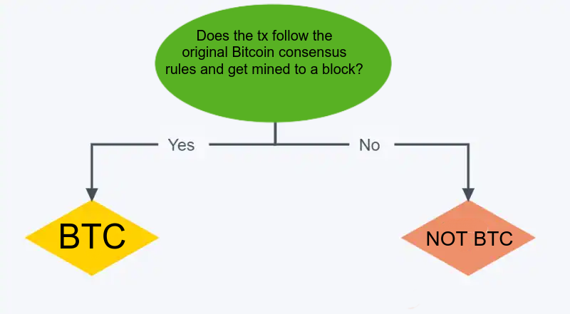
That's all folks!
Meme Collection Vol. 2 - Bitcoin Blinding Lights
"Bitcoin Blinding Lights", by Strike meme warfare specialist ICOffender.
Tags: News, Bitcoin, Memetards, Lulz
Meme Collection Vol. 1 - The memetards
"The Memetards", an A-Team parody video starring Adam Back.
Tags: News, Bitcoin, Memetards, Lulz
Moscow Memetards Move Market
In a decisive blow against mainstream media mongoloids chattering away at computers Twitter meme group member @gegelsmr, identifying as the "Israel Investment Fund Group", posted a tweet Friday afternoon announcing 2.3 Billion petrodollars worth of Bitcoin holdings. The tweet, spread by memetards, landed on the pages of Yahoo finance and other "cryptocurrency news outlets" within hours. Upon realizing they forgot to "Verify, don't trust" the butthurt rage resulted in the Israel Investment Fund Group account being suspended by twitter, likely because they hate competition on the dissemination of fake news front.
Because the internet never forgets, these lulz will be forever preserved:
https://archive.is/0V4Yu (The original tweet)
https://archive.is/2KroC (Yahoo news article)
https://archive.is/qg1Rl (Bitcoin Insider)
https://archive.is/7gZT5 (Crypto Watch Daily)
The Bitcoin market sank to $32,000 on Thursday and was trading at $33,900 at the time this post was published.
Tags: News, Bitcoin, Memetards, Lulz
A simple bip39 diceware script in common lisp
I'm currently bench testing a "Foundation devices" passport hardware Bitcoin wallet, because why not? While the device will happily generate bip39 seeds for you I wanted to test load a bunch of seed phrases generated offline without throwing dice all afternoon and figured a simple lisp script would suffice.
I started with this implementation of diceware. The original author provided no asdf system file or anything, but we don't need that where we're going, so a couple of quick modifications get us where we want to be here. We only need an index of 2048 for our *words* array, so we change that in the script to make it compatible with the standard bip39 wordlist.
(require 'ironclad) (defparameter *words* nil) (defparameter *prng* (ironclad:make-prng :fortuna)) (defun load-words (&optional (wd-list #P "bip39-english.txt")) "Load *words* from bip39-english.txt" (with-open-file (s wd-list) (do ((wd (read-line s nil) (read-line s nil)) ( i 0 (1+ i))) ((not wd)) (setf (aref *words* i) wd)))) (defun choose-one () "Randomly choose a single word from *words*." (aref *words* (ironclad:strong-random (length *words*) *prng*))) (defun choose-password (n) "Generate n random words for a pass phrase. Initialize *words* if needed" (unless *words* (setf *words* (make-array 2048)) (load-words)) (let (words) (dotimes (i n) (push (choose-one) words)) (reverse words)))
Grab the standard bip39 English wordlist from the "Bitcoin Core" Shithub repo, and save it in the same directory as the script naming it "bip39-english.txt".
Load up the script in your lisp REPL (I used SBCL here) and run `choose password` + the number of words you are using for your seed. I'm using 23 words in this example since most hardware wallets will calculate the final word for you.
/usr/local/bin/sbcli --load diceware.lisp REPL for SBCL version 0.1.0 Press CTRL-D or type :q to exit [sbcl]> * (choose-password 23) ("there" "image" "federal" "steak" "renew" "helmet" "attack" "medal" "seat" "game" "return" "way" "shock" "hero" "wolf" "amount" "token" "pluck" "gentle" "evoke" "burst" "siege" "ripple")
The device happily accepted the phrases generated via manual entry, calculated the 24th "checksum" word perfectly, and freed up time for me to continue trying builds of the device firmware. More to come.
McAfee fakes death to avoid eating his penis
Serial shitcoin adventurer John McAfee was reportedly found dead in his Spanish prison cell just hours after USSA authorities were granted a request for his extradition. A lone letter `Q` was posted to his Instagram page hours after his death was reported, instead of the more appropriate `HFSP` which his surviving family is likely to experience if the disclosure is proven to be accurate.
Tags: News, Bitcoin, Shitcoins
trb - correct trivial bug in `dumpblock`
As discussed in the #asciilifeform irc chan, a bug was discovered by user whaack (WoT:whaack) in the trb `dumpblock` mechanism where it would return an orphaned block from disk instead of the expected mainchain block. asciilifeform (WoT:asciilifeform) quickly produced a vpatch which corrects this behavior, which I have tested and signed.
The vpatch and it's corresponding signature can be found in the trb section below:
asciilifeform_dumpblocks_force_mainchain.kv.vpatch asciilifeform_dumpblocks_force_mainchain.kv.vpatch.shinohai.sig
Shinohai's Saturday Shitcoin Selections: Laura Loomer crashes the party.
US Republican activist Laura Loomer started the first day of the 2021 Miami "Bitcoin" conference off with a bang, interrupting the panelist in order to raise objections to him championing Bitcoin as an instrument of freedom, whilst simultaneously accusing him of censorship and election interference on twitter. Event organizers regained control of the room by pinning a gold star on Ms. Loomer, and Jack Dorsey went on to talk about his new hardware "Bitcoin" wallet offering. The "assisted custody" device will include a signing key for Square to prevent users from using actual Bitcoin. (archived)
Tags: News, Bitcoin, Cryptocurrency, Lulz, BitcoinMiami2021
El Salvador declares Bitcoin offical currency
Nayib Bukele, President of El Salvador, announced via recorded message played at the Bitcoin 2021 Conference in Miami that next week he will be sending a bill to congress making BTC official legal tender within the country. (archived)
Tags: News, Bitcoin, BitcoinMiami2021
Shinohai's Saturday Shitcoin Selections 6
It's been a while since I've done one of these, but this past week produced a bit of lulzy shitcoin fodder so here goes.
From around teh interwebz:
A now-deleted tweet from the account "@DocumentingBTC" suggested that one should buy Bitcoin because the "founder of reddit" is doing it.
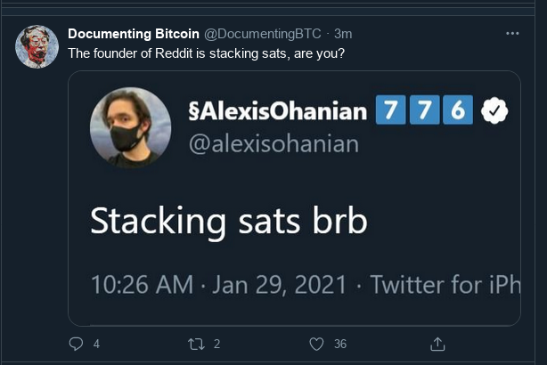
The reader should be well-advised to not emulate Alexis Ohanian in any shape or form, unless you aspire to have fun staying poor. Alexis famously quit his job so a black person could have it and will likely take any Bitcoin he has and pay slavery reparations or other woke nonsense with it.
The denizens of reddit also showed us what happens when one turd squeezes another with the Robinhood lulz this week:
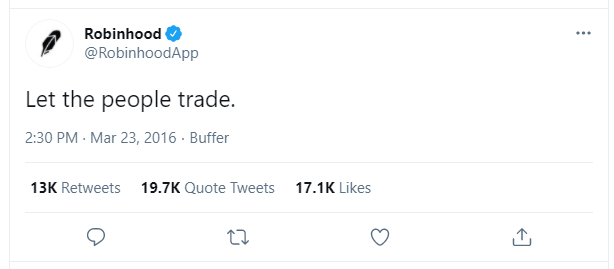
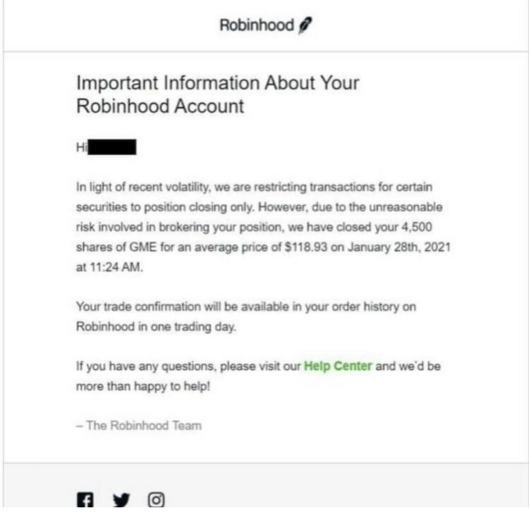
Using tactics learned from the 2016 DAO hack, Robinhood execs decided to stop trading on certain shares though no SFYL is expected to occur from the riots. USGoogle was happy to assist in these efforts and deleted 100K+ 1-star ratings of the trading app in it's store.
Tags: News, Bitcoin, Cryptocurrency, Lulz
ben_vulpes base58 encoding in Common Lisp
As the anniversary of the fall of TMSR approaches the decay of the once-proud institution is evident in the rapidly decreasing number of websites of former Lords. cascadianhacker.com, formerly operated by ben_vulpes (WoT:ben_vulpes) is sadly one of these castles specifically because the guy wrote the defacto introduction to vtronics (archived) and some interesting posts on common lisp.
One forgotten item I found particularly useful was an implementation of base58 encoding in common lisp. Sadly I could find no archive of the original article but after a bit of digging I found a copy of the code contained within saved on an old hard drive. I'm quoting it below so I have a handy reference for future projects.
(defparameter +b58-alphabet+ "123456789ABCDEFGHJKLMNPQRSTUVWXYZabcdefghijkmnopqrstuvwxyz")
(defun b58-encode (bytes)
(let ((string (make-string-output-stream))
(bignum (loop for i to (- (length bytes) 1) summing
(* (elt bytes i)
(expt 256 i)))))
(loop while (> bignum 0) do
(multiple-value-bind (x r) (floor bignum (length +b58-alphabet+))
(write-char (elt +b58-alphabet+ r) string)
(setf bignum x)))
(loop for b across (reverse bytes) do
(if (= 0 b)
(write-char (elt +b58-alphabet+ 0) string)
(return)))
(reverse (get-output-stream-string string))))
Hoaxtoshi and Ayre ring in 2021 with fresh round of lies.
In a continuation of the lulz from last year, liar and Hoaxtoshi Craig Wright (WoT:non-entity) is sending copyright claims to persons publishing the original Bitcoin whitepaper, in an attempt to use non-sovereign courts to attack sovereign Bitcoin. Notices were sent to the bitcoincore.org and bitcoin.org website from lawyers representing Hoaxtoshi, with demands that any copies be immediately removed on copyright infringement grounds. While "bitcoincore.org" decided to capitulate to the ludicrous demands, the owners of the "bitcoin.org" website published the following statement: (archived)
Yesterday both Bitcoin.org and Bitcoincore.org received allegations of copyright infringement of the Bitcoin whitepaper by lawyers representing Craig Steven Wright. In this letter, they claim Craig owns the copyright to the paper, the Bitcoin name, and ownership of bitcoin.org. They also claim he is Satoshi Nakamoto, the pseudonymous creator of Bitcoin, and the original owner of bitcoin.org. Bitcoin.org and Bitcoincore.org were both asked to take down the whitepaper. We believe these claims are without merit, and refuse to do so. Unfortunately, without consulting us, Bitcoin Core developers scrambled to remove the Bitcoin whitepaper from bitcoincore.org, in response to these allegations of copyright infringement, lending credence to these false claims. The Bitcoin Core website was modified to remove references to the whitepaper, their local copy of the whitepaper PDF was deleted, and with less than 2 hours of public review, this change was merged. By surrendering in this way, the Bitcoin Core project has lent ammunition to Bitcoin’s enemies, engaged in self-censorship, and compromised its integrity. This surrender will no doubt be weaponized to make new false claims, like that the Bitcoin Core developers “know” CSW to be Satoshi Nakamoto and this is why they acted in this way. The Bitcoin whitepaper was included in the original Bitcoin project files with the project clearly published under the MIT license by Satoshi Nakamoto. We believe there is no doubt we have the legal right to host the Bitcoin whitepaper. Furthermore, Satoshi Nakamoto has a known PGP public key, therefore it is cryptographically possible for someone to verify themselves to be Satoshi Nakamoto. Unfortunately, Craig has been unable to do this. We will continue hosting the Bitcoin whitepaper and won’t be silenced or intimidated. Others hosting the whitepaper should follow our lead in resisting these false allegations.
Users of actual Bitcoin are, as always, immune to this sort of thing. The whitepaper is included in the trb archives here.
trb project and mirror updates
Discussion in #therealbitcoin channel on irc has shamed me into updating my trb mirror with the obey_sendbuffersize.vpatch. I had previously tested and signed while reviewing the patch with mod6 (WoT:mod6)this past Summer, but I decided to err on side of caution and do a few builds and runs before publishing. The vpatch and it's corresponding seal are now available on my trb mirror:
obey_sendbuffersize.vpatch obey_sendbuffersize.vpatch.shinohai.sig
Current state of The Bitcoin Foundation and other ramblings:
The source code viewer remains down at the time this post was being written.
No monthly tbf "State of Bitcoin" address or treasury reports have been broadcast since August.
asciilifeform (WoT:asciilifeform) floats the possibility of yours truly becoming co-chair of The Bitcoin Foundation, and a slew of improvements.
Annnnd that's pretty much all for now. I will make any updates to the information here in a future post. Stay tuned.
From the 2017 titsbare vault, fotos de Melisa
These are some of the extra pics I had taken of Melissa circa 2017 when castle titsbare/tmsr was still a thing. I found the entire set of 60 pictures on a sd card tucked away in the pogoplug. At Ms. Titsbare's insistence, I repost a sample of them here for your viewing pleasure.
Ms. Titsbare still likes Bitcoin, and welcomes tips to 1tits2qwPKWRVwAtR7EbsUyvZmLwmJ3yF
A mirror of therealbitcoin.org
A recent outage of the Bitcoin foundation website made me think it might be a good idea to mirror the contents in the event another outage occurs due to unforeseen circumstances or cosmic rays". The complete site mirror will reside at http://btc.info.gf/mirrors/therealbitcoin.org and every effort will be made to keep it regularly updated. Enjoy!
More than sixty Coinbase employees exit after apolitics rule takes effect
Conbase CEO Brian Armstrong (WoT:nonperson) has said that more than 60 employees (~5%) accepted the "company's" severance package that was proffered in a recent announcement the exchange made to remain neutral regarding political affairs in the USSA. The controversial move by Coinbase produced the usual SJW outrage across their preferred platforms of Reddit and "Hacker News", with much weeping and gnashing of teeth occurring over their lost ability to spread Marxism further in the workplace. The disenfranchised employees will likely seek employment in more SJW friendly environs like Shithub, where they are free to focus on "things that excite them" like removing racially charged language from computer programs and embedding more equality into silicon. (archived)
Tags: News, Bitcoin, Cryptocurrency, Lulz
Don't call me
When I left tmsr early in 2018, I had the idea that I would poke about in the sewers and hang out my plaque as a freelance "core" cryptocurrency developer. I thought it would at least be a fun way to sharpen my skills and understanding of the "ecosystem" in general, but two years on into the fray I'm not certain I really like what I see.
The above-mentioned ecosystem is full of people who want you to spend hours of your time polishing turds for little or no money. Lane Rettig, a mETHereum dev, hit the nail on the head about what one should expect as a "core" dev for any cryptocurrency:
You’re building extremely low-level infrastructure that the average person will never notice nor understand .... The pay kinda sucks, other people will get rich and famous on the back of your work, you likely won’t receive any credit, and you kind of have to be okay with that.
I'm decidedly not ok with that. I'm tired of watching retards throw insane amounts of Bitcoin at "exchange listings" and javascript developers who write webshit and get paid 10x the amount a "core developer" is expected to accept. I'm tired of building toolchains for obscure machines - which can take hours on it's own - then spend days afterwards getting shitty code I inherited to build in a halfway sane manner. I'm tired of being available 100% of the time to answer questions and walk people through technical things, most of the time without even a simple thank you or a courtesy bitcent for my trouble. I'm also tired of watching myself give people microscopes to hammer nails with. The list could go on all night.
In short, I've had about enough of the "cryptocurrency community" and am seriously considering just sitting back and watching the whole thing burn. And make no mistake - fires will break out and when they do perhaps there is a monkey out there willing to work for peanuts or nothing at all.
Whatever the case, don't call me. </rant>
Tags: News, Bitcoin, Cryptocurrency, Lulz
The caek is a lie
IRC log review
A few interesting and not-so-interesting things in freenode irc.
Still nothing of substance out of #o, low signal.
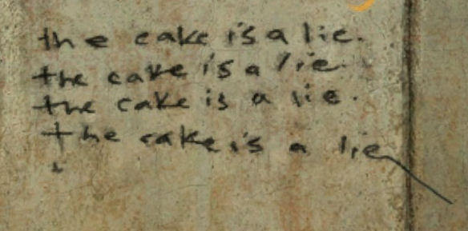
#o alumni whaack (WoT:whaack) is still working on his trb node however, and according to watchglass is at block height 448752.
btcinfobot caused me to walk away in disgust this past week and instead spend the day fishing. After a refreshing day at the river it is now back online and, freenode weather permitting, will remain there for testing. ircbot and logbot are stable, but quest for lispbot command interpreter vpatch continues.
Meanwhile, in #asciilifeform mats (WoT:mats) proffers original fg units for the low price of $100 in Bitcoin.
ave1 (WoT:ave1) officially goes mia as ave1.org goes dark.
trinque (WoT:trinque) continues quest to get vgenesis of linux before it becomes too cancerous.
Otherwise, it's a rainy afternoon in castle shinohai and the caek is a lie.
Deedbot Web of Trust updates - Summer 2020
I finally got around to tidying up my WOT on deedbot, so this page will serve as any easy reference of persons I have rated in my WoT. It is an exact mirror of the ratings table found on deedbot here.
| Rating | From | Timestamp | Note |
|---|---|---|---|
| 5 | spyked | 2020-05-26 02:05:28 | botworks; qntra; shitcoins |
| 3 | BingoBoingo | 2016-12-11 03:12:34 | Regular Qntra Contributor and TRB-ist |
| 3 | asciilifeform | 2018-01-24 11:01:20 | heathendom newsdesk; pogotronics, trb, FG experimenter |
| 2 | billymg | 2020-04-26 10:04:36 | longstanding #trilema member from before my time. former qntra contributor with a good sense of humor. writes at btc.info.gf/blog |
| 2 | danielpbarron | 2017-01-23 10:01:50 | Puts in the work |
| 2 | hanbot | 2016-12-24 11:12:23 | Avid task tackler. |
| 2 | mod6 | 2015-07-03 03:07:00 | Very responsive and helpful testing of TRB & V. |
| 2 | pete_dushenski | 2016-06-29 10:06:34 | trb tester+navigator |
| 1 | ag3nt_zer0 | 2015-07-10 10:07:25 | great assist to newb |
| 1 | diana_coman | 2016-09-03 10:09:37 | Held many euloran noob hands. |
| 1 | mats | 2016-02-14 05:02:09 | The Real Bitcoin tester, #b-a regular |
| 1 | mircea_popescu | 2018-07-18 12:07:20 | he used to be a bigshot. |
| 1 | whaack | 2017-07-19 07:07:11 | qntra writer, helped me a bit with my spanish pronunciation |
| Rating | To | Timestamp | Note |
|---|---|---|---|
| 5 | asciilifeform | 2020-06-19 08:06:38 | #asciilifeform Writes at: loper-os.org ffa, fg, too much to mention |
| 5 | spyked | 2020-06-19 08:06:55 | #spyked Lisp,botworks, writes at http://thetarpit.org/ |
| 4 | BingoBoingo | 2020-06-19 08:06:42 | #agriculturalsupremacy Writes at: http://bingology.net/ and http://mvdstandard.net/ Former Qntra editor. |
| 2 | billymg | 2020-06-19 08:06:27 | Writes at: http://billymg.com/ |
| 2 | jurov | 2020-06-19 08:06:43 | #therealbitcoin Boldly continuing work of trb/thebitcoinfoundation. Writes at http://explo.yt/ |
| 2 | trinque | 2020-06-19 08:06:30 | #trinque deedbot Writes at: http://trinque.org/ operates http://deedbot.org |
| 2 | whaack | 2020-06-19 09:06:50 | Common Lisp, Guitarrista Writes at: http://ztkfg.com/ |
| 1 | adlai | 2020-06-19 08:06:37 | Can be found in #asciilifeform. Lisper that has published useful items. |
| 1 | danielpbarron | 2018-04-05 08:04:11 | |
| 1 | diana_coman | 2020-06-19 08:06:54 | Reichsführer of The Most Cvasi Republic of #ossasepia, S.MG. |
| 1 | mats | 2018-04-05 08:04:10 | |
| 1 | verisimilitude | 2020-06-19 08:06:48 | Writes at: http://verisimilitudes.net |
| -1 | mircea_popescu | 2020-06-19 08:06:37 | Ozymandias, Scammed MPEX users despite his rationalizations to the contrary. |
Yet another musl trb build instructional
A recent post by DC University alumni1jfw proposed significant changes to the trb build system amongst them one that does away with the `makefile.unix` file in trb source directory. This build takes a different tack and changes next to nothing of the original structure, while still getting a statically linked bitcoind.
I started by adding a profile for my toolchain at `/etc/env.d/gcc/` and named it "x86_64-pc-linux-gnu-musl-4.9.4". Now one can switch to it any time you please using gcc-config.
# gcc-config -l [1] x86_64-pc-linux-gnu-7.3.0 [2] x86_64-pc-linux-gnu-9.2.0 [3] x86_64-pc-linux-gnu-musl-4.9.4 * <~snip~>
I choose profile 3, ensuring we use the correct toolchain.
# gcc -v gcc version 4.9.4 20160426 (for GNAT GPL 2016 20160515) (GCC)
Press trb in the same way as described on existing foundation "how-to" page, then proceed to the build directory:
v press mod6_whogaveblox trb054` `cd trb054/bitcoin/build`
Build the 3 main trb dependencies (listed as #Turds! in rotor ), much as Jacob described in his article, and installed them to the `./ourlibs` directory. I also host my own mirror the dependency artifacts on deebot here so I grabbed the necessary items:
In this directory I also put a modified version of the "rotor_bitcoin_only" script called `build.sh` that absolutely, positively *does not remove* makefile.unix. It contains:
#!/bin/sh ###################################### #Turds! OPENSSL=openssl-1.0.1g BDB=db-4.8.30 BOOST=boost_1_52_0 ###################################### TOOLCHAIN="/usr/local/x86_64-linux-musl/" DIST=$(readlink -f ./distfiles) OURLIBS=$(readlink -f ./ourlibs) #TOOLCHAIN export CC=$(readlink -f $TOOLCHAIN/bin/x86_64-linux-musl-gcc) export CXX=$(readlink -f $TOOLCHAIN/bin/x86_64-linux-musl-g++) export LD=$(readlink -f $TOOLCHAIN/bin/x86_64-linux-musl-ld) export CFLAGS=-I$(readlink -f $TOOLCHAIN/usr/include) export LDFLAGS=-L$(readlink -f .$TOOLCHAIN/usr/lib) export PATH=$PATH:$(readlink -f $TOOLCHAIN/usr/bin) #LIBS export OPENSSL_INCLUDE_PATH=$OURLIBS/include export OPENSSL_LIB_PATH=$OURLIBS/lib export BDB_INCLUDE_PATH=$OURLIBS/include export BDB_LIB_PATH=$OURLIBS/lib export BOOST_INCLUDE_PATH=$OURLIBS/include export BOOST_LIB_PATH=$OURLIBS/lib cd ../src; make STATIC=all -f makefile.unix bitcoind strip bitcoind mv bitcoind ../bin
Now run `./build.sh The output for me is a 5M statically linked trb. It took about ten minutes for me to build.
bitcoin/bin # file bitcoind bitcoind: ELF 64-bit LSB executable, x86-64, version 1 (SYSV), statically linked, stripped bitcoin/bin # echo "Size: $(du -h bitcoind)-$(ldd bitcoind)" Size: 5.0M bitcoind- not a dynamic executable
I am pleased with the results as they are on this one. Aside from the benefit of losing the tedious buildroot process, I'm choosing not to change much right now here and leave trb the fuck alone.2
Experimental vpatches for trb
I have decided that my trb mirror could use an experimental patch section as a place to aggregate vpatches I have found useful over time, but aren't part of the "official" trb tree. I have serious reservations as to how much longer btcbase will exist - If the end of TMSR and the Qntra exit scam is any indication, it might be best to grab these items while the getting is good.
The first item in this section doesn't herald from btcbase however, but from Jacob Welsh's Fixpoint blog. This experimental patch adds a "getrawtransaction" rpc call. The only issue I had in applying this patch was due to differences in naming styles of the manifest file, so the item I include here is reground with a note in the manifest that jfw is the original author along with an update of the block time. It should be noted that the patch does not have a corresponding seal at this time, making it a "use at own discretion" item. The bitcoin_getrawtransaction.vpatch can be found HERE.
That'd be it for now. Future updates to the experimental section will likely include a regrind of asciilifeform's "Shiva" and polarbeard's "sendrawtransaction" vpatches, as those are the items I am most familiar with.
Robinhood falls along with other fiat markets
On the heels of a previous outage, robinhood customers reported widespread issues again this morning shortly after markets opened. Monday started off poorly for fiat markets, with reports of trading halts of 15 Minutes or more after the S&P 500 tanked 7% rapidly in early morning trading.
Meanwhile at MPEX storm clouds brew with some users hoping to get their coins off the exchange before the 2020 Lardship list is published.
Tags: News, Bitcoin, Cryptocurrency, Fiat, TMSR, Lulz
Spot the SFYL
Happy Friday afternoon. this week on the SFYL channel we present the following (compressed) image of some derp from twitter showing off his new "secure" Nano Ledger Bitcoin wallet.
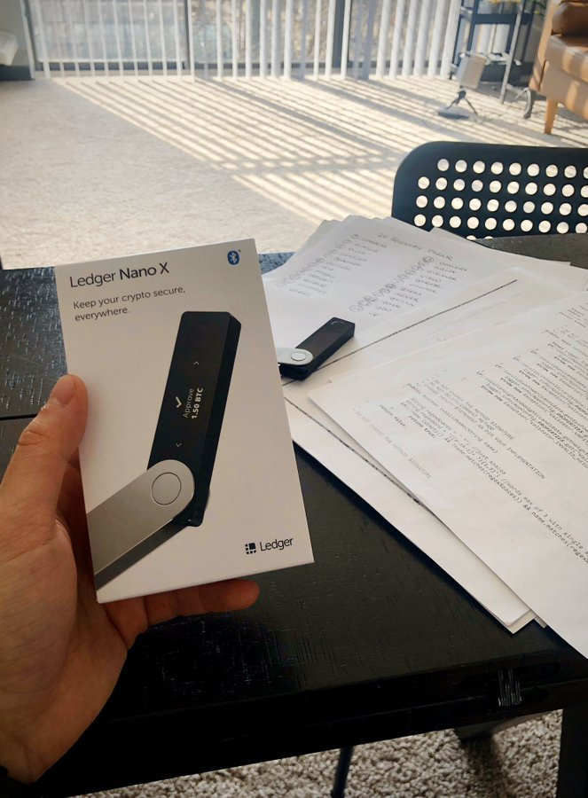
Simon the smacktard forgot, however, to obscure the paper containing his device's seed phrase, conveniently demonstrating that some people just aren't ready to use Bitcoin yet. (archived)
Tags: News, Bitcoin, Insecurity, Lulz
Robinhood trading outage enters second day
Users of "Cryptocurrency" and fiat stock trading platform Robinhood reported widespread outages beginning on Monday, and is still operating intermittently at the time of this post. The ill timed bug, which some users reported may be attributed to forgetting to code in leap-year logic, occurred just as markets began a recovery from novel coronavirus fears.
Tags: News, Bitcoin, Cryptocurrency, Lulz
trb mirror updates and build notes
The Bitcoin Foundation chairman mod6 recently published some new vpatches and added them to the foundation's website for testing. I haven't updated my personal mirror here on btcinfo in some time, at least since the Keccak regrind so this post will serve to do precisely that, and provide updated build instructions and notes.
Though mod6's post only mentions 3 vpatches, there are a total of 5 new vpatches that we will be adding to the trb mirror, as the last updated patch here was "asciilifeform_aggressive_pushgetblocks.vpatch". These vpatches are (listed in press order):
- mod6_privkey_tools.vpatch
- mod6_manifest.vpatch
- mod6_phexdigit_fix.vpatch
- mod6_excise_hash_truncation.vpatch
- mod6_whogaveblox.vpatch
In order to press and build trb you will need a Keccak vtron, for these tests I used esthlos-v. The Bitcoin Foundation also has an alternative "how to" using another vtron version here. I am using the "OFFLINE" build instructions because I host my own dependency mirror and am using that.
My normal development and testing laptop is down at the time of writing, so I used my "daily driver" Gentoo computer when testing, which is unfortunately cursed with glibc-2.28. Though the initial press went fine, I quickly hit a wall during the buildroot step and got the following error:
freadahead.c: In function 'freadahead':
freadahead.c:91:3: error: #error "Please port gnulib freadahead.c to your platform! Look at the definition of
fflush, fread, ungetc on your system, then report this to bug-gnulib."
#error "Please port gnulib freadahead.c to your platform! Look at the definition of
fflush, fread, ungetc on your system, then report this to bug-gnulib."
^
make[6]: *** [Makefile:1842: freadahead.o] Error 1
make[6]: *** Waiting for unfinished jobs....
In file included from fseeko.c:17:0:
./config.h:78:0: warning: "_FORTIFY_SOURCE" redefined
# define _FORTIFY_SOURCE 2
^
: note: this is the location of the previous definition
fseeko.c: In function 'rpl_fseeko':
fseeko.c:109:4: error: #error "Please port gnulib fseeko.c to your platform! Look at the code in fseeko.c,
then report this to bug-gnulib."
#error "Please port gnulib fseeko.c to your platform! Look at the code in fseeko.c,
then report this to bug-gnulib."
My solution was to simply add a patch to `buildroot-2015.05/package/m4` and restart the build. While I can't recommend doing this under normal circumstances (rather, one should instead use a Linux that isn't cursed) I have uploaded the patch I used here for the sake of documentation and thoroughness.
After applying the above duct-tape, the build proceeded smoothly and spat out the usual static bitcoind. To recap, here are the steps:
- Download the patches, seals, wot, and dependencies from my mirror.
- Press using esthlos-v: `v press mod6_whogaveblox trb054`
- Move the dependencies to the proper location: `mv deps/*.asc trb054/bitcoin/deps`
- Change directories and build: `cd trb054/bitcoin && make`
With all the uncertainty surrounding the fate of the foundation in certain circles, it feels good to have a page where my particular build is made public and commented. For the most part trb is in a "leave it the fuck alone" state, though at some point I'd like to see some Common Lisp or scheme wallet functions added to the mix.
As always, the journey continues!
BSV bug leaves nodes unsure which scam chain to follow
The Hoaxtoshi fork-of-a-fork, BitcoinSV, is reportedly connecting to BCash nodes due to a bug that automatically enters "safe mode" when it finds a longer but invalid chain. Aside from this lulzy revelation, twitter user Ben Verret also revealed:
"There are still at least two chains actively mined in BSV, it's a total mess."
Although Hoaxtoshi has claimed in the past to have knowledge of bugs that would "destroy Bitcoin", he was apparently unaware of these particular flaws in his own "BitcoinSV" implementation, since no one seemed to notice the bug existed since November 2018 when their fork went live. (archived)
Tags: Bitcoin, Cryptocurrency, Lulz, News
Rome continues to burn as S.NSA liquidation announced
Mircea Popescu continues the war against his own allies, this time announcing the liquidation of MPEX stalwart S.NSA. The linked article contains many lulzworthy gems, my favorite being:
As a factual matter, for the interval quoted, which is to say the past six years, Stanislav Datskovskiy has produced exactly nothing.
One can easily verify that this is nonsense, thanks to asciilifeform we have the only known fully auditable TRNG in existence, FUCKGOATS, an excellent Arithmetic library, FFA (which hopefully will replace OpenSSL in therealbitcoin at some juncture.) and too many other treasures to list in this post. You don't have to take my word for it however, simply visit loper-os.org and read the cornucopia of goodies within - It's quite easy to spend an entire afternoon reading one post after the next.
I for one am happy asciilifeform has finally uncoupled himself from the capricious Caesar and look forward to see what other indestructible tanks roll out of the loper workshop in the future. As part of my own personal renaissance, I hope I can put some of these excellent tools to use should The Bitcoin Foundation survive this brouhaha.1
More will be published on the continuing saga of TMSR as events unfold. Stay tuned folks!
Shinohai's Saturday Shitcoin Selections 5
From around teh interwebz:
A LBGTBBQ rights cucks the clucks and sends Chick-fil-A packing in Reading, England. Their crimes include not selling chicken on Sunday and a notable absence of filthy faggot fry-cooks in their kitchens. (archived)
Pizarro ISP continues to wrap up operations, after a sparrow fart and a match brought operations to a screeching halt earlier this month. Management responded to the incident by simply null routing Pizarro ipspace and showing affected users pretty charts, hoping no one would notice their incompetence under fire. Electronic keys were revoked in a desperate move to keep the gringo monies in their cache, but apparently it's ok to sue now, this one time. A smattering of mp-turdpress tmsr blogs have resumed operations, though Eulora homepage minigame.biz was still down at the time of writing, leaving fans of auctionbot spam in #eulora irc to find a new log source.
A backdoored version of the Tor browser was used to steal Bitcoin from darknet market users.
Tags: News, Bitcoin, Cryptocurrency, TMSR, Lulz
soopy452000, an indictment
Sometime around the exit of Bryce Weiner, the Unobtanium project acquired a new "developer" who goes by the moniker of soopy452000. Let's examine a few alarm bells on why you shouldn't let this guy anywhere near you coin, or anything to do with mission-critical code for that matter, and put this conversation to bed.
Love 'em and leave 'em. Señor soopy has a reputation of inserting himself into cryptocoin communities, making questionable code changes, and absconding with funds. Good 'ol Bitcointalk registers a complaint from a user who testifies he sold 3 billion Beecoin for LTC, left the community hanging, and moved on to Navcoin. (archived)
anotherlateminer: "Read 2 pages from here: https://bitcointalk.org/index.php?topic=601247.msg8923728#msg8923728 BEEs have been sold in order to be used for development and there are still no signs of any development. LTC are just gone."
Telegram chats have provided a few gems as well:
A kind stranger comes to the main channel to warn what UNO might be getting into. (archived)
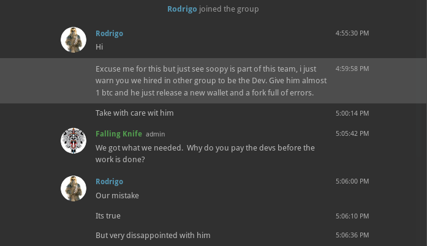
It didn't take long for teh lulz to manifest:
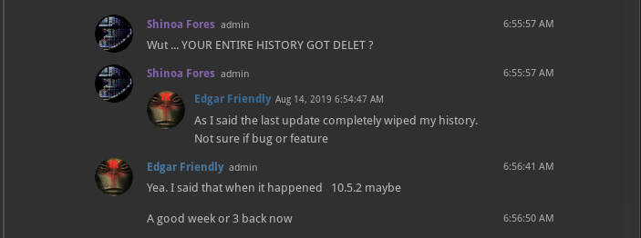
Readers of this blog already know about the war on cryptography from various "nation-states", and why you should be very careful of what tools you use when working with these items. Soopy exhibits very amateur behavior when dealing with such, from generating keys using keybase.io1 (archived), to posting unusable signed walls of text to Telegram chats that can't be verified.
Yes, this has predictable results, and clowns in this camp will likely come up with the same tired excuses to explain it. (archived)
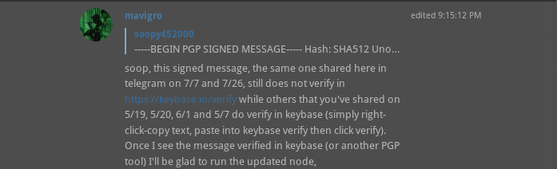
Socialisms, like zooko.usg "dev subsidies" have no place in cryptocurrency. But that doesn't stop picadors trained in the Democratic Socialist Republic of Sri Lanka from trying to print unlimited money, and hoping no one notices, as was the case with 42coin:
"What is remarkable in the history of 42, is that until the spring of 2014 the coin supply was really capped at 42, but on March 17, 2014, the GitHub user sherlockcoin (aka soopy452000) made it unlimited. He was working under KGW implementation and no one noticed this "small change"." (archived)
So there you have it folks, and the above-stated reasons are just a few examples of why I won't be trusting any code pushed by this moron to the "official" Github2, and neither should you. But, Caveat Emptor, do your own research, and decide for yourself.
A patch for db4.8 on gcc8+
The march of "progress" sometimes brings about a lot of headaches, especially when I am forced to work on heathen systems such as Debian and Ubuntu. This became readily apparent while installing bitcoind (core) to a server equipped with gcc-9.1.0 this past week. While building the dependencies, db-4.8.30.NC promptly shat out this error:
definition of 'int __atomic_compare_exchange(db_atomic_t*, atomic_value_t, atomic_value_t)' ambiguates built-in declaration 'bool __atomic_compare_exchange(long unsigned int, volatile void*, void*, void*, int, int)' static inline int __atomic_compare_exchange
A relatively simple patch allowed me continue building error-free. I have included in the /library/ here for future reference. Place it in the root of the db-4.8.30.NC folder and apply manually as you would any other patch.
While impossible to completely rid the world of such fuckery, I consider this just another tool in the box to make things slightly less painful
btcbase logs fail again
The btcbase irc log for the tmsr in #trilema has apparently left the building once more, leaving the crumbling republic with no real-time documentation of it's proceedings. Caesar Augustus hinges hopes on forum member lobbes finishing a logbot, hopefully one that doesn't put the `$` symbol in front of words every third line like it's author. Until then, it appear the channel will enter radio silence.
UPDATE: A Trilema post was made on subject, with the following at the tail of the logs:
Aug 02 08:28:52 * feedbot has quit (Write error: Connection reset by peer)
Aug 02 08:34:50 * mircea_popescu removes channel operator status from deedbot
Aug 02 08:34:54 * mircea_popescu removes voice from whaack
Aug 02 08:34:58 * mircea_popescu removes voice from trinque
Aug 02 08:35:01 * mircea_popescu removes voice from spyked
Aug 02 08:35:08 * mircea_popescu removes channel operator status from scriba
Aug 02 08:35:13 * mircea_popescu removes voice from scriba
Aug 02 08:35:17 * mircea_popescu removes voice from phf
Aug 02 08:35:20 * mircea_popescu removes voice from mod6
Aug 02 08:35:23 * mircea_popescu removes voice from Mocky
Aug 02 08:35:26 * mircea_popescu removes voice from lobbes
Aug 02 08:35:30 * mircea_popescu removes voice from jurov
Aug 02 08:35:33 * mircea_popescu removes voice from dorion
Aug 02 08:35:37 * mircea_popescu removes voice from diana_coman
Aug 02 08:35:41 * mircea_popescu removes voice from danielpbarron
Aug 02 08:35:44 * mircea_popescu removes voice from bvt
Aug 02 08:35:48 * mircea_popescu removes voice from BingoBoingo
Aug 02 08:35:51 * mircea_popescu removes voice from billymg
Aug 02 08:35:55 * mircea_popescu removes voice from ave1
Aug 02 08:35:59 * mircea_popescu removes voice from auctionbot
Aug 02 08:36:03 * mircea_popescu removes voice from asciilifeform
Aug 02 08:36:09 * mircea_popescu removes voice from mircea_popescu
Aug 02 08:36:14 * mircea_popescu removes channel operator status from mircea_popescu
Bitcoin SV scheduled fork will increase block size to 2GB
Tags: News, Bitcoin, Cryptocurrency, Lulz
Animus iocandi
Telegram never fails to produce lulz, and an endless stream of scammers that scout cryptocurrency channels for marks. Since I'm an admin in the Unobtanium channel, I get plenty of unsolicited messages from institutional investors and princes from Monaco that wish me to part with my precious UNO. To wit:
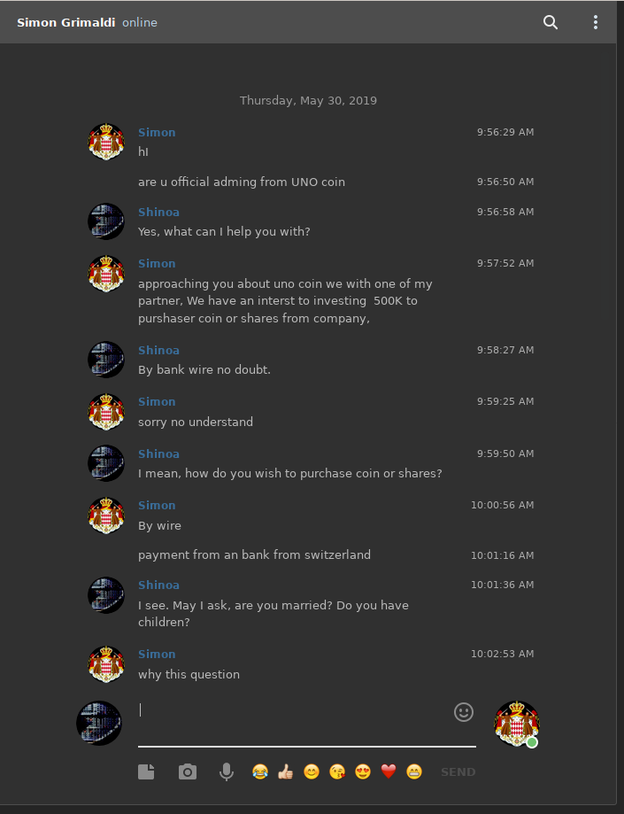
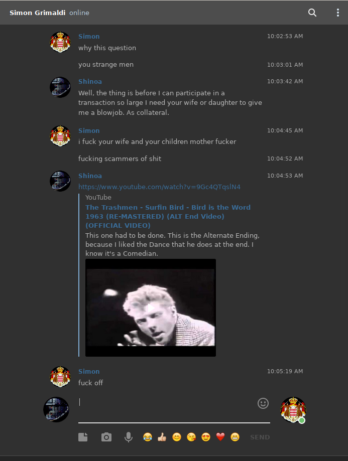
Scammers suddenly get all moral when you discuss sexual acts with them. This guy supposed that blackmailing me by threatening to inform the other admins what I was up to was the solution. Fortunately, the other team members are well aware I'm a degenerate that uses unconventional methods.
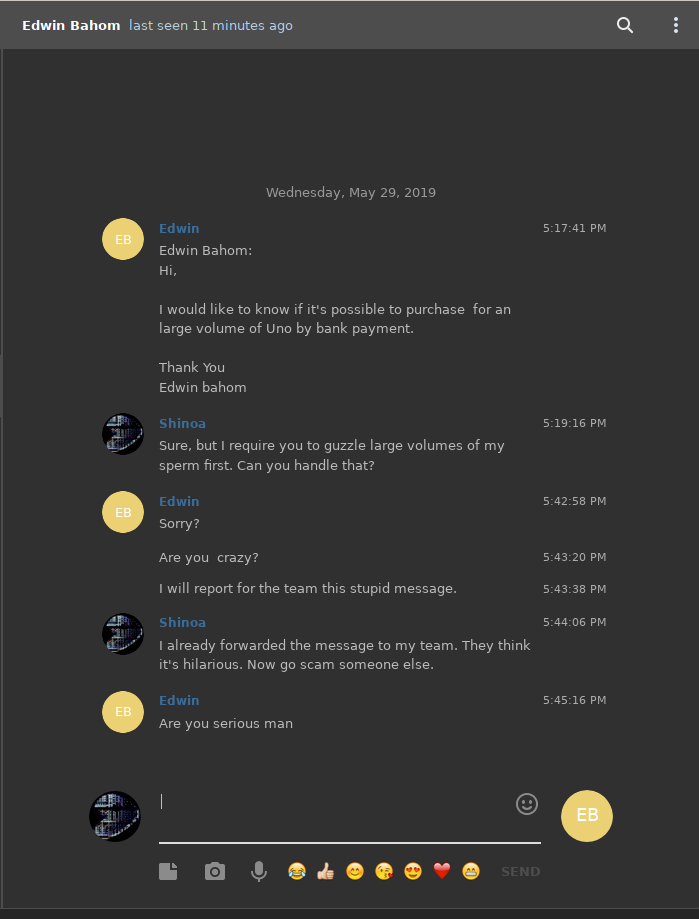
This is, of course, just a sampling of the countless messages I have received. I imagined that I might end up on some sort of scammer "do not contact" list, but since Nigeria alone has a population of roughly 191 Million, it might take some time.
Bring it on.
Tags: Bitcoin, Cryptocurrency, Lulz, Scams
Hoaxtoshi rekt by VERified address signature
Roger Ver gives us our morning dose of lulz with this reply over the wire to hoaxtoshi's claims:
gentoo ~/devel/bitcoin/bin/ # ./bitcoin-cli verifymessage \ 16cou7Ht6WjTzuFyDBnht9hmvXytg6XdVT \ G39S6i4XsfQnixN5ePMjVPboWvGXdnW8xFFAXiwEriZFCclflbD7umP58u3Sl+dvvXC5BxBrRNkTMNf92O1UIXw= \ "Address 16cou7Ht6WjTzuFyDBnht9hmvXytg6XdVT does not belong to Satoshi or to Craig Wright. Craig is a liar and a fraud." true
Hoaxtoshi and Calvin Ayre will likely publish a Coingeek article disputing the claims. Popcorn is on sale in the lobby all this weekend and next week.
Tags: News, Bitcoin, Cryptocurrency, Lulz
Binance Chief suggests bitcoin block reorg to undo hack
Binance CEO Changpeng Zhao actually suggested mimicking mEthereum and performing a block reorg to enable his exchange to recover from a 7`000 BTC SFYL earlier this month. Mr. Zhao apparently forgot that Bitcoin is immutable and many came out to mock his McAfee-level stupid suggestions. Blockstream CEO Adam Back was quoted as saying:
"You just have to accept that Bitcoin is final because a whole bunch of factors which we can get into, but it’s basically, you know, all of the infrastructure is set up to automatically just continue consuming and finalizing transactions. And there’s a lot of inertia and equipment that’s just running away, mining transactions, so it’s very hard. The software is not designed to undo things. The infrastructure isn’t designed to undo it. And there’s all kinds of side-effects if you did. And the side-effects are both technical and economic. "In game theory, if you can undo something, the attacker can do other things. And people who disagree with the reorg can do other things. People are very incentivized to see it not happen because they’ve seen other coins have this happen and suffer a great loss of credibility as a result. And there are also geopolitical issues that, you know, you would establish a precedent that would erode one of the major benefits of Bitcoin, being censorship-resistance, which ties back to this kind of finality of the network."
#btcinfo extends condolences to Binance and Mr. Zhao, and are so very sorry for your loss.
Tags: News, Bitcoin, Cryptocurrency, Lulz, Webshit
Cryptopia exchange makes exit scam official
New Zealand based cryptocurrency exchange Cryptopia is closing up shop and beginning "liquidation proceedings" a.k.a. SFYL. Trading is suspended (again!) and the website contains only a press release this morning, which reads:
15/05/2019 David Ruscoe and Russell Moore from Grant Thornton New Zealand were yesterday appointed liquidators of Cryptopia Despite the efforts of management to reduce cost and return the business to profitability, it was decided the appointment of liquidators was, in the best interests of customers, staff and other stakeholders. The liquidators are focused on securing the assets for the benefit of all stakeholders. While this process and investigations take place, trading on the exchange is suspended. "Given the complexities involved we expect the investigation to take months rather than weeks." The liquidators are also working with independent experts and the relevant authorities with regards to the company’s obligations. Grant Thornton will be contacting all customers and suppliers about its appointment in the next few days. Further enquiries, please email liquidation@cryptopia.co.nz
The final tally of the SFYL from this long-running shitcoin trade hub will be reported in a later post.
Tags: News, Bitcoin, Cryptocurrency, Lulz, Webshit
Amazon opens shitcoin service to public
Need your own shitcoin? AWS now has you covered with the announcement that they will open their "Managed-blockchain-as-a-service" for public consumption.
Amazon Managed Blockchain at AWS General Manager and former Microsoft Tech Support worker Rahul Pathak had this to say:
“Customers want to use blockchain frameworks like Hyperledger Fabric and Ethereum1 to create blockchain networks so they can conduct business quickly, with an immutable record of transactions, but without the need for a centralized authority.2"
Support for Hyperledger is available now, with flaming-tire-in-a-shitpit Ethereum to be launched in coming months, allowing AWS customers to choose the shitcoin service they want to facilitate flushing their money down the toilet.
TMSR logs domain btcbase down for 3 days and counting
Oh the mighty Republic. You know, that place far superior to yours truly1 and everyone else, that will conquer the US gubmint and similar entities? No?
Unlike Jesus Christ, who was alleged to have risen from the grave after 3 days, btcbase.org/log/ has been down for 72 hours as of the time of this post. No worries, really, as this site shows last working i.p. address of the domain as 104.131.72.249 which can handily be added to your `/etc/hosts` file for normal operation. Future references to btcbase logs in this blog will simply be archived to avoid the issue.
The outage is just yet in another of the performance anomalies predicted back in January. Expect TMSR to back-burner a few of the current bikesheds being worked on to bikeshed dns for a while in coming weeks.
Principality of Sealand offers safe haven to seastead couple.
The Principality of Sealand has extended an offer of safe haven to Chad Elwartowski & Nadia Supranee Thepdet, who are accused of violating Thai sovereignty and face either life imprisonment or death if captured. The pair set up a small structure 14 nautical miles off Thailand's coast, and billed the floating home the "world's first seastead" in a facebook post dated April 13th. The couple fled prior to a Royal Thai Navy task force raid, and are believed to be in hiding on the mainland now according to police.
Sealand said further in their statement:
Such a draconian reaction from a national government serves as a stark reminder:why it is important to challenge the status quo. We hope for a swift & peaceful resolution to the situation, & are ready to help in whatever way possible.
Updates to this post will be made if and when they become available
Building Unobtanium on Docker
This docker recipe has so far proved a stable way to get repeatable results when building Unobtanium binaries for 64-bit Linux and Windows. I am mainly making this post to reference the steps I took, as the method is applicable to most coins.
Download my unobtanium-devenv and untar it.
curl http://btc.info.gf/library/bitcoin/alts/uno/unobtanium-devenv.tar.gz | tar zxvf -
Enter devenv and build the docker image
cd unobtanium-devenv/ docker-compose -f docker-compose.yml -f unobtanium/docker-compose.windows.yml build
Go have a coffee and smoke while the container builds.
When that build finishes, start the container.
docker-compose -f docker-compose.yml -f unobtanium/docker-compose.windows.yml up -d
Find your container id and connect (as root)
docker container ls --all
docker exec -u root -t -i <container-id> /bin/bash
From the docker shell, go clone my Unobtanium repo.
git clone https://github.com/Shinoa-Fores/Unobtanium.git && cd Unobtanium/depends/
Let's do a Windows build, just for fun.
make HOST=x86_64-w64-mingw32
The process of compiling the dependncies takes about 2 hours. I usually also invoke `import colombian websluts` at this point. When I return to the terminal we are ready to build the UNO qt and cli .exe's
cd ..
./autogen.sh
./configure --prefix="$PWD/depends/x86_64-w64-mingw32/"
make
Kill another hour drinking coffee, smoking, and looking at cats on internet.
mkdir -p bin
cp src/*.exe bin/
cp src/qt/unobtanium-qt.exe bin/
Enjoy your shiny new Windows wallet. Repeat the depends step and rebuild to produce binary for any arch you have a config for.
The x86_64 Linux version lets you do nice things, like run custom .qss so I darkened the wallet. I will post this config to the blog shortly.
Have fun, and feel free to complain about this build method on irc or telegram.
Tags: News, Bitcoin, Cryptocurrency, UNIX
Mark Karpeles handed suspended sentence in Mt. Gox trial
A Japanese court found former Mt. Gox CEO Mark Karpeles guilty of tampering with financial records, but elected to suspend his 2.5 year sentence and allowing him to avoid squealing like a pig in prison.
Bloomberg reported that Karpeles viewed his treatment by Japanese authorities as unfair, instead of thanking them for helping him shed some much needed weight:
Karpeles has said he was interrogated for months without a lawyer and bullied into signing a confession, a "nightmare" process during which he lost 77 pounds over 11 months.
The government of the U.S. still blames Russian national and former btc-e exchange operator Alexander Vinnik for laundering the stolen funds from Mt. Gox and is attempting to extradite him to America to face charges. (archived)
BlockCypher reveals mETHereum hard fork lulz
tl;dr: BlockCypher decides to continue to offer support for Ethereum despite services being non-operational for almost a month following the recent "upgrades" to the network.
After examining every which way we could think of to add the Trie state to our Ethereum state, we asked Vitalik for assistance. His first comment to us was "oh you’re one of the few running one of those big, scary nodes." We asked him if he knew of anyone else running a "big, scary node" to see if we could possibly sync with them. He knew of no one, not even the Ethereum Foundation keeps a full archival copy of the Ethereum chain.(Emphasis added) We were back to square 1: starting the Full sync again, this time including the Trie state.
This led to stunning results:
"Lesson Learned #3: In the event of a chain re-organization, we may be the only ones to know the entire history of Ethereum transactions."
This seems to mark a developing trend of aversions to a "foundation" model though running big, scary nodes will always remain the only method to ensure a complete and accurate history of the blockchain.
You can read the entire shitty medium post discussing these lulz here if you're so inclined.
Tags: News, Bitcoin, Cryptocurrency, Lulz, Webshit
Thailand SEC bans Bcash, other altcoins
Thailand's equivalent of the SEC announced it would be prohibiting the exchange of BCH (Btrash) and a handful of other cryptocurrencies in order to "protect its citizens" from fraud. The r/btc lemming force is expected to coordinate hundreds of posts later in the week denouncing all things Thai, which likely will stay confined to the reddit corral now that twitter CEO Jack Dorsey said he would not add Btrash as on option on Square payments or twitter. (archived)
Coinomi wallet sends user passwords in plaintext over Google API
Today's Lulz come courtesy of "Bitcoin Wallet" Coinomi, which handily sent user passwords over Google spell check in plain text using their Webshit framework. btcinfo sends condolonces to affected "users" and is very SFYL. (archived)
Tags: News, Bitcoin, Lulz, Webshit
BSV found to host CP
Fork of a fork of BTC BitcoinSV's recent increase in the OP_RETURN data size has led to unknown individuals using it to store child pornography images on the BSV chain. The images were placed into tx's using Ryan X. Charles "Money Button" service, which makes it easy to embed data into transactions. Unlike the links to CP discovered in the actual Bitcoin blockchain, the "Bigger Blocks" allow for full images to be stored immutably on their blokechain and will likely be heralded as BSV and nChain's "Killer App". (archived)
Tags: News, Bitcoin, Cryptocurrency, Lulz
CoinBr announces suspension of online services
The operator of the MPEx brokerage service CoinBr, jurov, announced in a blog post this morning that the service would be shuttering its online operations for the foreseeable future. Lack of interest and 0 usage in the past year were cited as reasons for the change, unsurprising considering the general poor performance of TMSR enterprises during that time period. Captain obvious makes an appearance later in the #trilema logs declaring that hand-cranked processes are superior to automated ones, also unsurprising when proffered services aren't being used.
TRB Keccak regrind - test results and notes
I had originally intended this to be a better version of the build instructions I mirrored from the foundation website, but decided to wait for the regrind before making a post, since the foundation planned on updating everything anyway. A few days later mod6 published a blog post detailing the steps he took to update the trb vtree from SHA512 to Keccak vpatches, so that is what will be covered in this post. What I did was, I went through all the similar steps just as in mod6's post, and I created my own keccak trb vtree, just as mod6 did. I then was able to confirm that my keccak trb vtree and his keccak trb tree are a mechanical match. I also did a diff of my keccak trb vtree against the original SHA512 vpatches, and we can see that only difference is the removal of the UTF8 character from genesis.vpatch.
You will need all of the dependencies listed on the bitcoin foundation website in the "how-to" section. A modified version of mod6's `v.pl` (that produces Keccak hashes) and a few other tools are also needed: these can be obtained from diana_coman's website. I no longer use nor support any other flavor of Linux besides Gentoo for any projects discussed on this site , so users of other distros will be required to do their own research to make all this work. I am using a Cuntoo chroot here, and for the sake of thoroughness, here is a list of the exact versions of the dependencies I used:
* sys-devel/bc 1.06.95-r2 * sys-devel/gcc 4.9.4 * app-crypt/gnupg 1.4.10 * net-misc/wget 1.19.5 * net-misc/curl 7.61.1 * dev-lang/perl 5.24.3-r1 * sys-devel/patch 2.7.6-r2 * net-misc/rsync 3.1.3 * sys-apps/coreutils 8.29-r1 * app-arch/unzip 6.0_p21-r2 * app-arch/bzip2 1.0.6-r10 * app-arch/cpio 2.12-r1
A working Ada setup is required to build vk.pl and the tools from diana-coman's starter pack. mod6 also wrote a handy and very detailed guide to doing this here. Since I am using a clean chroot to perform all these steps, I needed to install a new copy of Adacore, so I proceeded to grab a copy of the gnat-gpl-2016-x86_64 version from the AdaCore website here, though for some reason the page 404'd at the time I was doing these tests. Fortunately diana_coman also has this preserved on her website here for those that might need it in the future.
Once that was installed, I checked to ensure it was, in fact, the proper version:
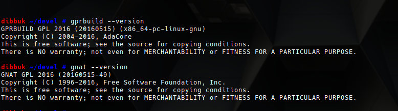
Perfect! Building the starter pack is very painless and took less than a minute for me.
Now I moved on to the actual regrind by setting up the suggested sandbox and moving down the list of steps in mod6's blog post. This also went quite painlessly, my only snafu being I forgot to add back a hyphen "-" for the utf-8 char removed from line 118 of util.h, which caused a byte mismatch later in the process. Once that was done, I had no other problems with the process and was ready to test using mod6's experimental patchset and seals which he handily provides here, along with the signature for same. This part requires one follow the `OFFLINE` build steps from the foundation website, so it will be necessary to download the dependencies from deedbot if you don't have a copy stored somewhere already. I put all the links inside a bash script, intentionally leaving off the -sSL flags so I could observe their download progress.
cd deps/ cat >eu.sh<<EOF curl http://deedbot.org/deed-430460-2.txt > rotor.tar.gz.asc curl http://deedbot.org/deed-430460-1.txt > rotor-db-configure-fix.patch.asc curl http://deedbot.org/deed-422651-1.txt > boost_1_52_0.tar.bz2.asc curl http://deedbot.org/deed-422651-2.txt > buildroot-2015.05.tar.gz.asc curl http://deedbot.org/deed-422651-3.txt > db-4.8.30.tar.gz.asc curl http://deedbot.org/deed-422651-4.txt > openssl-1.0.1g.tar.gz.asc curl http://deedbot.org/deed-427443-1.txt > binutils-2.24.tar.bz2.asc curl http://deedbot.org/deed-427443-2.txt > busybox-1.23.2.tar.bz2.asc curl http://deedbot.org/deed-427443-3.txt > expat-2.1.0.tar.gz.asc curl http://deedbot.org/deed-427443-4.txt > fakeroot_1.18.4.orig.tar.bz2.asc curl http://deedbot.org/deed-427443-5.txt > gcc-4.9.2.tar.bz2.asc curl http://deedbot.org/deed-427443-6.txt > gdb-7.8.2.tar.xz.asc curl http://deedbot.org/deed-427443-7.txt > gmp-6.0.0a.tar.xz.asc curl http://deedbot.org/deed-427443-8.txt > linux-3.18.14.tar.xz.asc curl http://deedbot.org/deed-427443-9.txt > m4-1.4.17.tar.xz.asc curl http://deedbot.org/deed-427443-10.txt> mpc-1.0.3.tar.gz.asc curl http://deedbot.org/deed-427443-11.txt> mpfr-3.1.2.tar.xz.asc curl http://deedbot.org/deed-427443-12.txt> musl-1.1.8.tar.gz.asc curl http://deedbot.org/deed-427443-13.txt> ncurses-5.9.tar.gz.asc curl http://deedbot.org/deed-427443-14.txt> pkgconf-0.8.9.tar.bz2.asc EOF chmod +x deps.sh ./deps.sh
After enjoying un cafecito, the dependencies were finished downloading, so I deleted the script and changed back to the bitcoin directory. A simple `make` completes the process. I encountered no hiccups, and roughly a half hour or so later had a nice shiny bitcoind produced using vk.pl and the keccak patchset only.
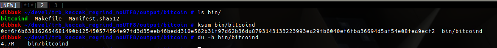
In the interests of science, and to ensure repeatable results I went a step further and redid all the regrind steps in a fresh sandbox, and signed a copy of all the patches with my gpg key. Before performing a press I put mod6's copy of the patches in a directory `a` and mine in a directory `b` and ran `diff -uNr a b` against them to ensure they matched, which they did. This build also went fine with no errors, and output a 4.7M to bin/. Now let's test it:
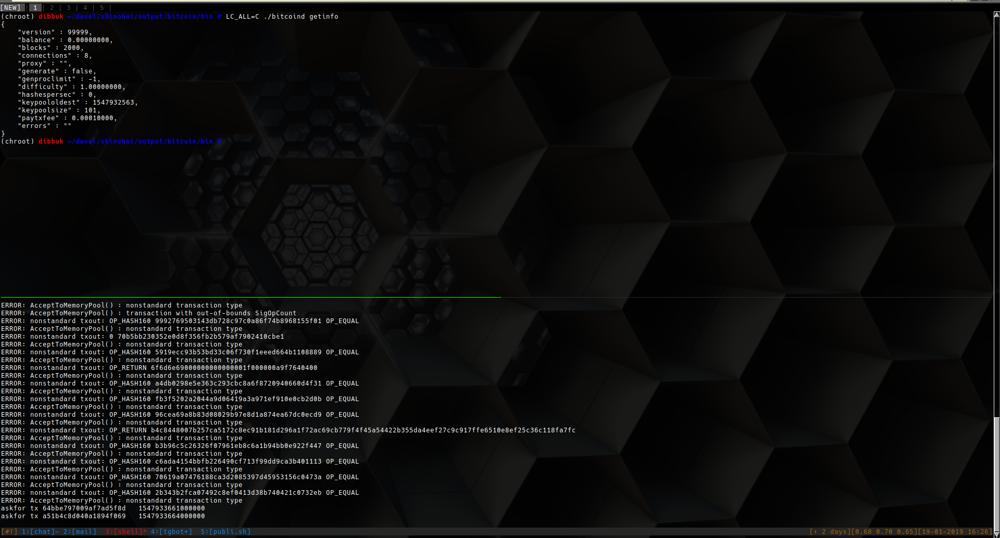
In conclusion, this work represents an outstanding effort on the part of mod6 to ensure trb remains unmolested in the future. I have uploaded my copies of the resulting patches and the corresponding seals here for those that wish to compare them with their own during testing.
mETH Classic 51% front for exchange theft
The 51% on the ETC network reported earlier this week appears to have been orchestrated by enterprising individuals who managed to rewrite tx history and make off with $220K USD worth of ETC from shitcoin exchange Gate.io. (archived)
The exchange reported that the SFYL occured between 0:40 Jan.7, 2019 and Jan 4:20 Jan.7, 2019 UTC and lasted a mere 4 hours.
"All the transactions were confirmed normally on the ETC blockchain and became invalid after the blockchain rollback."
US based exchange Conbase also reported a "$1 Million USD loss" of ETC using the same methods during the attack window. Gate.io announced it would be absorbing the cost of the SFYL for it's customers.
Tags: News, Bitcoin, Cryptocurrency, SFYL, Lulz
ShapeShaft: One third of shitcoin exchange workforce slashed
According to Voorhees:
ShapeShift diversified its product line too early and in too many verticals, resulting in financial, legal, and time costs.
Translation: "We added support for just about every shitcoin imaginable and are surprised at the result."
We had customer issues. Business was declining from both aggregate market recession and increased competition. Our imposition of KYC?d accounts, themselves the result of trying to be cautious in a challenging regulatory environment, caused many of our most valuable API partners to leave us for competitors who have not perceived regulatory risks in the same way. We expected it, but still, it stung both financially and psychologically.
Translation: "We decided to capitulate to fiat demands and are surprised at the result."
2018 marked a rough year. While this new one starts upon some painful reorganization, we?re encouraged and hopeful for 2019.
Translation: "We lost so much money in 2018 we had to fire people but are still hopeful that *someone* out there that will continue to buy our shitcoin bags in 2019."
...and so on.
Headlines such as these have been trending lately, likely Festivus miracles that began with similar announcements by Coinbase, Steemit, Bitmain, and others. Other manifestations of miracles were reported by Qntra this month, where it was noted that mETH addicts were experiencing a chain reorganization with predictable results.
Tags: News, Bitcoin, Cryptocurrency, Lulz
Ledger adds bluetooth SFYL device to stable.
Deciding that not enough cracks are visible in their wallet design, Ledger announced a new device called "LedgerX" that eminently hackable bluetooth support, which will handily announce your candidacy for SFYL to anyone within 10-20 meters. The company already entered the New Year as a loss leader after the wallet.fail team reviewed the device and determining it to be covered in webshit.
A Decade of Bitcoin
On this date ten years ago the Bitcoin genesis block was mined by Satoshi Nakamoto. Despite repeated attempts to sabotage the project from within and without, the network continues to grow and blocks steadily mined.
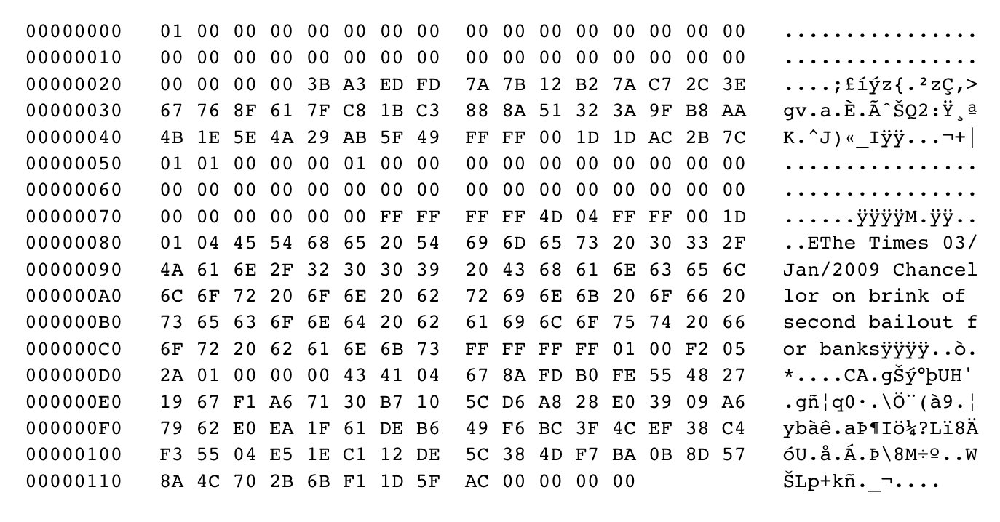
Here's to ten more years of sovereignty ..... cheers!
Bitmain terminates 50% of remaining workforce.
Rumors swirling on "executive social media" site LinkedIn hint that mining conglomerate Bitmain is slashing the size of it's workforce by 50%, most of the affected employees being part of a BTrash wallet development team calling itself "Copernicus". The company famously concentrated a large amount of resources towards supporting Roger Ver and mining the Bcash fork of Bitcoin, and are now experiencing the SFYL that naturally occurs when people chase scamcoins. (archived)
Tags: News, Bitcoin, Cryptocurrency, Scams
dpb removed from republican rss roll
THE CONTESTANTS
The learned Trishop, danielpbarron


ROUND RESULTS:
The theological lulz continue over in trilema, with MP asking for danielpbarron's blog to be stricken from the rolls in the #trilema and #eulora channels on freenode irc - leaving the logs free for more srsbzns like bot spam.
In order to help you quickly find the droning you should be looking for, btcinfo provides these handy NPC's. Just click on the image and it returns log searches relevant to the title.

Do *you* have a suggestion for a NPC that should be added here? Send a GPG signed message to btcinfo()atsdf.org and we will make every effort to include it on these very pages. Non-encrypted or non-signed content is simply ignored.
At the time of publication this morning, danielpbarron had not responded to the event on the pages of his blog.
Vitalik completes meme circle
Buterin finally gives away some $300K USD worth of ETH as he exits school to focus on breathing new life into the mETH industry. Diploma mill University of Basel recently awarded Butern an honorary doctorate, presumably for his work in quantum computing schemes and building a product that consistently loses user funds.
Tags: News, Bitcoin, Cryptocurrency, Scams
BCash continues descent into obscurity.
Bitcoin Cash (a.k.a BCash, Btrash) saw prices fall to a record low of $82 USD across exchanges today, representing a 98% decline from the all time high. BCash has suffered rekt syndrome since "Hoaxtoshi" Craig Wright decided to split to his own chain, known as "Bitcoin SV", a few short weeks ago. Price for this fork of the fork of Bitcoin still sits below BCH, at $74.50. coin.dance reports just slightly over 1,000 Bitcoin ABC nodes in operation at the time of this article.
Tags: News, Bitcoin, Cryptocurrency, Scams
Decade sentence recommended for former MtGOX CEO
Prosecutors in Tokyo's District Court recommended a 10-year prison sentence for former MtGOX CEO Mark Karpeles in their closing arguments today, asserting that he "betrayed his clients and used a huge amount of their money" and constructed a flimsy excuse to cover it all up. MtGOX was formerly the largest Bitcoin exchange in the world, but went bankrupt in 2014 after around $423 million USD worth of Bitcoin and fiat went missing. Karpeles claimed "LOL, we wuz haxed" and that the money discrepancies were personal loans, though prosecutors allege no documentation exists to support his version of events. (archived)
Cyprian cryptocurrency charges collapse in court
Alexander Vinnik, operator of defunct (though recently operating as wex.nz) cryptocurrency exchange btc-e had all charges against him dropped in a Cyprian court. The plaintiffs withdrew all charges of "fraud, money-laundering, and other grave crimes" according to a statement by Mr. Vinnik's attorney. (archived)
Tags: News, Bitcoin, Cryptocurrency, Scams
How to eat shit and die, a manual.
Serial scammer "Bitcoin Tre" announced on twitter that he would consume his canine companion's shit if the USD price of Bitcoin isn't $10 by January 1rst of 2020. Trevon James is well known for peddling Bitconnect jenkem for r/edditards to huff, and was named in a class action lawsuit by Bitconnect losers in September of this year. Mr. James is the second individual this year that has proffered to eat unusual items, with John McAfee taking the lead by offering to eat his own dick on live national television.
Tags: News, Bitcoin, Cryptocurrency, Scams
Chinese Ethereum vulnerable to ancient bug
The NEO platform (Chinese Ethereum) was discovered to be vulnerable to the same default settings bug that caused mETH tards to have funds liberated from their nodes back in June. Chinese tech company Tencent first reported the bug, and encouraged all users to update their nodes as soon as possible, instead of correctly advising users to simply abandon the platform, and anything else remotely resembling Ethereum. Coinmarket cap lists an imaginary valuation of $532 million USD for this corn riddled steamy pile of Asian shit.
Tags: News, Bitcoin, Cryptocurrency, Lulz, Insecurity
Filipinos to be paid in trash to collect trash
Residents of Manila may soon be "compensated" with mETH tokens in exchange for spending a few hours cleaning up trash on beaches in the capital city. ConsenSys, billed as the largest development firm on the flaming-tire-in-a-shitpit that is Ethereum, hopes to kickstart their Bounties Network dApp by appealing to uneducated 3rd-world users who might be tricked into believing that the tokens they receive have any value. Participants in this scheme with any intelligence at all will hopefully immediately swap any ETH received for actual Bitcoin on their preferred cryptocurrency exchange. (archived)
Tags: News, Bitcoin, Cryptocurrency, Scams
Twitter account of target.com hacked to promote giveaway scam.
Unknown individuals gained access to the official Target twitter account earlier today and attempted to promote a 5000 BTC giveaway scam. The tweet posted by the hacker(s), now deleted, asked users to send small amounts of Bitcoin to an address in order to participate in a chance to win the Bitcoin prize, which is worth around $30 Million USD at the time of writing. The incident is another example of the poor security used by the twitter platform and its unwillingness to stop the proliferation of scams that usually target "verified" accounts.
Tags: News, Bitcoin, Scams, Webshit
United States v. 7.26611032 Bitcoin
The U.S. Marshals service is auctioning 660 BTC today that it stole from various entrepreneurs under the guise of the "Civil Asset Foreiture Program". One must deposit 220k filthy fiat dollars minimum in order to participate in said auction, which opened at 8 AM EDT today.
Buffer overflow bug discovered in segshit address scheme.
A buffer overflow vulnerability has been discovered by satoshi labs in the bech32 address scheme, used by Segshit and introduced into Bitcoin by "Core" developer Pieter Wuille. Satoshi labs assures users of their already pwnd Trezor devices that the risk is minimal and can only result in denial of service attacks, but released a firmware update immediately after the bug was confirmed. (archived)
Tags: News, Bitcoin, Insecurity, Lulz
Vitalik gushes over scam success
mETHereum founder Vitalik Butterin admitted in a recent tweet that he is "really proud" that his 70% premine scamcoin has been so much more successful than his quantum computer scam.
![](data:image/png;base64,iVBORw0KGgoAAAANSUhEUgAAAoIAAAHhCAIAAAB1GkgrAAAACW9GRnMAAAJ2AAABEADbzjFdAACA AElEQVR42uydd3xT1dvAnzuymzZd6aSb2ZaWlpa991CUFxUEQVFRQQUZMkRBhgiIDFHx58ANKKjs
vZfsvaF7j3RkJ/fe8/5xIda0tEmaNgHP94N+0pOTc57znOec5555CYFIAg8QyzwlMgVgMBgMBoNp FEhXC4DBYDAYzH8X7IYxGAwGg3EZ2A1jMBgMBuMysBvGYDAYDMZlYDeMwWAwGIzLoDmWuf8RuVoW
DAaDwWD+Y1QZDROulgWDwWAwmP8YdBX3i4fDGAwGg8E0KnhtGIPBYDAYl4HdMAaDwWAwLoOu8vkR WxwWCiipmJaJBRKxQC4VEgTJcRxBEARBEkBodUaN3qQzmrV6k9HMulpYDAaDwWBqgK5/Eo0MQYBC
LlZ6S0VCmiQIQAQQCCECABEEQRAEQogEkElFUrGQJEiCIHRGc6GqsrRCh1e/MRgMBuNWUCRJWf4Q iCQCodjVIj0UkgBfhSQiyNPHUyKgKYL3wUAAIILkXTABiCCAIAiCBIIAAoAkCEJAU76eUj9vOQKk
N5oR9saY/wi0mAhuASQFBo2rRcFgMDVDULTQ8ofU09s937BEEoSvl0jp4yGgKYIAhIAgCEDAD4IB gPe6CPGuFyiSBAT8yveDITKQJAEADMvmlVQWlFZw2BtjHmuI4Fb0i6tIqRdCiD2xnt35qaslwmAw
NfAIuGGRgIoKUQgF1P3xLvCDYAQACCGEEEWRBEkAECRJEATBMhw/NuY44CelAcDyf4IgECKNZvON jFy90ezqwmEwToaITiVbdgWTkWoziJD7WsLZc1sQx6LidO70n8AYXC0mBoO5j7u7YU+ZMCzQkyKo
+6vAAACAECIIgiIpBIgAQqfTmhnGbDaRJEFRtIdMLhaJEAKEEOIQQRIkSSEOAIAgKIIgSJJECLEc upNdoKpswMm61SuWJCXGnz138e0pM+v/89r/fHRxw4I8/9z/DRv6pI+Pt7pS8/RzoxmGqX+ajVNM
suMIwcDJtcfhCu6Y17wIjKnhxMBgMLbj1lu0fL3EwX5SkiQAIQ4BAQAESRAAgAgCGNasVqsrKioL CgrMjJkkCI5jzWYuMNDX3zdAIpEqFF60kDKbGYRIfgmc4yzbuICmqFaRTe5k5xeqyu0VbPHCOV06
tdfrDQOfes5o/Kc7o2l6x1/rPTxkx47//e57H+bm5sk9PLJz8ywRfvvlO4qi/m/4GAe0UT012/nu q1UtmjcFgM/XfPvL+o2W8HEvj37xhRHXrt96dfykBqrEBi1XQxARHvbmG68AQEZmdlZ2TvUIFmVW
R6PR9h08jP9cn7p2DCSU0n0m1BmNDGxKJg3hTv/eaIJhHIAIjaf7TiCCWwAtBJIiyMfwcCniOOBY YEwo7yaz53OUc8XVErkG93XDvl6iUKUHX1MkCeT9JWGEEMeyDMMwJSUlBfkFZoZhGAYRYDSD3EPg
6SlTq9VlpSpPT08PDw8/f39fXz+WQRwCkiRpmgQgWJYjSX6KG5qHh9AUlVtcapdsW7fv6tKpvUQi 7tAu9dCRY5bwdinJHh4yANi+ay8ALFq6ouqvktskhIYE5RcUOaYQq9Qc46XRz+/ee6CkVOXcyqoP
TimXEwkOCuQ/zJ77UVp6hmOJ1LOuHYP0jyAEIltiEsHNGlMwjF3QT0wnE/qDyIMABASJHuP7DUkS SJKghRCZLHztW2RQs+e2sLtWulqsxsZN3bCnTBDiLyOAAAL44S/HsQRBIkSYzWadTlNZUaHWaYwm
A0mRJEUSBCegSQ6xeoNOJBISwOkNWiA4rU6t12tDQsIpoMwMA4AEAhF/QvrBOjNEh4QYzUxJeYXt 4p08dValKvPx8e7ZvUtVN9yzexcAKCuvOH7yNPx7HvLrL1bEtmoOAEGByhOHdh48fOy9OQsBYPDA
fk8/ObBJaAgCSEvP+O6HX8+cPV9jprXPanZsn7rko7kkScxdsGTPvoM1psCynFQqmfD6yx8uXPqw ojUJDRk75vnkNoleXp5qjebipStrf1x3Ly2d//abL1e0atl8059b/9i8ffLbb8S2alFSqvpj87b1
v/1Ri7qGPzt02NNP+vn5ZGXlrPn6+25dOj4xqN/lq9dff3OKVbk+X7m0TUJcWnrmqJdet/z8h2++ aBoTefHy1fFvTwOA1vGxL41+PrZlc4FQmJ6e8dOvvx88fJSP+e2alS1bNNv4x5bLV6+/PX7c9Zu3
ZsyeZ1cZ+XkOPtrPa78EgO59nzSZathDcPPWnbGvvV1jeR9W1wDAclx4WOjUSW/WqLp6Fg3p1Q+r gr5N6LdbiwZv197/24TXht0RevC7VPIQJBDC/WscCAD0iN3nYA8Piobub92ReNGdRlHthrGnNv6n
nLE7TnSIBGSYUgYAiOB3QZMkSVIURZIABDKZjFqtxsSYSAKRFEEA4jgOIfDwEMrlMolEDMABQRgM DEWTQUGBJpMxMzPDaDaLRCKEgGNZfrsWQggRBAKKIKFFRLhEbMdJLZZld+45AACdOqSKRPcX12ma
7typPQDs3nug+mriuQsXc3LzAcBgMB48fOzqtZsA8MLzz856d1KzpjFnz1+8ey89IT52+ZIFcbEt 7dVYeHiTD9+fTpLE19/99DAfDAD7DhwCgH59esbHtaoxQkx05LdrVvbr01MkFl29fpMkyZ7du3zz
5QpLfKPJDAABSv9VyxY1bRotEAhCQ4LeHv8q//xRI//31BNvj381OChAXakxGIwL5s5q2aIZAJhr 8m37DxwGgKjI8MAAJR8SGKBsGhMJAHv3HQKAdqnJq5cvbpeSdOv23UNHjkVHRS78cFafXt35yAaj
if/JzGmT/Px8pBKJvWW8fOXapSvX+Jinzpw/ePgYx9k9Fqmxrnkoklz16cc1qq6eRUMevoKXVtco j0JELOog3p31j8KpDs+RbZ+yt1yYBkTuL5y1j2z/DBIIiUfuKiWngYAAQiCmOo8UztgFEi9Xy9NI
kEKx9P4/kaT+yTlBIBIig+UURRIESQAJiCSBIIAEDgFiDPrKktJcVXkhR5gZziwUkVK5UConPLwo Hz95VEyQv1Iil9MSMfKQE4DMQLJSmbhcVXL71iWDQSMQClgOAUES/KQ0AgIRJKIoUhAb3ZSiKNvl
3LZzNwBIJOL27VL4kNS2SXIPGQBs27Gnevw1X39/6vRZACgrr3hvzsJ1v20CgI4dUktLy3bu3jfr gwUTJk5Lz8giSeLpJwfZpTG53GPJwjkymXT33gNrf/y1lpgZWTm79x4AgMlvv8E/i1gxfcpEDw9Z
fkHRiBdemTBx2vAXXsnNKxCJhNPeeZOPgBACgM6d2m/8a2v/J54ZMfpVnU4PAIMG9H1YpqNHPQcA Wdk5z73wyrgJ73z8ycqY6EhLUlYcPHyMZTkA6Ng+lQ/hx6ZmM7P/0BFecpqmjh7/+63JMz5csGTZ
ys8BYMLrL1serQCgQ/vUfQcOD31uzPxFn9hbxl/Wb/z51/uLpis++/K9OQsd2J9VY13zJCcl/rF5 O686vd5QVXX1LBqdPIT0Dq5RngWp4nwt+uLqP5sYCIKge46zt1yYBoIIjRdO2UxIPP/DDvhfEEAQ
Hr7CaVtBGeVqWRoDkmUZljWzjJllnbAdtP4oFWKxkCQIkkQkiUiKoIAjgEUCijToNYWFWRynlcnp oCBvX19PHz+5VEYKBEgk4sRi8PIUhof5RUUogwPl3p4CoYArys/OzkynKEajUaVn3jGaTAKRhB9g
EyRBIoJEBMGRACAWC0MDAm2XMzMzmx/l9Ox2fzTDD2tu3rpj+4LiG29NfeL/nv9oyXIAoCgqJzcP AJqEhtguBkmS8+fMbBIacunKtYWLl9cemaaoz9d8q9PpmzeLeXJwf6tvAwOU/FTq1u27VGXlAFBZ
qd62YzcAxERHWlZMAUBVVv7zr78BQE5u3plzFwAgKDCgxhxDgoP8/XwBYOeeAzqdDgD27DtYXPLQ lfiy8vILFy8DQMcO991wp47tAOD02fOVleqwJiG8co4cO8l/e/joCQBQ+vvxrp3HYDAsX/VlQWFR
9YxsL2OdtGje9MShnVb/6nyEKiuvWXX1LxoZkVj1z+diBH2b0ADQtwndP5yeclzP/vuxh/D0B59Q 28uLaSgikoTjviFoIRDYBf8LQigVvfkLBDStf1JujnutDQtoIsBHDAQBCMByQhgIiiYMBk1lRZla
UymW0P4+vsCYvGQiVkLo9ayUlgCBKNZEMiYPmVTLMqSXzEsqJiihRmOoqNQyDCJJVFRUIBR6REe3 QAhxHBAEgQD4PRAExZHAhQb55JcU1bgQWCPbd+2Ji23Bz0uzLNelcwd4yFD4YURFRrw69oVWLZv7
+fpa2iBN2zEoT0yI568loUjKlnFbSanqx182vP7qi6+98uKBQ0erfhUacn8slVNl03JuXj7/ITgo MC+/gP+cnZPLsvev6S4tVQGASCQCgE4d2i1dNNfy23fenW0wGPnP+Q9+CwDZ2bm8b66R/YeOtE1O
TE5KFImEFEW3SWgNAHv3HwKAAOX9mer3pr/z3vR3/i18yJ27afznrOwcg9FYY+K2l7GBqKq6kpJS i+rqXzSuNIts2sHyp4FFX3aTzD1jmJQgWnHJeKucs45v0qPKQtzxuxbCO1jw0mpEksRjvA/LcRAi
aeHra01LBoK+0tXCNCDu5Yb9vETEg31ZxINNVAQJCLhKTaVALIyODGVYvcJTWlFe6SHzENBS0lMi EgoqKytJAhQSoa/Cg5OLPaQytVbPMGA0MQXFxaXlWkSRpSU6VWlxeFikQCBBiCEAEQRFAMcBiVgB
IkgKqGC/kIy8DBul3bv/8MQJr0mlkvbtUkxGk9xDZjKb9x44ZOPPfbwVq1csVnh53r6btvbHX9Vq zfBnhvJjNdshSeLsuYvJSYlxsS0G9u+zY9feOn+y7rc/Bg/oGxoa/OpLL5SWlVePUHW62DJ3zXH/
9ONVl3VRrZeR1djL13704uDhY1MmThAJBcltEsVikUBAGwzGow/GiDxHj/+dnZNbNaSgoNDyWavV 1amEOstYJ7Vs0aqFOlXncNHYs1uoxMGEWMb/uTmdkdCGxR3EV0q5L6/WcESYO72RYPD1NS6GnvAL
UDR+GHoYBAASCIVv/2Za3L/+qbktbuSGKZLw9RISxIP7Ke+7YQCC4BDn4eVhNJSTJOfrITfp1FKa 85YJ5VKZh0yEgAtQyAQUCQTXLDxEKhbp9LrySkqvNzGsiOIMLGsuUlWQJGs26xnWKBCKEEJAAAcc
gUiC4IAgEAIgyAA/ZVZ+Fods6o51Ot2hI8f69+3VtVMHg8EAAEeOnlSrbb0PJDUlSeHlCQCLliy/ dfsuAAx/Zqi9Srty9cbbU2a+P3PqgH69xo976dCR4/zcby2YzeZVX/xvyUdznx4yeMu2nZZwy8nd
0Cqz4v8MHx8MGWvh3PmLz4582fJnSUmpUunHf646ax0aElRLIpWV6rPnL7ZPTbac/jpy/KTeYACA gsL753/+PnX2zy3b7dWVU8rYQNS/aFBw2/zXAuHwRZaA9XfMBTruVhnHVnP3bNpZZtcq3Pu7FvqZ
BaTIw9VSuD0ECR4+VP+Jj/HeaTfaKa2QC+6/sAEIkiAIXjQC+OsqKZqsrCgrKS5AjIEz6zyltEJC +3tJgv28gv28WkSERgYHxsVERYYEBHjLld7y8CD/AB+5mGYUHgKpkCKADQ5WCoSUTqejKJIfbCMC
EIkIQECYSdIIYKAoxlfhbbvM/BR0u9Tkdqlt4cG+rYfBsCwAeHnKBQIBAIgf7M3mP/To1qVVy+ZV w23BaDQCwJpvvjcaTT4+3q+8NMqWXx07cerkqbMURQ4a+M/WqsLCous3bgHAEwP7eXrKAcDHWzF4
YD8AuHrtZlFRcZ3JGozGnNw8yz+D0Zidk8cvwfbv24vf3Nu/b89aZqR59h88AgApbdukJLeBB3uk ASA7JzcnJ49PjaZpAOjaucPe7Zt++u5L3mHXSf3LaCNWdV0n9S8aAKDc61Yhh3LZ/JreK4ZyrmEf
7GJkPmTrPnhHVp0QCAFBUB2GA+FG3sq5uNFo2F8hAiAJggRABEESBIEQB4gkSYJDHElSEpmM5Ljm zaIN6gp1abGQQr6eUl+Fh0QqEdBCs8kkEJACkpNKJSIBodUSiJXqNBojASEhSlYs12uhsjKbY1n+
Lky4f8U0ie6/polECADIAB9lcZmtt3mcv3g5N68gJDgQAIqKS86cvVBL5KysHACQSiXff7360pVr G37/g2FYmqY+XvBBZlZ2bMsWf23d8fSTA8PDmnwwa+qK1V/Zrrri4pJfN2x6afSIYU8/uWXbrozM
rDp/snL1mrZJa4T/dhJLPv3s8xVLgoMC1v34dVpaRtOm0Z5yD41Gu3jZKsfqFCG0/rc/xr82Njws 9Ldfvi0sKo4ID8vMygkPq21z0OGjx6dNfjMivAkAVFSqT505Z/lq1Rf/+3jBnPi4lr98vyYrO7dt
chuRUHDg0FGNRlunMM4tI79Fq3r4tJlzj588ZVXXS2xIvP5Fg7I8LvMSGZ5QR6VwLHul7sULTIMi eO4jwp1GQe4MAYBIivq/uezGD1wtS4PgLnZAU4RULOJ3GwHA/XlpgiAI/s2FpFAg9vL0Uvr6BwcG
tkmIa5uYEB4c6OctD1T6BAf4Bvr5Bvj5SsUigmFIAgmFNAJEESRJkgQJYpHQSy7jEMuYzWbGzLIs QvzuLwoQgRABSACcCHFiAiRyqY+AtmkEw7N95/09WTt27a19oXTH7r2Hj54wGIxKfz+aojKzcuYu
WJyZlSMWiz1ksrkLFi9b8fme/YfKKypatmhO23N6CgB+Wfd7aWkZTVOT337DlvhZ2bm/bdpsFXj7 zr2XX397z/5DCKGE1nEmo2nXnv1jX3vbcn2HA/y87vdvv/+ltLRM5uGBEHp31tz8gkKodVFZo9Ge
PnP/DpMDh45W3Xp27MSpSVNnnTt/ydfHJymxdUZG5sLFy2s/ptUIZayOVV3b8pP6Fw0AzBtmsffO IITIalt+EMsAAKcpY37/APJvObGwGAcgIxLw1mg7IAmqRZf6J+OeEEKJB8D969JEUg9XvdrBy0MY
HeJFkgRCAAiIBy8QBiAQIJKizIy+rDTL34vu0q51gEJKMRxFIA+ZxNNDQgsFtEACCJlNBgIQQRJm ltXqDRXlmuLyCqPBXKjWZhRXlJebb98uUAZENGsWZzazwG8CQwQAwQKiSBohgkOk0WC6lXG3Uquu
f6EwNcLfybz/4NH3P/zI1bI8niCRDBgTPfAdut0zfAhXWWT+8kVgTKC347Y4TANBNOssHL28/un8 d0AABALjsieh3GUbOBoOd5mUlkloAMQhRADBv0WYnzomCJIggWURTYqEtFhdWV6Qm+dBBYlIwksm
IQGxLENyJEEAy3FAkJSAIAhSbzRyLEJAyGSetIBFlXqNWsNxAoGABoJEiCAIkgUggSCBQECSJIuA YTlEkLRQSPn6+GA37CxGPPt/yUkJOp1+zvyPEUJhTUKaxkQDwOWr11wt2mMLYdQCALPtE1SaTUQk
Qf5t9uJ2UDtt5RtTT6h2wxByZDDsKYCrI+TVw1v8qtY9/LgiRUD6C/JiA0r+TVP1c72K4KR0bITf uEt1foHdtqQRsmtk3MUNS4SUZZYS3f8PAPh9VCRwiBYJxGKpUVtRWlbpr5D7ymUkJRAKxZRQyAGY
GIYiKIIkWA4BII6gTayZFnlIhZQZaUihkOM4lmVpivL3VpCIMyN+HzaB+D3SHE0SNBAEAophWZqw Y5MUpnZUZWUd26cAQFhYaG5uXlKbBIoic3LytttzwBrjAATiuBPr4MQ6VwuCsYYMblGfCWkzBz/e
MlmFNDIsgvdPG/SNeOSNIICMSmYbu6CNgbu4YbFAQAB1/4XCBEHef6EhQQEQiATgCI4BitaY2FKt Xs+A1sD6AGVgCZOZNLOshCZEAjCZjQg4liMMJiq/xJSdV8ICQYkoPUNwNG1iWImIFDJGymwAgQAI
IcEhjuBYkhQyJIWABcQixCHOrvulMbWze+8Bg8HwzP89FRUZHhkeVlKq2n/g8Ddrf9bp9a4WDYNx ESJpfX5t5uDDM8b6pOAUfrjZqOfOEQJC5lOfFJrHJyq8fc4cO8xx1t6cJKmUzt3Ky1S3rlxszELx
uIsbJgmSgPtXdwCHCBLun1giCAQERRMkawqSSRVEQGFRpirIVy4JUFfocnOK7uUXGoEL9lKEBvvI PcUkCRqdMTOz+OKVe6pKvcLXR+7tYWIMnNGkrdAYKwwasiQ8JNJgNCEKkQgIIDgSOJIlOJZBwBIE
w5n0RuwhnMnhoyf4qxkxGAwAAC10bFK6dvzFxPQkUecgWiEistTcj7dMP982O/aTs894mDnosEkD AOv6SjsFUuvumKefNNAEXBshv1HG/t8unWVS2kMA10fIL5Vwyy8ZP2wn9hURh/KYKcf1egYAIEVJ
zUsVR3uRV1Xs+tvmTzqJf7ltnvm3Q+/4EtfrmHV+VkZksxbtuvU8dfhAVU9MklS7bj29fHxvXDpf j+Qdx23cMAWIQPwKAAKEEAJABEEgQARBMIhRSIVJIcFBXq2OXwattoKgAnLz8tTl+nKNrkBTQZqN
Rp0qpEmgv79P2t20GzfSgoMjY1sHGkxGo8lgMoKfR5OLFbcIBOHKgGBf/8KsbIrgaKAQAo4ggSRY gkRAEATJGBgfv0DIvOtqlWAwmMcTgiDhwT1FDiClIWv0PyvEOVrUcZNGQMIvfaTNvcmvrplulnGj
mws+ai8WUsR3N0wPS6eWnxzLZ4ZGCQKlRKUJpSipIj3qFkwDQIIfJaHhcN6/RpMGBgAg2IMYHyf8 /a7p2Rjh4HD6aqnwi6smGQ3f9JB4CYlVl03Feu6dRBEAMA5NoRMEgew8P2JFZUX5if27O/bqV9UT
W3zw8f271RXl9UnfYdzFDRPA8TuXOQBABEIcQhxBkCRJAiCEzFKRyF8kaunrJ0tOPnr3HMsaaJrw 9vKMaNlaTXJNvATlRXkkSUhFHjKxtHlMTERUM5mnoqCwwMyZxLSAZSDtdholFMQ3b84gjua3aXEE
AkQiYDgSEAkkBQTNgUlnxJf8YTCYhgJxLJCEw6Nhq7XhciMCgE5BVAtv8kg++9E5IwBcKmEPPiUb 2UxQixuu5SdH8tihUYJUJWVgQUjC/66bZieLmnqR7QMoADic96/9YPzThJ+YGLBVX6RH6ZXc510l
rXwoAGgfSHuLiCN57KeXjADgJSLebSNyUGmAgK3v0nBleVlVTwwA7br38vL2Ob5/t7q8rJ6JO4y7 uGFAHMFR96elSURTNAEk3D+0hFgWMSzjIZUIACllHk18vFkBatIq0qhh9AxHEqAvL5OJRIAIs9bg
IZSwAk5TWsLotB4CWiCSiYXiohKVkKJAIg0MDLyRngck/3YlhABxiCNIFiEEBIUQyXIajbruS4kx GAzGQcxGEDve99a4NtxERgJApvr+SDNbwwFAqKy2myFq+cmRPAYBtFXSAhIKdOjnW6Z324i6BdPt
AugKE1wsYas/QqgMqEiPAKBAhwBATAEA+EsIAMjR3s/CkpejJXdoKvvf/OOJu/cCAJf7YHAfN8yw nEgIAAg4zmg2FZcXUbSAIEmSJOUeHkKxsEKjr2CZSo4V0FR0UHCethghnaeX1IMlzEaOEIiNRiMB
pEKiyDfnCzjw8ZCKxUKKpgEhM2PmCMJgBhZRLEmW6/QcRSGCIEhACBABFCcCjgSKYhApBE5MuYta MBjMY4ihkhB7ODwpXSNZGg4AwuX3/W6kJ2kJdOAnJQZ0o4xLUVIyARzKZXQMnC1iuwbTbZXUoTyG
Q0BV88M15lSqR1DlaSBCXo8LowhATnrPksUTA4DLfTC4jxtWlVVKRT4MwwpFwvJK/b20ewRFkQTJ cmxwUEizZjFaveFiRmZEWHsBRcuFJqKyWCSiGEYrJgSeYiHDUEZSUqnWG7RGASlkzRUSkdBDKiUI
xDGc3mhSm0zFmkoJkuerytUmMycSswRBAAKSAAIQYgkOCIIkANEkxeI3z2AwmAaDy7pGKoKcu0Pr RAF7s4zrEkTNSBLdKedebiUEgG+umxz+yZE8ZlwrIUnAx+eNAHA4j3m3jYgi4FCuHW+mP1XIqM3Q
OYiakigqNXAjmwkdLyECLvOSs9RVWV52eOdWANDrbL4stsFwl8ssDWaOIkmRSMivB1MUCYgDAIqi GY4xmRmRVJ5dUnEpM1dDS9SMgEECvdaMGI4kWLGYkHuKzWYjCSTDIanUk6KFqrIySkDRAlqj0xpY
Lr2gqKjcoONQWm4BoiUsKWCBAiABECIQSXIEZeLAwLBao1mj1qpcrQ8MBvPYwp742elpmjkYuVe3 8Z756SjBwvZiAmDyccOGu2aHf3I4lyEJYBEcy2P4P/kR8JE8O9xwpRleP6S7V8m9HiscECb49oYJ
HJ0EIACxx52pN71O6w4+GNznMkuFjI4KlGh1eqmHtKS4JCMrmyBJlmNZBCEhQU1jWlAMQZtN3h7C tsmx4ZH+GbcuCVlDoI8HJUQcyXqIJPm5ZZWVTEiTpkXFpcf/PioQoXbtkrwVivKyyjv5qjNpuQVl
unCfSC+xkqEkOoEAAYhYjkKMiUI0EnGI5BBp5lCFWpeZl6bRlru6ajAYzGOLaM5xJBQSzpyWfgR4 qYXww1TRkgvG1VdMdv6UQCadaV5XV5egQXCXSekKjfH69TwOMQTBcQgoijYYTUIRbTKaS0pUZvMN
IUdH+fnLhMK9f5/xSpP7CYkYDw9TBQeelEkKMpry9PUsVBXeTk+7euNWhV6bFB9PysT5KhVn5gpV ZTK5tzcll8i8SSQiCSEgkgBEIiA5giaRGVgOcQRFcwRJCCm9wS0ekTAYzOMKm36WbNYBHvc3HVIE
/N5fGi4nV102qgzo1VihmYN9OXaMp3kQQtydx/buAYoS/DNZTwuEAqGLLpAiSH9/YUiIf6mqeNiw oS1aNj177iotIAQC2mgya7Vqs9mgVesIgUTi5VOsKqNpIjI80MRoOdIMJDJojRKhXOkfLBFIlN7+
8a1aSWSSO/fuIorWI8grLvP2CdCqGRntITJzAqNByCIS0RyQFEUCwZo5RJAkCxwiUFmFSqXCt+9i MJgGhLt1gu78wmP8Dl0eBJBeycV6U0Ojhb1DBVlqbtYpw9ki+/dLc4z581GAHs/ZA3cZDQOASsOy
qEhrMO09sBdxhJenmKBAZzAJhAKSRATBMRKKFYoJkMolYDDrykizt4+IMZRLTKReTxTnZJAMJRVI JSRVllOcU5pvEhABYYqr6Wmevt4iWgQmkMjF/iJaziEjRxVxVKGZZSmggBPSIjNLkCQQCKlKCu0S
WxkYlNA2JTi0CUWRCCGNWn398qVrly7y3w4bNVpdXr5725aqP4mIjh7y7Igf//flS2+8+cNXX5YW F9WZi0gsnjB1+g9ffalRV1p9sPr5i69P8PHzAwCEkE6nK8zLPXpgvy1Z2I5FGOcmi8H8hzBUshd3
UG0GP+7jYThdxA7bXZ8joAQCjj29CbjH8j5pADcaDQNwiJJLOY1aXVmhrSjXxjRtIpbIyisqKIpi GJaiaG+Ft4+3H4sYlmMMRr1MJlL6KDijjgJW4eXNsmbEsAKKYFkjg0yUmPIJ9K80GFQajUzun5Vf
SYkVALRJp2VZttLMaEmBWSDgCOAQy3EkRVNAEBqtNr+ogLX5kHiHbt2TUttdvXj+8N4950+funjm dEFeblxim1bxCbdvXAMAlmFTO3U6f/p01bvTOnXvVVFedunsmds3bpSrShFCfQY/iRBXrnro1jCa
plM7dr507qy6soL/FUlRfIjVLoPEtqnnTp3867cNZ04cv3PjenhkVELbthfPnqmlFHXmbgXLMBbJ XWMrGMyjD3fjMNVxOAiExGPviusDAtCWM2tteo36I4obTYkgRGTn6vhr3oRi8t7dnIL8QhJoDhE0
LUQswTJmvbGCA5N/QIAyMKIgX5uVpaLFHixJ6kwaH3/P0MhAvyCFl79M4S8PbBJI0KTJxEiEsqyc Ej1DI1psQEQFyxZoNSV6vZYxIYpgACFCIBAIWYYlAIpLS0wmW/cOpHbq7Ovrt+HH7+/dvs1x96dZ
VCUlO/7cZDIb26SmAsDdWzfMDNusZUvLr0RicXSz5lcunAeA0uIi3uX7K5W2K8ryq4fBMSxjNplN xjJV6bVLFxTePrVf2GNX7jbKgMFg6sS0agSwDH6afRgIADFG02fPuVqQhsWNRsMAQFJCzlxJEhRJ
kIgAM4MoigaSAERSJCUU0TKZmBbQHCEQ0lKzkdFrKr3kAqEAiaViRJAsAqFYSNC0GbhSrYYlBSq1 +cLFmzdu50U1jVco/DRqNQJWIBKJ5HKgBZRQSJLg5elhMppYlpFIJDfv3mZs8y5e3t7de/f7Y/06
xLGduvfsM/iJpJT2ci+v4CZNvBSK65cvd+7Z+/K5swghmYc8Mibm+uX7J95iExIDgoIO7NopEosn znjv9o0bfQc90SQiIjwqxsvbO/3OneCwsEFDh3Xp1Tu5fUdlYGBmWhrHspbRMMex/K9MJqNlNKzw
8R097nWdTldSVJjYNrWoID8vNwcAPOSe7bt2KyzIu3PzhlTm8db0mdevXDYaDACQ0Dal78AnLp8/ N+SZ4VVz9/b1HTBkaNdevduktvNVBuRmZbIMIxAKJ82cXV5WNmzUaLPJXF6m4mVgzKZJs94vLioa
9PSwrr16t4iLL8zP16jxq5oxGNswadm083TSoMd+kdgBEEEAx5q+HANlua6WpWFxr7onSAGiFBzH mUys0WBmORYogmMRIBIh0mwysRzDcEx5eUVBgaq8wggglEjlaq0+v7RSx5JGRKvNYKJERlLECWQq
tenC5Vu30gv1OjOj05u1FUZdOQCnNupVFWUMoxeCidNXVhQXItZIEuhO+j2D0dbXh8UnJl29dMFs MvYcMMjHz+/H/6359vOVGnVF2/Ydi4sKy8tUMo/7d69fuXAuNCzcS6Hg/4xNSLx68WLV6dzNv683
GY27t/61f8d2AOg3+Mm7N298uWzpD19+7q8MSO3YsXZJPL0Uw0aOOnbwwI0rl/mQrn36Tp49Z/Ls OeMmviOVeRw/eKCWn1fNnaboocNHlRQVfr1qxfdffiGRSHr0GwAAiOUAoHmr2D/W/Xzr2lXLbznE
AUBCm+RNv/70xbIlqtKSTt17utqIMJhHiqwLxm9eBcaInHqp1uOASW9aPQIK77hajgbHvdwwAAjE vh6e3mKJyNfPVyAUMAwHBIkAUSTB8Uu4FC2RSCmKYlhWrdWQBKUMDNIYuNwidbmO1TBUhZGoMHIF
Ks3Jc1dvpuXRAhlNUpriXEKn8peLCI7x9vWTymXIrOP0Fb5SoZdECIit1FSkZ2fbLmdIk7CMtHtS D4+W8fF7tm4xm0wAkJuVbTabi/LzAQBVmabOy8lp1ToRAHz8/AICg65dulBLymu/WH325AkAMBj0
WRlpPn7+tUT2kMv/b+Sok0cOW0bbAHBk/77lC+cvXzh/zadLb1+7OvKVcZ5eCpsKFRbm4elx/PBB hBDDmE8fP9YiNo4kSUQgALh2+VJRfr7BYP0WyHOn/9ZptRzHpd25bXnawGAwtpJ12fjpU6BTIwD0
n18nRgQAQqiy2LRkEBSlu1qcxsCNdkpbYEhvkZRTeHmazCaNzkALSNZs5gQki0iRUCqTeGn1jEhA iwQ0ZzZqNJXeXp4BQaH5BaqrN+4Vl6g0Gr1Wqy9UlVVqGUTSZpNBKhCatCXGSlRUpjFSMjVLGQ0m
MGhkAspTLqdE0jK1/mZ2vl1CyuRyTaXaz99fU1lp8UzNWrXKzc4CgMDgkJKif3YRX714vn3nbieP HIpNSMxKv1dZUVFLygltU+IT29ACAQBIpbKcrMxaIvcf8rRQQFeWl/8rlOMQ4gBAp9OdPXWyeVxc
bELipXNnbSkUSVJvvDPVEmI2mTzkcq1WAwBqq1weoNfd3waJOI4g/+udCAbjCJXFpo960U+8SyUP AUr4X/XFBAAHJiNzYh279wtXC9N4uKMbZjnSzEjL0jOAJIVCgZllSZogSEQQNIDIy8tf4U2pK0tN
usoAHzHBMazRTBGUUunrJffxyi/Jys5VVWSJxVIOGWmRwNdPGaz05/Rqb7mkwqC7nVGgylCZTWYZ mGhGi1iWo8SEhy8plNglpNlsEggFlZWVHnJPTy+vyoqK2IQ24ZFRWRkZFE116t7zwtnTlsi3rl3r
3qdfcFhYi9i4g3t215Jsk/CI7n36rVv7bVFBPgD0GjhIJqvtTdcHd+2gBYKBQ4f98s3/NOqa7z3n 92fxjpl8sARVY7KaykqGYT7/ZLFVOEVT4Nx76DEYTDWYrUuYrUvoJ6aTCQMIkQwRiAACEY/tGBkB
PCgcAkCgq2DPb2V3rXS1XI2NO7phACBpmcgjwGwsZRFHkoRQSBIERxCERCxnGCgszGbMZW3iw5Vy gkB6kkNCAadTazw9/KM6tEtNQddvXquoVFE0qQwMMDFsTk6uqlgX2MQ/MKZZuegeVFAarV5fmCEE
EIhFIPK21wcDQHF+QZOw8KuXLp46fnTEiy+bzeYrF88f2LVz0NBh4VFRl8+dS7t9yxKZYcw3r17p 0r0XSVJVwy2wHCeTeZAkKZZIGbNZXVlBkmR08xZh4ZFaTW07nkpLSkqLi4JCQp985rkNP37HMiwA
kDRFC4QAIBKJWsTF+/r77966Ra/TmYzG6KbNzp466eevjGnewjJtbsk9NydLq9G079z11PFjBAHt Onf18fPb/sdGV5sDBvMfgtm6GLYuJqNSqV6vQmAzoAVAUEC63QKiE+A4xLHAGFHOdXbv51zudVcL
5Brc1A0DAEl7URwYDQUcCyQlRCQtEEo1elShLi4pKYiLC24d37wk+5rZoEOsBy0USKVCs1GXnZGm 0Rp05eUSEaUM9JNI6bJKtVBg9vSWcSSiRFKV1syJvISUREgybDnNcjQtkDog3qXzZwY8NfTOrZun
jx09feyoJfzrVctrjH/l4oVRr4w7c/K45WhTVa5fvtSj/4Cops22/bExM63V2PFvmc3mm1cv7962 ecizw/s+8eThvXtqEebgnl3PjX6x14BBe7ZuAYDOPXp17tELAIwGQ2lx0Z8b1hcXFgDA/l07Ovfo
1b5rt5ysrIvnziQmp1jlvuX3DX+u/6V7n/7jJr5DkGRhXt6B3TtcbQgYzH8RLu00l3a6/ulg3B93 ebXDwxDSTFig+PLtLIFvqEwaRFFyiqQQU94kAA3t11qoz6c0xT5yCSVXmEFgMJDAiSsrNIgxccik
8JWTAtCadGUVZZVqo0wRc/mu9tiVfCTzNTAGGc1xqkLW5q3R1WnbrkNsYptDe/dkpd9DCBEE4alQ NG3RKjQs/K8Nv7pacxgMBoN5BHB3NwwAMpnERCBKHgCk1MzSAIgGg5AtfqZfUqQvJzQWeQg5I9C0
2JNlSEBCjuEYo5ExGzy8ZWqDVscYCVpgMNOlatmmnZfMwsBKBoA0CcpzCba+7xUOaRLWJiU1ICiE IIGi6DJVafrdO9cuXtDp6nN5GwaDwWD+KzwCbhgAgCBJsSfIFBxNASJpApEmbVSA+P96t/GRqVl9
EWJZoVBCUbTZxLJmM2KRQCRkCKJCb6CEIrF3YKmW/v2PwyVqsdokJFg1oVcRyP7rxTEYDAaDcSru dYvWw0GIMSB9BSCWEwpZoAlCrKnQGczG8OhwH6W/2cgRiCAAcayJIoESkCIPT7WBE3r4eviF5pSa
tx+6nJGnNekNpK6YMGsJvO0Xg8FgMG7Ao+KGH2A2grYcOBaRUkokzi8qKFSpvH2DZGIvsdhDIpGY THogQSj1EHr6aTmZAeRnLqZv3XsuO0sFei3BmvC5GwwGg8G4D4/IpHSNUAJCICRI8JCKQrylTZv4
xMX4K+SI4SCvVHs3u/xWemlBsdqgNyMOzz9jMBgMxh15lN0wBoPBYDCPOI/jkXAMBoPBYB4RsBvG YDAYDMZlYDeMwWAwGIzLwG4Yg8FgMBiXgd0wBoPBYDAuA7thDAaDwWBcBnbDGAwGg8G4DOyGMRgM
BoNxGdgNYzAYDAbjMrAbxmAwGAzGZWA3jMFgMBiMy8BuGIPBYDAYl0FTFH3/I8JvAMRgMBgMplGh TQbdP3+I3PtlwxgMBoPBPF7gSWkMBoPBYFwGdsMYDAaDwbgM7IYxGAwGg3EZ2A1jMBgMBuMysBvG
YDAYDMZlYDeMwWAwGIzLwG4Yg8FgMBiXgd0wBoPBYDAug65/Es6i56Cn5F5e/GeEkF6nK8zLuXHp vNlksrtUAsGgZ54/sH2zuqLc3m8bAWVgUELblODQJhRFIoQ0avX1y5euXbroEmFsgUweQnV+wbxy
2MMiILFcPPuA6bPhXEUR/wEV3nNu2YmYdoKhc8FsMC1/2ukFtMj/MLFdS1hUTEzLuAPb/6rhO98w wchloKswf/PKP8WR+wmenEFEpwJj5C7vYXauIFiz3bnSQtHc46Yvx6Dc665WAAbzOEMLxdL7H93g
Msvrl86n3boBAARByD0Vie06tGnX8fTRQ87NhTGbD2zfrFVX1jOdxHYd87OzCvNy7PpVh27dI6Ki Tx8/un/HNo7jAMDHz699l24xzVps2bgB1bsWqKff564fRLeOWX12B+pTdqrds9ydk+Y/5xGuLoX7
QMS0pwdN5YrTSal31XDBcwtBV2Fe/n8gkgqeX0r3eJXd94WNabqbzWAwjz0kyzIsa2YZM8syrhYG EMuxDMMyDGM2l5UW37h8URkcShDOnzlXV5TzbqA+eCq87f1JaqfOvr5+G378/t7t2xYBVCUlO/7c
ZDIb26Sm1r9oZEBMjZ9dTj3LTkg8udJM7IOrQgS3MH//JuTe/FeoXzgZ3obZvAjUxVCSye5dTaY8 jcBWzVnZTP2fCzEYTO240aR0dQiCIAAQIADw8PSMS0r1Uig4hIoL8q+eP8OYzQKhaOCw4ef/Pt60
ZZxEKqmsqLh4+qS6vMySQufe/ctKi69dOMf/2aJ1Gz9lwN+H9/OT0jqNZvBzI08fPdg8LkHm4aHT ai+eOlFWWgIAyuCQuDYpIom4vLS0MC8nqlmLfVv/rCpbatceCh/fNh0652VlXD7zt6eXIjYpxdNL
gQCVlRRfOXfGoNdZFcfL2zsuoc1P3/wPEOrco1fz2FhAxJ1bN8xmU2V5+cnDh5945tnzp06BQCKa c8T82/tUj1cIRSCXfo7Z8Sk9ZCYZ0hKpcs0bZkFxBgAQ4YlU/4mEbyhwiEs7xfz1MWHS0iOXESEt
6f+by13dT8j9LJ/ZLYsequSAGGrAO6QyCgGHsq4wO5ZDZSEAEM060v3fAQ9vKMrgMs7/8wO/cHrg ZDKwKeIY7t4ZZucKwqCusyptLftD5KFfWEGExtKBMSiut/nrcaI5R0y/Tqd7vkJ4B6OyAuav+Sjn
GvLwFc/YZfz0aVDlAADZ7lmq7RDz5yNt1CcAEOFJ9PDFhJc/V5TO/LUQCu48rLxIJBO/f8i0cQ49 4B12//+4079TPV4lk58khFJk1LCnNnLHfrLSgI+/MrZNW5lcjhAUF+RdOv03y5gpin6oBQaFxCWl
CMViTUVFaVFBjVrljnxfPZAMbokqCkB7vxVwOTcEMgXhHQRleXXWe1X7YXcsAwAysCk19H3COxiV 5zN/zL8/Qe0knWAwGHDnLVqeXt7N4xPysrMAIZKk2nfvU1letvuvTQe2/SUQiVq3bQ8ACHEAEBoW
cXTvjp1/bNCq1ckdO1d9fE+7fbNJVFOSIgEAIQiNiMq4c9vyLQIOACKim508uHfHxg2ayooWrdsA gEAoTOnUNf3OzR2/r792/kxMyziOsx4TnD5ykDGbL5w8dvnM3xRFte/RW1VctPuv3/dt+QMhlNyp
S/USxScmXb10wWwy9hwwyMfP78f/rfn285UadUXb9h2LiwrLy1QyDzkAAGIBgIzrafpyjOnTp8nQ OMHwxcyfC4wf9Ua6CqrTSABAQNBD3+euHzR91Me88hkyoBnddTQAML9MAYOG2TSX3bKo6ueHapkW
02NWosyLxiUDTZ8+BRxHPzsPAJBYLnj2I/bEr+aPeps3vk/G93oQXyQYvQoV3DUuHWxe8Swh9aIH T7OlNm0t+0PkYX6ahHKuM0e+N3/xAq8fOuVp8/dvGhf2RiUZVO/xteVtgz55yLie5m/HmT7qg0qy
6GHzaikvwTIAQMX1Mf/wNnd5NxEaR3Ueaf7fy6aPepl/eJtqOwSUUVZStGnfKT87c+fGDQe2/eWl 8GnaKq4WC6QFgradut27eW3XpvXnThwJDo+wo+VIvUBXZcFFXwEAhFRhS71Xtxkqvs99PRdlUH0m
OFcnGAwG3M0Nxya1HfL8GP5fl34DVEWFF0+dAABfpVIikdy4fAEAsSx799qVkPAIy2T1vVs3zCYT x3L3bl33UviIJBJLgnnZmRzLhjSJ4BOhBYK87AyrTO/dumE0GBDi8nNzeGfg7ecPQKTfvkUQUFlR
npeVUbvYPsoAoUh8+/oVAOA47u6Na37KQIFAaBUtpElYRto9qYdHy/j4PVu38FvPcrOyzWZzUX4+ AKAq8+Ts378TJi2oi1FxOnfnOKhyCMbMZVwgvQIAgABkXv5/3NEfCQDQV3D3ThPKSAcUTkQkElJv
5sj3BCCCMbPHfqYikkDsSYYnIIpiz20GACjP5y7t+ie+pz+zfw2BOGAM7OG1VOu+iKx7TsXGsj9M nuoJMifXgUZFcAx76yjpHVynALXr836cE+tAowLGxJ5YRwXGIA/fh5cXAQB7cTvk3QBDJdKogBSQ
bQaBXziUZJpXDIOiNCsB9m/98+6NawQBZpOxuCDP88FuxBot0Nc/gCCJzHt3AUCv0+akp9VZwCqV ajX/TADw8tZd7zXo+cSv9/V8+xivZyfqBIPBgLtNSl+7eC7t1nUA8PUPaNe1V/qdW/yKtUgiJUhy
wNDnLDFZhhFLJGazCQAs078mgwEARCKRXvdgnRuhzLu3w5s2z85IaxIZk512h+M4kqKqZmo0Gh5E 5vguSySWmExGS9elUVcqg0JqEVsklpiNBosTNRoMACCWSs0V/9rjLZPLNZVqP39/TWWlwaDnA5u1
apWbnQUAgcEhJUVFlshIV/FAKAbp7w9uCJZFxH3hyXbPUslPglAMAITUm8u84IjG5b6gK7dso0Va FQCApx8h8yb0agLdLxHSPJjnl/sBRYtm7K6iPh3h6Y8MmtrzsbXsD5EHDNX202nL7+uEYxFZ99Nk
nfoEAFT5QP/aMgAgZYqHlRc0pQDwzzRveZ7561epDs/RY79EgLjTfzKHviX+7foim7YIj46haBoA hCJxSXHhP0lWs0ChWGw2mSwWyFuUrWjKQKaoonpvAEC6sn/FsV3PD/T2j56dpxMMBgPu5oaBQxzL
AUBxQX5uZlqb9p2O7N4BgAw6LcuyOzaus5ZeIAAAkVgKUAYAQpEIHjhjC+l3bzeLjff09gluEnZ4 93ZbpDCbDAKBCKH74wqZXF57fKNeJxCJCZLkPbFYIgEAvU5rnazZJBAKKisrPeSenl5elRUVsQlt
wiOjsjIyKJrq1L3nhbOnbdQTEdmWHviO6auXIO8mAFBPziTkvo4oXF0CUgWiBHyPTMj9AABVFiNd BZLIEUHynpiwDBkrihBjNC3sZd2fiutQka1lf4g8tuwvIjgWAIB84FblPvYqg5D63C+VTAEASKMi
HlZe2nqqgyu8gzbNAQAIbiEc9SlXkY8u/GNsfsrAuOS2R3bvqChTAUDrlPZV52xqUJfRKBAKAQje E0tkMttLweVeE3gFgNwf1MUAQITFo8piVJ7/Lx3WQ8/gJJ1gMBge95qUrsrVC+ekMo+mrWIBQFVS
ZNDrm8e1BoIgCLJ5fGLbTt0sMaOat6BoGoCIaNqiXFX6z9gCAABMBn1eTmbbjl3LVaU6Td2biQCg rKSEJMmw6GgA8PD0DAoNrzEax3EisZggyNKiIqNB37RlLABQFBXTKr4wL4cxW5/ULM4vaBIWXq4q
PXX86IgXXx47/i2pTHpg187mrWKfH/vq3Vs3027fslU7Ui8wG6C8AJE0EdebjGoLkvuOEHEs4eHL TxRX/VwjKOMi0pTSXUYjIIAWk13HsHdOEAY1yroEAFS7ZxBBEgHRZOu+9+NnXQJ1Kd39ZURSiKTJ
nuPo5xbVLa3NZX+YPLZkgXTlyKilmncBAEIZQ7XsYasyH0B1eBYJpYgg6XbPcHk3QVtmY3nJ1P8T vvYdyP0BAMrzkUlvFUEgErEMq9dpCYIMahLhHxAoFAprkURVXAgAkc1aABByL0XIw9aGBRIklCKa
RiSBhFIklCIAUOWwd0/RT8xAcj8iIFrQezxz6ncr/1qLnuu2GSfpBIPB8LjZaLgKZpPx2vkzCakd 83OyNZUVpw7vi0tK7ffUMIIgy1Wll8/+bYlZXJDXte8gkUSsVavPn6zhvGP6rZtd+g68cfm8jVkb
DYaLp4+3aJ3UKiG5vLQk/c6t8KgaTv5kp9+LT2kXENrkzJGDpw4diE1q269pCwSopLDw8pkz1eNf On9mwFND79y6efrY0dPHjlrCv1613F7lcDePcHf/Fr7zB5gN7OVd5j/nCUcto59+n/lzPndhBz14
GtmiC/PL1Kqfa06IMTI/vkMNfEf07jAEHJd2juH35ugqmN/n0H0nUH0nQN5t9swfdPJTAACMyfzj RHrgZNG07YikUO51ZttSWwS2tewPk8cGCADz1iV03wlUj1e4zIvsqd+p1GG2/pYgAYC7dkD42lrC
05cryTZvnGN7edlzWwi/COEbPwAtQiYdd2UPd3FnVc9XkJtdlJ/X+4mhDMPkZqZdOHW8Xbdeie06 VjXjqphMpvMnj7ZKSGqV2KZCVZZx93ZEdLPq0YTvbicePH5RHxwGAOOSQVBZxPz+Pj1kpvCdP4Ax
sec2s4e/tx7mPlzP/9jMhlkPsRnn6ASDwfAQQonHgzNBIJJ6SKquKrk9Nt6H5asMbNux8+7Nmxy7 oiS6RWxQaJNj+3bVX+C27TrEJrY5tHdPVvo9hBBBEJ4KRdMWrULDwv/a8KuLtNhI/JfLjsFgMA/D
fUfDzkIolsQnp9y5cc0eH0z0GPhkdvrdO9evSaSSsKiYOjdL28jZUyfz83LbpKT2HjCIIIGi6DJV afrdO3u2/uVqPTU4/+WyYzAYzMN4zN1w8/jEmBatsjPS+DsybQZdPnsqrk1ys9jWDMPkZ2feuX7V
WSLlZmfx24Mbj6Dmghc+rSFcrzF/9pzdqT1aZcdgMBj35tGelMZgMBgM5pHGfXdKYzAYDAbz2IPd MAaDwWAwLgO7YQwGg8FgXAZ2wxgMBoPBuAzshjEYDAaDcRnYDWMwGAwG4zKwG8ZgMBgMxmVgN4zB
YDAYjMvAbhiDwWAwGJeB3TAGg8FgMC4Du2EMBoPBYFwGdsMYDAaDwbgM7IYxGAwGg3EZ2A1jMBgM BuMysBvGYDAYDMZlYDf8n6BpTNSJQztPHNrZNCaq9kBMPamuVaznGomKjODV0qJ5U1fLAoEBSl6Y
pMTWrpbFfcviPpbsVsZTf9zLDY97eTSvXIqiXC0LBoPBYDANjnu5YQwGg6mR1JSkE4d2PjvsKVcL gsE4GeyGMRjMI0B8bCtXi4DBNAjYDWMwmEeA1nHYDWMeT2hXC1AvWsfHrvnsEwAYMOQ5iVj84ugR
qW2TfHy8tVrdlavXv/9p3c1bd6r/qnfPbgP69W7eLEbu4aHV6e7dS9974ND2nXtZlrXEaRoT9cM3 nwNA7wFD4+NbjR/3cliTkJ9+/e27H34BAJIkB/bv07dX9+joSD6R0lLV6bPnN2/dkZmVUz1HiqIG
DejTu0e3mJgomVSq1ekys7KPHD355+ZtBqPREi0qMuLntV8CQJ9BwxBCL44a3q1rR6VSyZjNd+6l rduw6ejxv61S9lYonh02pH1q29CQYJFIpNXp0tIz9+w7sGXbLoSQXcpcvWJJUmL85avXX39zSvVv
4+NafbV6GQBMnDLrzLkLtSdlu1SWIvceMFQmk746dnT71LZyT3lxUfHeA4fX/vgrwzBSieTFF0b0 6N7F399Xo9GeOXv+i/+tLS4uqV2G2mvQLmNwT1XbZfy2aMNGK01KbL16xWIAeHbkyzm5eTWKZPVV
RHjY2DEjkxLjPeQeKlXZ6bPnv/9xne3qmjb5raefHMh/nvTma5PefA0A+g4eptFo7ZLcFhiWlUql o0c+271rp4CAAMZsvn03bf1vDja9VcsWtU1OvHb91qvjJ1XPq11q8vIlCwDgtTenXLl63RJuu006
qyz1ybThOmGnGM8jwaPthk0mE/+hWUz0nNnvKry8SlUqlaosMEDZtXOHju1TZ8yed+Lv05b4IpFw /pxZnTu2A4DCouIbt277+fomJyUkJyUM6Nd76ow5Wu39hm180HojI8MXL5wjFAgAQCqVAABFUcsW
z0ttmwQAFZXqzKxsiUQSHtYkKjJ86FOD35/7kZWVe3rKP1k0Ly62BZ9pdnaut7ciIT42IT72ycH9 J06dVVRUbFUcPz+fBXNmRUVG5BcU8sVJbB2X2Druw4VLd+89YEk5Oipy1aeLvBVeAKBSlZWUqgKU
/m0S4tokxHXp1GH6ex/a1W537NyTlBjfOq5VcFBgXn6B1bfdunQEgOKS0rPnL9aejl1SWYocFBS4 dNFcb2/v4uIST0IeGhr80ugRfr4+y1d9+fnKJU1jovMLChkz4+Ot6NenZ2zLFi+8/IbRaKpFjFpq
0F5jcE9V22X8dWrDdiu1l/i4VquWLRKJhCzL3U1L51i2X59e3bp0WrLsMxtTyMjMOnvuYmJCPE1T Wdk5RUUlAMAybENILhKJ1nz2SUx0ZF5+YVlZWYBSydfyvI+W7tpjd9Pbs/9Q2+TEVi2b+/v5FpeU
WuXVo1tnAMjLL7T4YLts0lllqWemDdcJO8V4HgkebTfMcRz/Ydrkt9LTMxcu/rSgsAgAoqMiFy+c ExwUMHPapGdHjtUbDHy0iW++3rljO41G++HCpcdPnuIDkxJbz587KyE+duqk8R8uXMoHsuz9lEeP
fC4/v3DN12vz8gv0egMA9O/bK7VtkslsnjN/8eEjx/lofr4+kyeO79610/SpE/8+fc5sNluEnDlt UlxsC41G+/68RadOn+MDY1u1+Hj+B+FhoXPee3fCxGkPMr3fs0ydOKFSrRk24sX8gkIACAkOWr50
YWhI0KtjR1d1w7NnTvFWeBUVl7w7a+7tO/cAgCTJ54Y9/db4Vzq2T3liUL+/tuywXZkHDx975+03 ZDJpn949fvjJ+nmze9fOALB7z4E6R352SWUp8pRJ4y9cvLJsxec6vV4kEs6eMbVXjy4D+/cRioRm
MzN0+Bi+Mx05fNiE118ODQ3u3rVzVVVUp5YatNcY3FPVdhl/ndqw3UrtgqKo92dMEYmEmVk5U6a/ zz9zyGSy6VPenvz2GzYm8vumzb9v2rxn20YPD9kfm7f/tvGvqt86V/JxY0drtNpnnh+bm5cPAGFN
Qj75eH5oSNArL42u6rpstIfDR49PfWeCUCDo1qXjxj+3Vs2IJMmunTsCwJ59/yRrl006qyz1zLTh OmGnGM8jwaO9Nmzpp+Ryj+mz5/HVDwD30tIXLVkOAL6+3l06d+ADm4SGDBk8AABWr/nGUv0AcP7i
5SXLVgFAvz49Q0OC+UCLe2iTEP/2lJmHj564czeNn2dLbtMaAE6fOW/xwQBQUqqat3Dp4aMnDh0+ pvDytIQ3jYniBzefrvrC0kcAwLXrNxcvWwkAbRLiElrHWRWnebOYGbM/5H0wAOTm5f+87jcACA4K
CAhQ8oF+vj5ikUit0f7w03q+IwAAjuPW/bbp/MUrANCre1e7lKk3GA4cOgoA/fv0tPqqebOY4KAA ANhVq+dzQCpLkQMDlB8tWa7T6wHAaDSt+uJ/AEBRZPeunWd9MN8yoPll/ca8/EIAiI9tWbsktdSg
vcbgnqq2y/hr14ZdVmoX7VKSQ0ODAWDJslWWcb9Wq5330VJ7p4trxOmSh4WFTn/vQ95vAUBWdu4P P68HgOCggED7m55arTl9+hwAdOvSySqj5DYJfEexe99BPsQum3RWWeqfacN1wg1tPO7Do+2GLezZ
e1Cn01UNOXfhkkpVBgBJbe6fYe/dsxtBQKVas3X7bqufHz56QlVWDgDdu1q3loOHj9W4DOnr420V YjAaZ74//5MVn1edfeJHNjqdft+BI1bxj588XVGpBoAundpbfbV52y61WlM1xLK+ovT34z+UlKpG
jH613+Bhf27ZbvXzm7duA0BQUKC9aty+ay8AhIeFWh2K59Vy6869tPSM2lNwWKot23ZVndctLi7h V/7OnDlXUqqqGjM9IxMA/Px8bSxUjTVolzG4p6ot2GL8tWvDMSu1hdSUJAAoK6+4cOlK1XCGYXbt
2e9Agg0t+V+bt1s1vdt37vIf/B1qevsOHgGAxIR4T0/5vyTv1hkAbt25l5mZzYc41kHVsyxOzNTp nXBDG4/78Ji44Ws3blYPTEvPBIDwsCb8n61aNgeAtPSMGuf6bt2+CwDNmsZYhV+5dsMq5PTZ8wDQ
skWzJR/NTWwdR5K16bB5sxgAuJuWzjCM1VcIoXv30gGgabT1lTT30tKsQiy7UURCYZ3a4CcbxaK6 Y1px+cq17JxcAOj371Ea39nt3L3P3gRtlyor23prm1anA4B71bwRHy4QCGzMt3oNgqPGYG+hasGJ
qrbF+GvXhmNWagsR4U0AIC0to/pXt27fsTe1RpC8BnvT3nctjjW9o8dOGgxGiiK7dOpgCSRJkh/E 79l70BLoLJu0qyxOzNTpnXBDG4/78GivDVsoqbb9AQBKy8oAwFN+/yGUHz8lto47cWjnw9LxqTbG
LS6xHjrs2nMgKTFh8MC+nTu269yxXaVac+Hi5dNnzh89ftJq3AYAvr4+AFBcXFpjdiUqFQB4eyus M60W37IAQxBE1fCWzZv179srtlVzf38/mVRKC2iKpCjK8aerHbv2vfbKmN49un32xdd8ppER4eFh
oQzD7tt/yMZEHJCKf2r+d5ERPOjXqoI4rroeaqF6DYJDxuCeqgbbjL92bThmpbbgrfAGgLLyihok LC2zO7mGl7y6MuvZ9PQGw/GTp3v16NKtS8ftO/fwgYmt43y8FRyH9h04ZInpWAdVz7I4MVOnd8IN
bTzuw2Pihvk1RSvMJjNUGTaJRSIAqFRrCgsfunOytJof5ROx4qMly48cOzHkiYEpbdt4yj26denY rUvHyRPH79qzf8Xqr6ru9OMzNZtr3tNrMpoAQCwWW4XbeABm/GsvjxoxDAAYhs3IzMrIyDIYjSzL
hjUJjYoMd0yTO3bve3XsaF9f77bJiafPnIcHG3dPnz3PTxk1kFTcQ4ps71mg6tRYg/Yag3uqmscW 47dFG/ZaqS2IRAIAYJgaMjXXFGgvDSd57dhlD3v3H+zVo0tqSpJUIuErq2f3LgBw4eLlqgtYjnVQ
TlGgUzJ1eifc0MbjPjwmbrjGO6gFQgFUOaqh1+sB4Nz5i+/NWVj/HI+dOHXsxCmJWJzQOi41JalH t84BSv9BA/qEhASNf/ufnZn8VgKBoObpLJFIBDUN+GyhR7cufEewdfvu1Wu+qboI9PKLoxz2DcXF
JafPnm+fmty3Vw/eN/To1gUAbFyMaSCpnI5dxuCeqrZgi/HXjrOslKw2RWEymQGApmtYQXCKd2y4 9lUL9trDyVNnNRqth4esQ/uU/QePEATB79iy2oXn3A7KRpyYqdM74YY2HvfhMVkb9q1p2sTX2xsA
yh/MafAPngFKfyfmqzcY/j59dtXn/xv63Jg1X38PAImt4/jlvfuZFpdAlX1VVvj7+wJASWmpLXlZ MbB/bwDIzMpZtHSF1UYMH4fmDy3wU2ddOnegaTokOKhpTKRWqzt6/KRrpXIudhmDe6ragi3GX4c2
7LFSy/wESVo7XWU1fVZWqgGAP19rhVNaYsO1r1qw1x7MZvPhoyfgwX7p1vGxvr7eJrP5UJWjFtAw HVTdCnRepk7vhBvaeNyHx8QNN29Ww+uuIsLDACAjM4v/8/rN2wAQExMllUqdLgBC6MdfNuTk5gNA
THSkJZzf4dw0Jqr69CBN0/zmEce2GwQHBQLA9Ru3rMJJkmzfLqU+ZTly7GSlWiP3kCUnJfCzZwcO Ha39roxGkMq52GUM7qlqC7YYf+3YZaXGB9c1VFdddGSEVUhmdg4AREVZhwNAXF1HzpwuubNwwB72
HTwMAO1TkymK4pcejp84ZXUtRoN2UA/DiZk6vRNuaONxHx4TN9y3dw+a/tcEe3xcKz8/HwA4deb+ acJ9+w8hBEKB4Jn/G2L1c7FI9PPaNQvmzgoPC609Iy8vz9UrluzYvMG/pgMzUokYANSafx6Q9x86
AgBisahv7x5WkXt27yKTSQGg+lkLW+DnebyqnFHmGTXimaBAJQCQjr4s0mw281uEunft3LNHV7Bn mrThpHIudhmDe6ragi3GXzt2WallObNpTHTVmFKpdMiDKyctnL9wCQC8FV5tEuKrhstksn7VzkzX
Dr97wGq7csO1r1pwwB7OnrtYVl7h4SFr1bJ55w7tAGDPvoNWcZzSQdmLEzN1eifsRONxcx4TNywU Ct6bMdnyhBUYoJw5bRIA5OYV/P3gUH9uXv7WHbsA4OUxI596cqDloFF4WOinSxdERYbHxba0nD1/
GBUVlUKBQOHluWTRh1VPfHp4yCa99bqPjzfDsCdO/nNzW2ZmNn/Z08QJ41KS21jC2yYlTp44HgD2 HThi+wnRqly+eh0A2qUkp7RN4kM8PeXjx419aczIb7//BQC8PD0VXl4OpAwA23buAYDePbo2bxqd
X1BkdW7PVVI5EbuMwT1VbcEW468du6y0uLgkN68AAEaPfM5y00JggHLxgg9ycnKtUj5+4hS/qXXm tElRD8bKfGS1Wm1XMfm99G2TEvk1SL7KGq591YID9sCy7MFDRwFg6FODQ0OD1Rrtib/PWCXrlA7K
XpyYqdM7YScaj5vzmGzRWv3lN1MmTdj+1/q0tHSSJGOioyiKNJnNCz5eVvVA4YpVa/z9/Dq0a/vu 5Ldef/Wl/IJCT7k8MEBJEFBSopoxe54t84ELPv5k5bJFzZtGf/fVqopKdVlZuVgs8vXxEQhojkMr
PluT/e/OaOnyzwMClImt41Yu+ygvv7CktFTp78ffYnP+4pXFy1Y5VuRfN2zq16enl6d8xdKFubl5 LMcFBQUQQHy8dMW5i5fHjBpO09TqFYtv37k7f9EyexO/eevOvbSM6KgIANi9147xmV1S1X8XdH2w
3RjcU9UWbDT+2rHLSr9Z+9Oc96aFBAdu+PnbgsIihFBQYEBubt6M9+fzL+qwLBsbjMZFS1csXjgn NDT457Vf5hcUAUBggLJSrZ71/vzPVy6BBw61Tk6dORcR3iSlbZs92zZyHDd3wRL+GqYGal+14JiR
7z1weOhTg/v26gEABw8frXrfrQWndFD24qxMnd4JO9F43JzHxA2nZ2SOHffWmFHDU1OSvL0VlWr1 +QuX1/74q9WDsMFonDL9/V49ug7o17tF86ZREeEarfbmrdtHjp3csm1XWXm5LXllZeeOHff2sKFP
tk9NDg0NaRIawjBMfkHBxctXN/259c5d65s3dDrdm5OmDxrQt1/vHtHRkUp/P41We+bshd37Du7a s99yks9eioqKx41/59Wxo5OTEgIClGXl5UeOnlz/2yZ+9WXZys9fGv18SHCQUCCw/YhtVbbv2vv2
+FfBzmlSu6RyrRu23RjcU9UWbDT+2rHLSnfvPaDX64c/O7RpdJSvr3dxcemGjX9+/9M6xny/txVW mTo+8ffpcePfGfPCcH5rUnl5xY5de9f++Gup6sG5FBuuxQCAb9b+rFB4dWiXIhIKi4pLysrKHJDc
KThm5JcuXy0sKub3FlW9taMqTumg7MVZmTZEJ+ws43FzCKHEAwABAgAQST0kMoWrRbIDy+vbxrwy obr/w9SHF18YMe7l0Veu3njtzcmuluUxxzFVY+PHuAPYDuvP4zCixzgdmqafHjIIADZv21nvxDC1
gVWNwfzHwW4YUwPPP/d//n6+JSWqvfbcqohxAKxqDOY/DnbDGGueHNz/lZdeAICvvv2hxo0kGGeB VY3BYB6TLVqY+uPn6/PV58s95R78acudu/dbbqLHOBesagwGYwG7Ycx9EEJyD5lIJMrOyf1ry851
v21ytUSPLVjVGAzGwqO9UxqDwWAwmEcavDaMwWAwGIzLwG4Yg8FgMBiXgd0wBoPBYDAuA7thDAaD wWBcBnbDGAwGg8G4DOyG7SAwQHni0M4Th3YmJbZ2tSyPIVGREbx6q75B8lGnS6f2365ZuXf7pkN7
t4x5YYSrxXGQpjFRfNU0jYmqPfAxw1JGy4v23J+Gq5dHURuPBPjcMAbTULRq0ezjBXMIAhiGVZWV CQUCV0uEwWDcjv/KaDg1JenEoZ3PDnuqgeJjHkUaupa7dO5AEGA0mZ8fM+6pZ174+rsfXV1ijH3k
5uZPnDJr4pRZ+fkFrpbF9WBtNBD/ldFwfGyrBo2PeRRp6FpWKBQAkJGRmZOb5+qyYhxBp9efOXfB 1VK4C1gbDcR/ZTTcOs6+Dtfe+JhHkYauZZIgAMBgNLq6oBgMxn1xr9EwSZID+/fp26t7dHSk3MND
q9OVlqpOnz2/eeuOzKyc6vF79+w2oF/v5s1i+Mj37qXvPXBo+869LMta4kyb/NbTTw7kP09687VJ b74GAH0HD9NotDXKYEt8hmWlUunokc9279opICCAMZtv301b/9umo8f/rjFNW+R8GK3jY9d89gkA
DBjynEQsfnH0iNS2ST4+3lqt7srV69//tO7mrTuWyJZXcPceMDQ+vtX4cS+HNQn56dffvvvhF8fk oShqyOABfXp3j4wIl4jFZeXlFy5d2fD7n1UzdSDZiPCwsWNGJiXGe8g9VKqy02fPf//jutr1YEvi
UZERP6/9EgD6DBqGEHpx1PBuXTsqlUrGbL5zL23dhn8qyF6rsNLJoAF9evfoFhMTJZNKtTpdZlb2 kaMn/9y8zeJxZ8+YMrB/b/5zQnzsiUM7AeDXDZtWf/lN7Ynb2AQsJe09YKhMJn117Oj2qW3lnvLi
ouK9Bw6v/fFXhmGkEsmLL4zo0b2Lv7+vRqM9c/b8F/9bW1xcUjU7b4Xi2WFD2qe2DQ0JFolEWp0u LT1zz74DW7btQgjVqQobcZUN119LFmFGvfRGWnqGvWZmr8C2G4AtIIQCA5RW2v7hp/U3bt12TLzq
2nBMFeFhoS+Ofj45McHTS15Sojp6/OQPP63X6XWH9mwBgAkT371w6YqzbO+RwI3cMEVRyxbPS22b BAAVlerMrGyJRBIe1iQqMnzoU4Pfn/tR1RoViYTz58zq3LEdABQWFd+4ddvP1zc5KSE5KWFAv95T
Z8zRau/3pxmZWWfPXUxMiKdpKis7p6ioBABY5qH+z5b4IpFozWefxERH5uUXlpWVBSiVbRLi2iTE zfto6a49B/4d01Y5H4bJZOI/NIuJnjP7XYWXV6lKpVKVBQYou3bu0LF96ozZ8078fZqPY3zgBiIj
wxcvnMPvCZJKJY7JI5PJPl08Pz6uJQBUqjUVFZV+vr79evfo07P7pyu/+GPzNseSjY9rtWrZIpFI yLLc3bR0jmX79enVrUunJcs+q1EDtidu0ZWfn8+CObOiIiPyCwp5XSW2jktsHffhwqW79x5wwCos
eHrKP1k0Ly62BS9Mdnaut7ciIT42IT72ycH9J06dVVRUDADpGZlnz10MD2/i7+er0Wh5N5Odk+us JmApaVBQ4NJFc729vYuLSzwJeWho8EujR/j5+ixf9eXnK5c0jYnOLyhkzIyPt6Jfn56xLVu88PIb
RuP930ZHRa76dJG3wgsAVKqyklJVgNKft+QunTpMf+9DWx4TbcFVNuwULdVSnDrNzF6B7eoD6yQk OGj61Ilenp6FRUUWbXfq0G76ex9atG2XePVXBVRp/ghBRmYWQRDPDB3SuWP72XMX3jcA00M1/7ji
Rm64f99eqW2TTGbznPmLDx85zgf6+fpMnji+e9dO06dO/Pv0Ocs7WSe++Xrnju00Gu2HC5ceP3mK D0xKbD1/7qyE+Nipk8Z/uHApH/j7ps2/b9q8Z9tGDw/ZH5u3/7bxr9rFsCX+uLGjNVrtM8+Pzc3L
B4CwJiGffDw/NCTolZdGW7lh2+V8GBzH8R+mTX4rPT1z4eJPCwqLACA6KnLxwjnBQQEzp016duRY vcEAACx7P/Lokc/l5xeu+XptXn6BXm9wTJ53J78VH9eytLRs7oLF5y5cAgCFl9fEt17r17vH5Inj
r9+8ZRnE2J4sRVHvz5giEgkzs3KmTH8/L78AAGQy2fQpb09++40aNWB74ha3MXXihEq1ZtiIF/ML CgEgJDho+dKFoSFBr44dzXcK9lqFhZnTJsXFttBotO/PW3Tq9Dk+MLZVi4/nfxAeFjrnvXcnTJwG
AL+s3/jL+o0zp016YlC/e+kZb0+ZaUvitjcBS0mnTBp/4eKVZSs+1+n1IpFw9oypvXp0Gdi/j1Ak NJuZocPH8I8FI4cPm/D6y6Ghwd27drZ0i7NnTvFWeBUVl7w7a+7tO/cAgCTJ54Y9/db4Vzq2T3li
UL+/tuywUS3uacNO0VJ1bDczewW2qw+skzffeDUtLWPBx8t4bUdFRixeOCckOHDG1InPjhxrmbmp Tx9lrypomn5/5lSRSJibVzB15geZmdkAEBkRvmj+7OlT3raylv8ObrQ2nNymNQCcPnPeYn8AUFKq
mrdw6eGjJw4dPqbw8uQDm4SGDBk8AABWr/nGYjcAcP7i5SXLVgFAvz49Q0OCG07UsLDQ6e99yPtg AMjKzv3h5/UAEBwUEBigtERzipyWuUG53GP67Hl8iwKAe2npi5YsBwBfX+8unTvwgZZW0SYh/u0p
Mw8fPXHnbpplf5Bd8kRGhPfp1Q0AFi1dwftgACivqFiwaFlRcUlFZWWHdikOJNsuJTk0NBgAlixb lfdgv6VWq5330dIa11DtStyiq+bNYmbM/pDvEQAgNy//53W/8RUUUKWC7KVpTFS3Lh0B4NNVX1h8
MABcu35z8bKVANAmIS6hdZzD6dveBCwlDQxQfrRkuU6vBwCj0bTqi/8BAEWR3bt2nvXBfN67AMAv 6zfm5RcCQHxsSz7Ez9dHLBKpNdofflrP+2AA4Dhu3W+bzl+8AgC9und1uCBWuMqG66+l2otji5nZ
JbDtBmALUqnk3VlzLdpOS8/gte3n59O5U3sHxKunKgCgfWpyaEgQAHy8dAXvgwEgPSNz2sy5MdGP 7enzOnEjN8zj6+NtFWIwGme+P/+TFZ8Xl5TyIb17diMIqFRrtm7fbRX58NETqrJyAOjetVPDCfnX
5u1qtaZqyO07d/kP/v5+lkDnyrln70GdTlc15NyFSypVGQAktbG+TuTg4WNWq4D2ytOzexcAKK+o PHnqTNWYLMs+9cwLg54avvbHXx1INjUlCQDKyiusln8Yhtm1Z3/1Ujumw83bdllVkGXgrqxSQfbS
vWtnANDp9PsOHLH66vjJ0xWVagDo8qCDcxhbmoCFLdt2VZ06Li4u4Ze3z5w5V1KqqhozPSMTAPz8 fPk/S0pVI0a/2m/wsD+3bLdK8+at2wAQFBRYz4JUp5FtuP5aqh1bzMwBge0ygNq0ve8g/+Rh4fzF
y7y2k5MS66NPx1QBACnJSQCgUpVZnux5snNyDx4+ZnvRHjPcyA2fPnseAFq2aLbko7mJreNI8qGy tWrZHADS0jNq3EVy6/ZdAGjWNKbhRL33YLOGBa32fuciEgobSM5rN25WD0xLzwSA8LAmVuFXrt2o
p974q6zS0jLq3KpjV7IR4U34ZGuKeaeeiVu4l5ZmFWLZe1W1guylebMYALibls4wjNVXCKF799IB oGk9HuptbwIWsrKtt+1odTqo0UR1OgAQ2HCFCD8DLBY5rqiH0cg23KBaAtvMzC6BHTCA2rR9/aHa
DmsSWh99OqYKeND879xLr57CqTPn4L+KG60N79pzICkxYfDAvp07tuvcsV2lWnPh4uXTZ84fPX7S 6omVf1ZNbB3Hb0CtEZ9qT5ROpKTaM6llPYMgiAaSs6SmB+HSsjIA8JTLrcKLS0qqR7ZLHj4y/zhc
O3Yl663wBoCy8ooaylJaVs/E/yl+sU0VZC++vj41Js5TolIBgLe3wuH0bW8CFvjBzb9LiuCBK60K 4rjqxW/ZvFn/vr1iWzX39/eTSaW0gKZIiqIa6um8kW3YWVp6GLaYmV0CO2AAtVD4YLK9ura9POX1
0adjqoAHJ+mrVwcA/JfP1ruRGwaAj5YsP3LsxJAnBqa0beMp9+jWpWO3Lh0nTxy/a8/+Fau/smzY E4tEAFCp1hQWFj8sqVL7rdbpOFdOq/klHrPJDDU9vPPh9ZGHj8wwde8HsStZkUjwsGTNTH1ltuDE
wzbVhTGba97JaTKaAEAsFtcnCxubgAXuISW1RQPjX3t51IhhAMAwbEZmVkZGlsFoZFk2rEloVGR4 QyiwkW3YKVqqBVt+bq/A9hpALZhq2nLMa1X4YITqrD7KRk3yzd9U0y4zW84KPq64lxsGgGMnTh07
cUoiFie0jktNSerRrXOA0n/QgD4hIUHj357Gx9Hr9QBw7vzF9+YsdLW8teFcOSmKqh4oEAqgyhkP J8rDb5gS2jCFa1eyJpMZAGi6hkm/Gh2YW9U1rxOBoGadiEQiqGmAZS+2NIH606NbF94Hb92+e/Wa
b6ou7L384qgGcsONbMPugAMCO8sAaLqG7t1K242sT7OZAQC6JjOQyaSNIIB7QgKAl5eXUunvakn+ hd5g+Pv02VWf/2/oc2PWfP09ACS2juM3yAAAv08hwM1kro5z5fStaWrI19sbAMprmuOtpzz8/KHS
v+7IdiVbWakGAP6sqhU1puBWdc3vGHrYJi9/f18AKCm1YxNNLdTeBOoPf7tIZlbOoqUrrDbX+NRj Xr12GtmG3QGHBa6/AdSobR+FAqpou5H1qdZoAEBRU/MPCgxoHBncENLLy1Ph5VXjspw7gBD68ZcN
Obn5ABATHckHXr95GwBiYqKkUrd+gHKunM2b1fD6v4jwMADIyMxyujz8RsemTaNFdW3VsSvZzOwc AIiKiqj+VVxNp0Tcqq7v6yQmqvoMKk3T/OasGjea1Ycam0D9CQ4KBIDrN25ZhZMk2f7BUTSn08g2
7A7UX2CHDaBGbUdGhEMVbTeyPrOzcy0yWNEuJbkRBHBPSIWXV05OHssy9U+rPnh5ea5esWTH5g3+ NR0VkErE8OBJCgD27T+EEAgFgmf+b4hVTLFI9PPaNQvmzgoPC60azi8O2b5L1t74NeKAnLXQt3cP
q1mm+LhWfn4+YPMmQ7vkOXDoKACIhIKB/fpYRf52zcpdW3+f9s6bDiR7/sIlAPBWeLVJiK8aUyaT 9evTs6F1aIW9tbz/0BEAEItFfXv3sPqqZ/cu/Kxa9bNMNmJXE6g//LSkV7VzqKNGPBMUqAQAsqaZ
w3rSyDbsDtgusNMNwBZtN7I+L125BgDBQQFW70IODgrs1dNp59QfOcic3DyWc7EPBoCKikqhQKDw 8lyy6MOqb3338JBNeut1Hx9vhmFPnLx/AVtuXv7WHbsA4OUxI596cqBlW394WOinSxdERYbHxba0
HFrn4ffmtU1K5Fen6jwJYG/8GnFAzloQCgXvzZhseWgNDFDOnDYJAHLzCv4+bVMXZpc86RmZe/cf BoC3xr/au2c3PrKXl+fUSRNatmjmKfc47lB1HD9xip96mTltkuXl4YEBysULPlCr1Q2tw3rWcmZm
Nn8l0MQJ41KS21jC2yYlTp44HgD2HTiSVu0MjI3Y1QTqz+Wr1wGgXUpyStskPsTTUz5+3NiXxoz8 9vtfAMDL01Ph5VWfLKrTyDbsDtgusLMMwLIzubq2+Zuq8vILLdpuZH0eOXaC34o1a/pky9NGRHjY
ssXzr167Wa+kH2VoDw9ZRYVNqzINzYKPP1m5bFHzptHffbWqolJdVlYuFot8fXwEAprj0IrP1lS9 knfFqjX+fn4d2rV9d/Jbr7/6Un5BoadcHhigJAgoKVHNmD3P6krYU2fORYQ3SWnbZs+2jRzHzV2w
pOqVMdWxN/7DsFfOWlj95TdTJk3Y/tf6tLR0kiRjoqMoijSZzQs+Xlb9GKtT5Fny6WdBgQFxsS3m fTBjxtSJBqPRW6Hg2/jaH9dVvZbW9mQNRuOipSsWL5wTGhr889ov8wuKACAwQFmpVs96f/7nK5dA
NXfoRB3Wv5aXLv88IECZ2Dpu5bKP8vILS0pLlf5+/NVp5y9eWbxslWOS8NjVBOrJrxs29evT08tT vmLpwtzcPJbjgoICCCA+Xrri3MXLY0YNp2lq9YrFt+/cnb9ombMybXwbdgdsF9gpBmBpPouWrJgz
+12LtqOjImmaMpnNCxZ9UlXbjalPjUb76aovPpg1rXnT6E3rf7iXlk7TdER42N17aV989e03X65w dV25Bpp/4K2wbX9Eg5KVnTt23NvDhj7ZPjU5NDSkSWgIwzD5BQUXL1/d9OfWO3f/dTzcYDROmf5+
rx5dB/Tr3aJ506iIcI1We/PW7SPHTm7ZtqusvNwq8W/W/qxQeHVolyISCouKS8rK6lgLtzf+w7BX zlpIz8gcO+6tMaOGp6YkeXsrKtXq8xcur/3xV7uGX3bJo9Vqx0+cxr9hKSoi3FMuLy1VXbl2fdOf
W89fvOxwsif+Pj1u/DtjXhjeOj7W19e7vLxix669a3/8tVT14FDTv2eJnajD+teyTqd7c9L0QQP6 9uvdIzo6Uunvp9Fqz5y9sHvfwV179tfzOly7mkA9KSoqHjf+nVfHjk5OSggIUJaVlx85enL9b5v4
xcJlKz9/afTzIcFBQoGgPietrWh8G3YHbBfYKQZgOd1w/eatsePeevGFEby21RpNjdpuZH3u2nOg tLRs1IhnWrRoFhEell9Q+N0Pv6z/7Q+l8v7OxwY6bejOEBIPr9CQYJVKpVZrRFIPiUzhapEw/8Ly
crExr0xwbkeMwTQO2IYxddKyebNvv1oJAMNfeCUr22mzPo8EJMuyOTl5lreaYDAYDAbTyISHhwIA y3L8W0f/U5AAwHKM1X3rGAwGg8E4F2+FYs57077+YkVymwSrr/r37QUA12/cMth2kcvjhBu92gGD
wWAwjzFl5eUx0VGxrZrPfPcdy25wkUg4ftzY1LZJALD+9z9dLaMLcLvLLDEYDAbzuDJn/uJVny4K Dgr47qtVJSUqjVYbFBjA3xG0YeNfBw8fdbWALgC7YQwGg8E0EmnpGWNeHv/0kMGdOrYLUPqHBAdV
VFSeOnPrzy3bT9l2dvzxgxBKPAAQIAAAvFMag8FgMJjGBK8NYzAYDAbjMrAbxmAwGAzGZWA3jMFg MBiMy8BuGIPBYDAYl4HdMAaDwWAwLsON3HDTmKgTh3aeOLTT6lWUDZ2d5XV79Y+JwbiWGhtR9UA3
MWm7xIiKjOAjV30JoFsRGKDkJUxKbO1qWR5VGtkLuAlu5IYx7sm4l0fzDYOy7T3wM6ZNPHFo55rV Tns7HgaDwTzG/HfdcG5u/sQpsyZOmZWfX2AJTE1JOnFo57PDnqozZuNTo2xuKI9ebwAAnU7vagEx
D8VNTNpNxLAXl7REd2v+GCfy371FS6fXnzl3wSowPraVjTEbnxplc0N5eAeMXxbizriJSbuJGPbi kpbobs0f40T+u6PhGmkd57627m6yPUwevV4PD8bEGMzjh0taors1f4wTeTRGw717dhvQr3fzZjFy
Dw+tTnfvXvreA4e279zLsmz1yOFhoS+Ofj45McHTS15Sojp6/OQPP63X6XWH9mwBgAkT371w6QpU eRX5qJfeSEvPmDb5raefHMinMOnN1ya9+RoA9B08TKPRWsXk40RFRvy89ksA6D1gqEwmfXXs6Pap
beWe8uKi4r0HDq/98VeGYaQSyYsvjOjRvYu/v69Goz1z9vwX/1tbXPyvt2l6KxTPDhvSPrVtaEiw SCTS6nRp6Zl79h3Ysm0XQoiPU4tsjqmontQuT/VJaZIkB/bv07dX9+joSF680lLV6bPnN2/dkZmV
Y3u+tuiqatX0GTQMIfTiqOHdunZUKpWM2XznXtq6DZuOHv/buTkCQOv42DWffQIAA4Y8JxGLXxw9 IrVtko+Pt1aru3L1+vc/rbt5645jke2VxBaqm7QDSrOxodklBk9EeNjYMSOTEuM95B4qVdnps+e/
/3Fd7UnZbv/10aQtLREAGJaVSqWjRz7bvWungIAAxmy+fTdt/W816NBZzb86DtiYXWqkKGrQgD69 e3SLiYmSSaVanS4zK/vI0ZN/bt5W9U2FjolRzyp+5HB3NywSCefPmdW5YzsAKCwqvnHrtp+vb3JS
QnJSwoB+vafOmKPV/ssW4+NarVq2SCQSIgQZmVkEQTwzdEjnju1nz13IRzCaTDVmlJGZdfbcxcSE eJqmsrJz+FdPs8xDK9j0IJ2goMCli+Z6e3sXF5d4EvLQ0OCXRo/w8/VZvurLz1cuaRoTnV9QyJgZ
H29Fvz49Y1u2eOHlN4zG+7+Njopc9ekib4UXAKhUZSWlqgClf5uEuDYJcV06dZj+3oe8hdUum70q qj+1y8NPR+sN990wRVHLFs/j32JWUanOzMqWSCThYU2iIsOHPjX4/bkf2egUbdRV1arx8/NZMGdW
VGREfkGhSlUWGKBMbB2X2Druw4VLd+894MQcq2baLCZ6zux3FV5epSoVn2nXzh06tk+dMXveib9P OxDZXkkcw16lOdzQ6sSSMstyd9PSOZbt16dXty6dliz7rMb4dtl/PTVpYy8hEonWfPZJTHRkXn5h
WVlZgFLJZzHvo6W79hywVxh7uybHbMwuNXp6yj9ZNC8utgUfOTs719tbkRAfmxAf++Tg/hOnzioq KnZMjPpX8aOIu7vhiW++3rljO41G++HCpcdPnuIDkxJbz587KyE+duqk8R8uXPpPYWj6/ZlTRSJh
bl7B1JkfZGZmA0BkRPii+bOnT3mbj8NxXI0Z/b5p8++bNu/ZttHDQ/bH5u2/bfyrdsEszXXKpPEX Ll5ZtuJznV4vEglnz5jaq0eXgf37CEVCs5kZOnwMb5Ejhw+b8PrLoaHB3bt2tnRns2dO8VZ4FRWX
vDtr7u079wCAJMnnhj391vhXOrZPeWJQv7+27KhTNrtU5BRql2fnnv079+y3/Nm/b6/Utkkms3nO /MWHjxznA/18fSZPHN+9a6fpUyf+ffqc2WyuM1MbdVW1aqZOnFCp1gwb8WJ+QSEAhAQHLV+6MDQk
6NWxo21xw7bnWNWupk1+Kz09c+HiTwsKiwAgOipy8cI5wUEBM6dNenbkWL3BYG9keyVxDLuUVp+G VjsURb0/Y4pIJMzMypky/f28/AIAkMlk06e8PfntN2r8iV32X09N2thLjBs7WqPVPvP82Ny8fAAI
axLyycfzQ0OCXnlpdFU37JTm/zDstTG71Dhz2qS42BYajfb9eYssr0WKbdXi4/kfhIeFznnv3QkT pzkmRv2r+FHErdeGm4SGDBk8AABWr/nGon0AOH/x8pJlqwCgX5+eoSHBlvD2qcmhIUEA8PHSFXzX
AADpGZnTZs6NiXbyKTTLlFFggPKjJct1ej0AGI2mVV/8DwAoiuzetfOsD+Zbngp/Wb8xL78QAOJj W/Ihfr4+YpFIrdH+8NN6vhECAMdx637bdP7iFQDo1b2r01XU+CS3aQ0Ap8+ct/hgACgpVc1buPTw
0ROHDh9TeHnWmYhdurJUTfNmMTNmf8i7EwDIzcv/ed1vABAcFBAQoHRijlUzlcs9ps+ex/c1AHAv LX3RkuUA4Ovr3aVzBwciO8VO6sQupTVcQ2uXkhwaGgwAS5atynuwfVqr1c77aGnVqU4Ldtl/42gS
AMLCQqe/9yHvgwEgKzv3h5/X8zoMfKDDhhbGLhuzS41NY6K6dekIAJ+u+qLqqwmvXb+5eNlKAGiT EJfQOs4BMWrE/bu4+uPWbrh3z24EAZVqzdbtu62+Onz0hKqsHAC6d+1kCUxJTgIAlars3IVLVSNn
5+QePHysgYTcsm1X1Yms4uISfs3mzJlzJaWqqjHTMzIBwM/Pl/+zpFQ1YvSr/QYP+3PLdqs0b966 DQBBQYFOV5Gr8PXxtgoxGI0z35//yYrPi0tK6/y5Y7ravG2XWq35d+T7C1FKf7+GyBEA9uw9aLVL
/NyFSypVGQAktWntQGSn2Int2KK0hmtoqSlJAFBWXmG1rswwzK4qUywW7LL/RtPkX5u3W+nw9p27 /Af/BzpsNGFssTG71Ni9a2cA0On0+w4csYp8/OTpiko1AHTp1N4BMWrkUeni6oNbu+FWLZsDQFp6
Ro1bJ27dvgsAzZrGWEIiwpsAwJ176dUjnzrTUC+Uzsq23mSk1ekA4F6VLSdVwwUCQZ1p8rucxCKh 01XU+Jw+ex4AWrZotuSjuYmt40jSySZXi67upaVZhVh2tYiEdevWgRwB4NqNm9UD09IzASA8rEl9
ItsriWPYorSGa2h8ymlpGdW/unW7hr08zrJ/52qyhrav1VnpsNGEscXG7FJj82YxAHA3LZ1hGKuY CKF799IBoGm1SRGHTd39u7j649Zrw/zAMbF13IlDOx8Wx6fKMEuhUAAA/4RlRU5uXgMJWT07jkNQ
04kdxHEAQBBE1cCWzZv179srtlVzf38/mVRKC2iKpCjKVl9lr4oan117DiQlJgwe2Ldzx3adO7ar VGsuXLx8+sz5o8dPWs0W1Im9uiouth5nW1aqrGrBWTkCQElNg/vSsjIA8JTLHY5cTzuxHVuU1nAN
zVvhDQBl5RU1qKW0huwcsP9G0GT1an2Y4blEGKhmY3ap0dfXB2qyk/vZqVQA4O2tcECMGnH/Lq7+ uLUbFotEAFCp1hQWFj8sTmmVrlwkEgCAqab9PrVv7q8P3EMOOdhyjGT8ay+PGjEMABiGzcjMysjI
MhiNLMuGNQmNigxvCBW5hI+WLD9y7MSQJwamtG3jKffo1qVjty4dJ08cv2vP/hWrv7Jxl6MDunLg JE89cwQAfpeAFWaTGWqaCLExcv3txHZsUVrDNTQ+ZYapIWVzTYH22n9jarJOGkcYW2zMLjXykc3m
mnfCm4wmABCLxQ6IUSOPRBdXT9zaDfMXQZw7f/G9OQttiW82MwBA13T1sUwmdXVprOnRrQvfCLdu 3716zTdVF5NefnGUje3QXhW5imMnTh07cUoiFie0jktNSerRrXOA0n/QgD4hIUHj357WOLqyC4dz
rPHmbYFQAADGapuMbInc+GWvk4ZraCaTGQBouoZ+uXrPDnbav1tpstGEscXG7FIjv1dOIKh5zlwk EkFNc4F2tYuqPCpdXH1w67VhfvNOgNLfxvhqjQYAFAqv6l8FBQa4ujTWDOzfGwAys3IWLV1htaHD
p9qUjrNU5Fr0BsPfp8+u+vx/Q58bs+br7wEgsXUcv+OjEXRlFw7n6FvT/JivtzcAlFeba7UlcuOX vU4arqFVVqoBwLumlGs0crvs36002WjC2GJjdqmRv4DoYZsc/f19AaCk1HoK2q528a/sHqkuzjHc
2g1fv3kbAGJioqRSmx6xs7NzASAyooYHyXYpya4ujTXBQYEAcP3GLatwkiTbt0tpIBW5CQihH3/Z kJObDwAx0ZGNoyu7cDjH5s1qeA1fRHgYAGRkZjkQufHLXicN19Ays3MAICoqovpXcQ9O+lXFLvt3
K002mjC22JhdauR3zjeNiao+mUzTNL85q/p+OrvaRVUe0S7OLtzaDe/bfwghEAoEz/zfEKuvxCLR z2vXLJg7Kzws1BJ46co1AAgOCrB6V2VwUGCvnjYdwuMXeuuzjdZ2+KkYr2qnZkeNeCYoUAkA5L+n
cWqUzV4VORFbdOXl5bl6xZIdmzf4PzimVRWpRAwPhlbO1VX9cTjHvr170PS/1nri41r5+flATbuI bYnc+GWvk/o3tIdx/sIlAPBWeLVJiK8aLpPJ+vXpWT2+XfbvLE06pZdwSvO3BVtszC417j90BADE
YlHf3j2sIvfs3oVflah+lsmudlEVF3ZxjYZbu+HcvPytO3YBwMtjRj715EDLWZfwsNBPly6IigyP i21pOQ8OAEeOneB3iMyaPtnS70eEhy1bPP/qtZu25Mhv/myblMivZDj9dE1VLl+9DgDtUpJT2ibx
IZ6e8vHjxr40ZuS33/8CAF6engqvf2bnapTNXhUBwPhxY/n3BwuFdR+dqqeuKioqhQKBwstzyaIP q76t3cNDNumt1318vBmGPXHydJ152aurxq8dC0Kh4L0Zky1P7oEBypnTJgFAbl7B36fPORC58cte
J/VvaA/j+IlT/I7omdMmRUVGWNSyeMEHarW6eny77N9ZmnRKL+GU5m8LttiYXWrMzMzm71ObOGFc SnIbS0ZtkxInTxwPAPsOHEmrdmTLrnbhcBU/orj1Fi0AWLFqjb+fX4d2bd+d/Nbrr76UX1DoKZcH
BigJAkpKVDNmz7PczwwAGo3201VffDBrWvOm0ZvW/3AvLZ2m6YjwsLv30r746ttvvlxRZ3anzpyL CG+S0rbNnm0bOY6bu2BJ1XtbnMuvGzb169PTy1O+YunC3Nw8luOCggIIID5euuLcxctjRg2naWr1
isW379ydv2gZQuhhstmlIidio64WfPzJymWLmjeN/u6rVRWV6rKycrFY5OvjIxDQHIdWfLYmOyfX ubpySe1Yfrj6y2+mTJqw/a/1aWnpJEnGREdRFGkymxd8vKz6OUtbIjd+2euk/g3tYRiMxkVLVyxe
OCc0NPjntV/mFxQBQGCAslKtnvX+/M9XLoFqHsh2+3e4Tq1wSi/hrOZfJzYapF3dyNLlnwcEKBNb x61c9lFefmFJaanS34+/IOz8xSuLl61yWIwacVUX12i4uxs2GI1Tpr/fq0fXAf16t2jeNCoiXKPV
3rx1+8ixk1u27SorL7eKv2vPgdLSslEjnmnRollEeFh+QeF3P/yy/rc/lMr7GwpqP4/xzdqfFQqv Du1SREJhUXFJWVkZNBhFRcXjxr/z6tjRyUkJAQHKsvLyI0dPrv9tE78Wsmzl5y+Nfj4kOEgoEBAE
gRB6mGz2qshZ2KirrOzcsePeHjb0yfapyaGhIU1CQxiGyS8ouHj56qY/t965m2ZLXnbpyiW1Y/lh ekbm2HFvjRk1PDUlydtbUalWn79wee2Pv1YfH9gYufHLbgv1bGi1cOLv0+PGvzPmheGt42N9fb3L
yyt27Nq79sdfS1X3D6VYTczabv8O16kVTuklnNX868RGg7SrG9HpdG9Omj5oQN9+vXtER0cq/f00 Wu2Zsxd27zu4a8/+Gq8Tt6tdWOGqLq7RIIQSDwAECABAJPWQyBSuFqlBaNm82bdfrQSA4S+8kpVd
9/ALg7ELyzv7xrwyoc5nC7siP1rghuYmuImNuYkYbo5brw07kfDwUABgWY5/TRgGg2kIcEPDYOzl sXLD3grFnPemff3FiuQ2CVZf9e/bCwCu37hlqPWoOAaDqRPc0DAYJ/JYueGy8vKY6KjYVs1nvvuO
ZV+uSCQcP24s/9r59b//6WoZMZhHHtzQMBgn4u5btOxlzvzFqz5dFBwU8N1Xq0pKVBqtNigwQCQS AsCGjX8dPHzU1QJiMI8DuKFhMM7icXPDaekZY14e//SQwZ06tgtQ+ocEB1VUVJ46c+vPLdtPnW6o
dx1iMP81cEPDYJzFf2WnNAaDwWAwbshjtTaMwWAwGMyjBXbDGAwGg8G4DOyGMRgMBoNxGdgNYzAY DAbjMrAbxmAwGAzGZWA37BqaxkTxbxu0vM3NtWJYvTj28eaRKLWbWEhggJIXIymxtatV4gKq18Ij
YTw10qVT+2/XrNy7fdOhvVvGvDDC1eJg/oGmqPtHh1nG7GphMBgMBuN8WrVo9vGCOQQBDMOqysqE gnq9axzjXGiWZSznhjFOJzUlacXShStWf/Xbxr+qhufm5k+cMgsA8vMLXC0jxh3BFuIOPDa10KVz
B4IAo8n8wkuv5+TmuVoczL943G7RcjfiY1vVGK7T68+cu+Bq6TDuC7YQd+CxqQWFQgEAGRmZ2Ae7 IXhtuGFpHdeq/olgMBhMfSAJAgDwa6/cE7cbDVMUNWhAn949usXERMmkUq1Ol5mVfeToyT83b6tq
Q63jY9d89gkADBjynEQsfnH0iNS2ST4+3lqt7srV69//tO7mrTs1pt+7Z7cB/Xo3bxYj9/DQ6nT3 7qXvPXBo+869LMta4lheVd17wND4+Fbjx70c1iTkp19/++6HX/gI3grFs8OGtE9tGxoSLBKJtDpd
Wnrmnn0HtmzbhdD9+f1pk996+smB/OdJb7426c3XAKDv4GEajbZqFqNeeiMtPQMAoiIjfl77JQD0 GTQMIfTiqOHdunZUKpWM2XznXtq6DZuOHv/bqizhYaEvjn4+OTHB00teUqI6evzkDz+t1+l1h/Zs
AYAJE9+9cOmKjWpHCAUGKK3U+MNP62/cuu1ABYWHhX7/zRcioWDN19//+MuGqj/38/VZ9+PXMpn0 901bln/2pb1Vw0OS5MD+ffr26h4dHclHLi1VnT57fvPWHZlZObYbm42lTkpsvXrFYgB4duTLVoMJ
ix1avqrFeOyq4uoW4lojYVhWKpWOHvls966dAgICGLP59t209b9Z52iXrhyT0HY7qRG7uo4aa6EW bJTNKQZsY1c5e8aUgf17858T4mNPHNoJAL9u2LT6y29szAjT0LiXG/b0lH+yaF5cbAsAKCwqzs7O
9fZWJMTHJsTHPjm4/8Sps4qKivmYJpOJ/9AsJnrO7HcVXl6lKpVKVRYYoOzauUPH9qkzZs878ffp qomLRML5c2Z17tiOT/zGrdt+vr7JSQnJSQkD+vWeOmOOVqvlYxofGHFkZPjihXP47QxSqYQPjI6K
XPXpIm+FFwCoVGUlpaoApX+bhLg2CXFdOnWY/t6HfJPLyMw6e+5iYkI8TVNZ2Tn8W9BZ5qE9haVE fn4+C+bMioqMyC8o5EuU2DousXXchwuX7t57wBI/Pq7VqmWLRCIhQpCRmUUQxDNDh3Tu2H723IX3
S/EgQVsICQ6aPnWil6dnYVGRRY2dOrSb/t6HVdVoYwVlZuV8892PE15/+cUXRuzZd7CgsMiSwtsT XpPJpDm5+Wu+XutA1QAARVHLFs/jX6hXUanOzMqWSCThYU2iIsOHPjX4/bkfVXdF9Sy1XdRiPPZW
sVsZiUgkWvPZJzHRkXn5hWVlZQFKJW/z8z5aumvPARsTqY5dEtplJ3Xq0Pauwzb92CqbUwzY9q4y PSPz7LmL4eFN/P18NRot/5CRnZPrcJVhnI57ueGZ0ybFxbbQaLTvz1tkeU9LbKsWH8//IDwsdM57
706YOI0P5DiO/zBt8lvp6ZkLF3/K9/XRUZGLF84JDgqYOW3SsyPH6g0GS+IT33y9c8d2Go32w4VL j588xQcmJbaeP3dWQnzs1EnjP1y4lA9k2fuJjx75XH5+4Zqv1+blF+j195OaPXOKt8KrqLjk3Vlz
b9+5BwAkST437Om3xr/SsX3KE4P6/bVlBwD8vmnz75s279m20cND9sfm7VZbtKpjeV6eOnFCpVoz bMSL+QWFABASHLR86cLQkKBXx4629LA0Tb8/c6pIJMzNK5g684PMzGwAiIwIXzR/9vQpb1upyBuU
Bs0AAIAASURBVBbefOPVtLSMBR8v49UYFRmxeOGckODAGVMnPjtyrOXh2vYKWvfbHz26dW7Vsvk7 b78x/b0P+cC2SYm9e3ZFCBYtWe5Y1QBA/769UtsmmczmOfMXHz5ynA/08/WZPHF8966dpk+d+Pfp
c2azTdv+bSy1XdRiPHZVsbsZybixozVa7TPPj83NyweAsCYhn3w8PzQk6JWXRjvshu2V0C47eRgO dB22YLtsTjFg21viL+s3/rJ+48xpk54Y1O9eesbbU2Y6VlmYhsON1oabxkR169IRAD5d9UXVd6Vd
u35z8bKVANAmIS6hdRwfaJn7lcs9ps+eZxlv3UtLX7RkOQD4+np36dzBkkiT0JAhgwcAwOo131ga CQCcv3h5ybJVANCvT8/QkGA+0NLZtUmIf3vKzMNHT9y5m8ZPo/n5+ohFIrVG+8NP63kfDAAcx637
bdP5i1cAoFf3ro4V31Ki5s1iZsz+kO9eASA3L//ndb8BQHBQQECAkg9sn5ocGhIEAB8vXcF3XgCQ npE5bebcmGhHjjNKpZJ3Z821qDEtPYNXo5+fT+dO7R2oII7jFnz8qcls7tKpfcf2qQBA0/SUSRMA
YOMfW6pOM9pVNQCQ3KY1AJw+c97ShQFASalq3sKlh4+eOHT4mMLL04mltpdajMeuKnY3IwkLC53+ 3oe8DwaArOzcH35ez+cYWKvMtWCXhPbaSZ06tLHrsAW7ZKu/AdvVEjHujxu54e5dOwOATqffd+CI
1VfHT56uqFQDQJdqneOevQd1Ol3VkHMXLqlUZQCQ1OafCwd69+xGEFCp1mzdvtsqhcNHT6jKygGg e9dOVl8dPHysuLikakhJqWrE6Ff7DR7255btVpFv3roNAEFBgfXUw+Ztu9Rqzb9Tvr9YpfT34z+k
JCcBgEpVdu7Cpaoxs3NyDx4+5kCme/Yd1On1VUPOX7zMqzE5KdGxCsrIzFr7w68AMHnieKFQMOLZ oeFhoVbT0Q5Xja+Pt1WIwWic+f78T1Z8XlxS6sRSO0x147FgSxXXTuMbyV+bt1vlePvOXf6Dv20y
V8cuCR2zk1qwseuwBQdkq48BO9ZVYtwWN3LDzZvFAMDdtHSGYay+Qgjdu5cOAE2rPSNfu3GzelJp 6ZkAEB7WxBLSqmVzAEhLz7A8C1fl1u27ANCsaYxV+JVrN2yXn594FIuE9dTDvbQ0qxB+VxcAiIT3
E48IbwIAd+6lV//5qTOOvHT92vWHqjGsSSj/pwMV9PO632/euhMcFDBl4oSXRj9ffToa7K+a02fP A0DLFs2WfDQ3sXUcSTpuw7aU2mFqMR5bqrh2Gt9I7lXboKTV6uySuTp2SehYE64FG7sOW7BLtvob
sGNdJcZtcaO1YV9fHwAoLq75SbBEpQIAb2+FdXhNT46lZWUA4CmXW0L8/HwBILF1HL9RsEZ8qj2f FpfUPJpp2bxZ/769Yls19/f3k0mltICmSIqinPNMU10DltUsgiD4D/wpQP7J3QrHzgUWPtjQUV2N
Xp731ehABbEsu+DjT7/736onBvUDgN83bam+L9feqtm150BSYsLggX07d2zXuWO7SrXmwsXLp8+c P3r8ZEmpyumldpiHGQ/YVsV1JN7oRlK9odkrc3XsktCxJmxXiaCmrsMW7JKt/gbsWFeJcVvcyA2L
RSIAMJtr3rppMpoAQCwWW4VbTSrymE1mABBUubCNT7xSrSksLIaHUFqtDfDpWDH+tZdHjRgGAAzD ZmRmZWRkGYxGlmXDmoRGRYbXXw81PlBbIRIJAMBU0z4Oy6jILkw17Zjliy98MNZxrILS0jMyMrOb
xUQBwNHjJ6v/0IGq+WjJ8iPHTgx5YmBK2zaeco9uXTp269Jx8sTxu/bsX7H6K1u2y9peaoep0Xh4 bKni2nGJkTgduyR0rAnXgo1dhy3YK1s9DdixlohxW9zIDfMbUwWCmrs/kUgEDyZ+q0JRVPXIAqEA
qhwdAQC9Xg8A585ffG/OwvoI2aNbF94Hb92+e/Wab6qulr384iinuGFbMJsZAKBrKrtMJnUgQZqu wRKs1OhYBf3fU080i4liWY6iyCmTJox5Zbzp3/7Jsao5duLUsROnJGJxQuu41JSkHt06Byj9Bw3o
ExISNP7taU4sde2Qjg4EGwGnG0k9qa4ruyR0VhO2YGPXYQsOyFYfA3asJWLcFjdaG+b3szxsi4q/ vy8AlJRaz8P41jQN5evtDQDl5RX/JF5SCgABSv96CskfhM/Mylm0dIXVjhWfRpwFUms0AKBQeFX/
KigwwIEEa1Sjj0IBVdToQAUFBijfGPcSAHww7+PMrJzwsNBxL4+x+mF9qkZvMPx9+uyqz/839Lkx a77+HgASW8fxG1icVWqoMvQkSWtHoqy3RTUcTjcSW7BLV3ZJ6KwmbMHGrsMWHJbNMQN2rKvEuC1u
5Ib5rZ5NY6KqzwjRNM3vOLh12/purObNmlZPKiI8DAAyMrMsIddv3gaAmJgoqbRe44DgoEAAuH7j llU4SZLt26U0mq6ys3MBIDKihsF3u5RkBxKsUY18+hY1OlBBM6dNkkolh44cP3j46NJPPwOA4c8M
jW3Vomocp1QNQujHXzbk5OYDQEx0pBNLDVVukKguYbRL30JYO043EluwS1d2SeisJmzBxq7DFuov m10G7FhXiXFb3MgN7z90BADEYlHf3j2svurZvQs/SVV9g37f3j2sphbj41r5+fnAvzdb7tt/CCEQ
CgTP/N8QqxTEItHPa9csmDsrPKzuzbH8bJVXtYN9o0Y8ExSoBADy3zNdHEJQj62kD+PSlWsAEBwU YPXS0+CgwF49HTm4bIsa7a2gJwf3T2nbRqvVLV/1JQCcv3h5x659JEnMnjFFKPyn+7Crary8PFev
WLJj8wZ/P9/qpZBKxPBgjOWsUsODsQ4ANI2J/ld2UumQB/eVuiFONxJbsEtXdknorCZswcbatwXb ZXOKATvWVWLcFjdyw5mZ2fwFQBMnjEtJbmMJb5uUOHnieADYd+BI9WtdhULBezMmWx5CAwOUM6dN
AoDcvIK/qxxsz83L37pjFwC8PGbkU08OtBwSCA8L/XTpgqjI8LjYllXvXHwYl69eB4B2KckpbZP4 EE9P+fhxY18aM/Lb738BAC9PT4XXP5Ns/C7QtkmJ/EJUfU7XVOXIsRP8HpZZ0ydb2nNEeNiyxfOv
XrtpezqWPa7V1chfY5SXX2hRo10V5O/v99YbrwLAV998b+maP/vy6/KKyvCw0FdeGu1Y1VRUVAoF AoWX55JFH7Zo/s9oxsNDNumt1318vBmGPXGyjpsI7So1ABQXl+TmFQDA6JHPWS5hCAxQLl7wQY4b
XwroLCOxC7t0ZZeEzmrCFmzsOmzBdtmcYsCOdZUYt8WNtmgBwNLlnwcEKBNbx61c9lFefmFJaanS 34+/o+f8xSuLl62q/pPVX34zZdKE7X+tT0tLJ0kyJjqKokiT2bzg42VWh+pWrFrj7+fXoV3bdye/
9fqrL+UXFHrK5YEBSoKAkhLVjNnzjMa679f9dcOmfn16ennKVyxdmJubx3JcUFAAAcTHS1ecu3h5 zKjhNE2tXrH49p278xctQwidOnMuIrxJSts2e7Zt5Dhu7oIlVS/ZcRiNRvvpqi8+mDWtedPoTet/
uJeWTtN0RHjY3XtpX3z17TdfrrAxHUt/sWjJijmz37WoMToqkqYpk9m8YNEnVdVoewXNmDpRJpPe uHl701/bLIEVFZWrv/xm9ozJI54deujIMcvcvl1Vs+DjT1YuW9S8afR3X62qqFSXlZWLxSJfHx+B
gOY4tOKzNXXel2tvqQHgm7U/zXlvWkhw4Iafvy0oLEIIBQUG5ObmzXh/Pv+uhepLoS7HWUZiL7br yl4JndKELdjeddiC7bLV34DBoa4S47a4lxvW6XRvTpo+aEDffr17REdHKv39NFrtmbMXdu87uGvP
/hrvv03PyBw77q0xo4anpiR5eysq1erzFy6v/fHX6g+DBqNxyvT3e/XoOqBf7xbNm0ZFhGu02pu3 bh85dnLLtl1l5eW2SFhUVDxu/Duvjh2dnJQQEKAsKy8/cvTk+t828YtDy1Z+/tLo50OCg4QCAUEQ
CKFv1v6sUHh1aJciEgqLikvKyspsycUWdu05UFpaNmrEMy1aNIsID8svKPzuh1/W//aHUnl/44Yt Z1osx3Ku37w1dtxbL74wglejWqOpUY02VtDA/n06tGvLMOzHn6y0EmPHrr0D+/VOatN69owpY16Z
wN+da1fVZGXnjh339rChT7ZPTQ4NDWkSGsIwTH5BwcXLVzf9ufXO3TSoC3tLDQC79x7Q6/XDnx3a NDrK19e7uLh0w8Y/v/9pHWNmrNJ0K5xiJPZil67sktApTdiC7V2HLdguW/0NGBzqKjFuCyGUeAAg
QAAAIqmHRKZwtUg2YXkB2ZhXJthouP8RWjZv9u1XKwFg+AuvZGW775QpxoW4v5E0nIS468C4GyQA eHl5ufO5C4xdhIeHAgDLcvyrFTGY6ri/kbi/hBiMsyC9vDwVXl6lpU6bLMU0At4KxZz3pn39xYrk
NglWX/Xv2wsArt+45dh7+jCPDe5vJO4vIQbTCJAKL6+cnDyWtXtLAsaFlJWXx0RHxbZqPvPddyz7 LUUi4fhxY/nXia///U9Xy4hxMe5vJO4vIQbTCNA5uXksh33wo8ec+YtXfbooOCjgu69WlZSoNFpt
UGCASCQEgA0b/zp4+KirBcS4Hvc3EveXEINpaGgPD1lFhX03t2HcgbT0jDEvj396yOBOHdsFKP1D goMqKipPnbn155btp+w89Yh5XHF/I3F/CTGYhoZo2rxleUVFRXkFPFI7pTEYDAaDeQyg9Eaz0t+f
41iTyUQLhAIhfj0WBoPBYDCNBMmybE5OHsvi494YDAaDwTQ2NACwHKPT4V1aGAwGg8E0Nm70agcM BoPBYP5rYDeMwWAwGIzLeFTdcNOYqBOHdp44tNPqTaXug0XCKPvfDF+f32Lch8AAJV+PSYmtXS0L
Lsu/cP8O5JHmMbOWhuZRdcMYDAaDwTwGYDdsE6kpSScO7Xx22FO2/yQ3N3/ilFkTp8zKzy+wN7sa f+uADBiMvWAzw2AaGfd637DbEh/byt6f6PT6M+cuOJZdjb91QAYMxl6wmWEwjQweDdtE6zjX903u
IAPmsQebGQbTyLjjaLh3z24D+vVu3ixG7uGh1enu3Uvfe+DQ9p17WZZ1egoURQ0ZPKBP7+6REeES sbisvPzCpSsbfv/z5q07fIRpk996+smB/OdJb7426c3XAKDv4GEajdby/vDeA4bGx7caP+7lsCYh
P/3623c//AJV3i4+6qU30tIzbM+x+m9rkWH1iiVJifGXr15//c0p1fUQH9fqq9XLAGDilFl1Ds29 FYpnhw1pn9o2NCRYJBJpdbq09Mw9+w5s2bYLIVRdthpL7axKJElyYP8+fXt1j46O5FMoLVWdPnt+
89YdmVk51eNTFDVoQJ/ePbrFxETJpFKtTpeZlX3k6Mk/N2+r+qa8qMiIn9d+yQsvk0lfHTu6fWpb uae8uKh474HDa3/8lWEYqUTy4gsjenTv4u/vq9Foz5w9/8X/1hYXW7/11q4CMiwrlUpHj3y2e9dO
AQEBjNl8+27a+t82HT3+t2Nl2fbnOh9vxfJVX/7+x5aqv53z3rR+fXoCwPAXXsnKzq361ab1PwQF Kj9d+cXGP7fWqPNazMzhstS/LdtYs1Urt8+gYQihF0cN79a1o1KpZMzmO/fS1m2oWUIeJ7YjB6zR
LoFtV6m9jagqzjIwp1v+Y4l7uWGRSDh/zqzOHdsBQGFR8Y1bt/18fZOTEpKTEgb06z11xhytVuvE FGQy2aeL58fHtQSASrWmoqLSz9e3X+8efXp2/3TlF39s3gYAGZlZZ89dTEyIp2kqKzuHfwk5y7AA
YHxgGZGR4YsXzhEKBAAglUpqEc+WHKtTiww7du5JSoxvHdcqOCgwr9oidLcuHQGguKT07PmLtest Oipy1aeLvBVeAKBSlZWUqgKU/m0S4tokxHXp1GH6ex9aGnmdpa5/JVIUtWzxPP5VdxWV6sysbIlE
Eh7WJCoyfOhTg9+f+5FVG/b0lH+yaF5cbAs+x+zsXG9vRUL8/7d31+FxHPfDwL+zeHwnnViyWJZt oZkZkzjM0GCT9ue0cRpmTp3EdeJgk7dp0yRtmMnMFLNsmcTMpzsdw8K8f6x9VU4MsZRkPo8fP6fZ
vdmZ2d37LszOZuXlZF2wdMnyex5qbm5R5gwEAsqH2NiYlSueCAsLa2mxGJA+ISHupuuvjjCHv/TK 319/+YWM9LSGxiZREMPDTIsXzssaPep3t/yf3x/odwV5nn/z1b+lp6XUNzTZbLboqCilbZ/668q1
6zf3oy4HDhUsmj8nNyc75Fdy7JmOqXm5Oe1/JaOiImNjogBg34FDXTV7N5tZP+oy8M2gT2u2/cqN iAh/5vGHUlOSGxqbrFZbTHRUfm52fm72k8+uXLdhc6cLGqz9qH9bYy8L3Kcm7etOFGKwNrBB3/J/
lYZXGF7+pz/OmDbZ5XI/+ezKXXv2Konj8nOffuKhvJyse+5c9uSzKwcxh/vu+nNO9ujWVtsTzzx/ 8PARADAZjcv//IfFC+betXzZiVNFp4pKPv38608//3r9d5/pdNovvv7+k8++Cn49OALo9dde2dDQ
9OY/3qlvaPR6fd0UrzdL7PitbsqwZdvOv9zxf1qtZuGCue++/2HIF+fMmgEA69Zvbn8626lHHrw7 zGRsbrHc99ATxSVlAEBR1JWXXfznZb+fNmXi+ect/uqbH3pZ64GvxCWL5k+aMC4gCI8//fy27buU
xAhz+F3Ll82ZNf3+e5b/uO+gIAjB+R+8987srFEul/vRp1YEX8uTNWbUc08/lpSY8PjD992+/N4z hT8dVO6+c9nhgsJVq1/3eL08zz3ywD3z5848d8lCjucEQbzkqhuUff7aqy67/Y+3JCTEzZk1I/iD
2I8K3nbz9S63+/Jrbq6rbwCAxBHxf3vu6YT42N/fdH3Ij1Ev67L/wOFF8+fk5vzkAnJCfFxUZMSx 46eys0aNzcv+9vu1wUlj83IAoLGpOeQMppebWT/qMvDNoE9rtv3KvWf57Q6n67Krb2xobAKA+LjY
l1Y+mxAfe+vN13cVhgdrP+rf1tjLAvepSfu6E4UYrA1s0Lf8X6VhdG94REL8hUvPAYDX3nw7uJEB wKGCoy+segUAFi+clxAfN1g5pCQnLZw/GwBWrFytREQAaLPbn1mxqrnFYnc4pk6e2H2Bg3vR2Lyc
O+5+cNuO3SWl5bV19V3NP/AlduT1+TZv3QEASxbOC5mUOTI9LjYaANZ28dMTFGEOV/G80+V+9/2P lBgMALIsf/jJ54cKCgFg/pxZvaz1wFciAIwfmwsA+/YfCv58AICl1frUsyu37di9ddtOk9EQTM9I
T1VOVl585Y32r8Y7fuLU86teBoCxedl5udlKYvBnNCY66q8vvOTxegHA7w+88sb/AwCapubMmvHQ Y08Hj7v/+9Fn9Q1NAJCTNXogFUxMTLj/4SeVXyIAqK6pe/c/HwFAXGx0THRUP+qiXBqNjDDHxcYE
Z8vPywGADZu3ulzu3Jzs9gUYm58DAPsP9LPPYF/rMiibQZ/WbPuVmzky/YFHnlRCGgDU1Tf858NP lBJGt2vt9gZlP+prmftU4L42aZ92oo4GawMb9C3/V2kYheEF82YjBA6n69vv14VM2rZjt9XWBgBz
Zk0frBzmzZkJAG12x569+9vPKUnSRZf/7ryLrnrnvQ96WfIt23Z2vHfY0SAusb3v124AgKTEhFGZ Ge3TlZoWlZS1vzPdKUur9errb1289LIvv/k+ZNKpomIAiG23K3Zf64GvxCBzeFhIis/vf/DRp/+2
+vUWS2u7as4AAI/Hu3Hz9pD5d+3ZZ3c4AWDm9Ckhk775bm37e2ktLRblDuj+/Qctrdb2c1ZUVgFA RIR5IBX86uvvnU5X+5TiklLlQ2RkRD/q0tzcUl1TCwB5OVnBeZRf3mPHTp4qKomLjY6KigxOys/N
BoC9+wfhDb69qcugbAb9W7MA8PV3a0NKGLzIFNWutUMMfD/qd5l7U+D+NWkvd6KOBmsDG/Qt/1dp GIXhMaMzAaC8orLTKz9FxaUAMDIjfbByUHa28vLK3lxo6l7h8ZO9mW0Ql9je0cLjNbV1ALD4pwfy
ypa9Zt3GgWSuXG1W8Vwvaz3wlQhnbi+NHjXyhb8+kZ+bTVHdbaWZI9MBoLS8QhRDX0+CMS4rqwCA jLTQkZKUn5j23B4PAJR1+KlV0lmWHUgFO8nW7VE+8Nz/2rZPdTlwsAAActudIuTn5Xi9vuLSsqPH
TsCZX0YACA8zJY5IkGXcm1ubPepNXQZlM+jfmgWAsvLykJRgL7P2rR1iUPaj/pW5NwXua5P2aSfq 1KBsYD/Hlv/rM4zuDSsnHPm52bu3rulqnvAOB3f9zkGZWTmKHKAWS8+nwoO7xBA/rN34h9/fsGDu
7Fff+IcsywCQkpyUlJggitLGTVt7mcnozJFLFs3PGpMZGRmh1WgYlqEpmqa73Hs7rfXAVyIArF2/ eVx+3tJzF82YNnnGtMkOp+twwdF9+w/t2LUn5FQVAMzmcABoaen80N5itQJAWJgpJN1qtYWkyDKG
M4cd7WFZBgCE0EAqaOlw5qGspvY597Uu+w8evuSipcGTlbjYmOioyAMHCyRJOlJ4HADycrPXb9wC Z64lFhWXOBxOGLDe1GVQNoP+rdlOv9Jpa3c08P2of2XuTYH72qR92ok6NSgb2M+x5f/6DKMwrOJ5
AHA4XU1NXfaIa+12A+pTDsrMoijAgAmBXmUyiEsM8cO6jbfefL3ZHDZhfP6+/YfgTN/OfQcO9TLq L/vDLdddfRkAiKJUWVVdWVnt8/slSUockZCaktT7Wg98JSr++sJL23fuvvD8cydOGGvQ62bPnDZ7
5rS7li9bu37T6tfeat8jVFmiIAQ6zSfgDwCASqUKSZe7uCDR44WKwapgN5n3si4HDh2RJDkpcYTB oHc4nEoX1oKjxwDg+PGTkiQrvWbgTPeZbvpID7pBaaX+rVnoxUrsysD3o/6VuTcF7keT9n4n6tTZ
3MD6va5/HYZRGPZ6vQBw8FDBw48/exZyUB5E47q+SDXofr4ltrRY9h04NGXS+EXz5yo/H3NnzwSA tes39ebrc2fPVGLwt9+ve+3Nt9vfy7nlxuu6CsOdGvhKDNq5e+/O3XvVKlVebvakiePmzp4RHRV5
3jkL4+Njl93xvz6TSquybOetyvM8dHaO22+DWMGO+lQXt9t9qqgka0xmbvaYnbv3Kvftjhw9BgAe r7e0vCIzI81kNLbZ7crJyqD0zzqbrXSW1ywMeD/6Wcvcvybt5U7UqbO5gZ39dT2sDKN7w0qXgeh2
t/1/1hyUqyVRkf1fXF/9rEv8fs16AJg5YyrDMPFxsRnpKW63Z8euPb357rlLFgBAVXXtipWrQ/pT hPfxQtDAV2IIr8/3474Dr7z+/y658oY3//FvAMjPzVZu151eYosFuu56ExlpBgBLa2tvljUkFfxJ
5n2sy/6DhwBA6bOan5cjCOLxE6eUSUePKpcNswwGfWpKstfrU+7nnR2D0kpnec0qBrIf/axlHkiT 9rgTdeWsbWBDsq6Hj2EUhk+cKgaA9PRUjUZzFnJQ+iJmZKTx/Fk6If5Zl7h95x6H06XXacePy1O6
ZG/euiM44kT3lGcSTpwsCkmnKGpKH5+hGvhK7ArG+L3/flxb1wAA6WkpwfTTrZqeGuxFFcQwjNKt o6i4pA9LGqIK9qMupzvR5IyJjYmOiY4qLikLDjZ0pPAYAOTlZuflZCEEhwqOduz88vMZlFY6y2tW
MZD96Gct86A0aVc7UVfO2gY2JOt6+BhGYXjjpq0YA8eyl196YcgkFc//5503n3nioaTEhMHKQXlM kOfYcxcvDJn5n2++vPbbT+/9y5+CKcqtRH5g15P7tMSOui+DIAhKL5I5s2bMmzsL+nIlTRkYy9jh
OcLrrr5cGRmHouleZjXwlWg0Gl5b/cIPX38ceeYZofY0ahUAOF3/O2XftHU7AKhU/KIFc0Nmnjdn plarAYCOT0H028Ar2I2+1uXosRNery8zI33C+LEAcPhI4f8mFR4HgNzsMcqrGnp/325QNvVBaaWz
vGYVA9mPftYy96lJ+7oTdeXn2MDOcrv9IgyjMFxX3/DtD2sB4JYbrr3ognODPeyTEhNeXPlMakpS dtboxqbmwcqhorJqw6ZtAPDnZbcumDdbmdloNNxz5+2jR4006HW79uwL5qx0rJ0wLp+maQDoR+//
vi6xox7L8N2a9QCwYO6szIy0hsbm9vtM95SrSZMnjp84YZySYjDol9128003XPvPf/8XAIwGg8lo PDsr0W53cCxrMhpeWPFk+yc4dTrtnX/+Y3h4mChKu9s1VFVVjTLS0PLbb5s4fmwwfcK4/LuWLwOA
jZu39+aJz14aeAW70de6iKJYcPQYz3MXLl0CAEcLjwUnWVqt9Q1NGelp45RhHHr9Kzkom/qgtNJZ XrNB/d6PftYy96lJ+7oTdeXn2MDOcrv9IgyjLloAsPqVNyMjIqZOnnDfXX/+4603NTQ2GfT6mOgo
hMBisT7wyFM9Xh3qUw4vvPhqbEx0dtaopx574IF7lvv8/jCTSelF/857H+7+8X+b6d79B5OTRkyc MHb9d5/JsvzEMy+0H8im93q/xI56LMOpopKy8sq01GQAWLehD4fwH3z8+eKF84wG/eqVz9bV1Uuy
HBsbjQA9t3L1wYKjN1x3FcPQr61+vrik9OkVq87CSnzmub+9vGpFZkbav956xe5w2mxtKhVvDg9n WUaW8epX31Se7wxa+dLr0dFR+bnZL6/6a31Dk6W1NSoyQhmj51BB4fOrXunHmvpZK9iNvtblwMGC
qZMnjBmdiTEoj5EEHS08tmTR/DGjM5tbLFVVNb0swGBt6oPSSmd5zSr6vR/93GXuU5P2dSfqyqBv YGe/3Ya/4RWGfX7/3fc/On/urHMWLxiVmZGanORyu08VFW/fueeb79ba2toGNwe3271s+b3K+45S
k5MMen1rq7Xw+InPv/z2UMHR9nO+/c5/TCbj1MkTeY5rbrHYbLYeS9Kp3i+xo96U4fu1G+5Ydiv0 8Upac3PLbcv+cuvN148flxcdHWVra9u+Y89Hn3yu3I5a9fLrN11/TXxcLMey3T92OVgrsbqm7ubb
7rjskgumTBqfkBA/IiFeFMWGxsaCo8c+//LbktLQsQ48Hs+f7rz/vHMWLV4wNy0tJSoywuV27z9w eN3GLWvXbwo+pzhYBl7BbvS1LsGzkLLyipDudUcKjy9ZNB8AlE6/vTRYm/qgtNJZXrNB/duPfu4y
96lJ+7oTdWXQN7Cz327DH+LUOgAMGACA1+jUWtNQF4novxt/d/Vtt1xfeOzkH/5011CXhSB+qch+ RJxNw+jeMDFADMNcfOF5APD1d2sGnBlB/EaR/Yg4y0gY/vW45spLIyPMFot1Q68HsCQIIgTZj4iz
jIThX4kLli75/U2/A4C3/vluN68RJQiiG2Q/Is6+4dVFi+irCHP4W6+/ZNDrlEfr1qzbpAwDRBBE 75H9iBhCJAz/smGM9Totz/M1tXVffbPmw08+H+oSEcQvD9mPiCFEekoTBEEQxJAh94YJgiAIYsiQ
MEwQBEEQQ4aEYYIgCIIYMiQMEwRBEMSQIWGYIAiCIIbMLzIMx0RH7d66ZvfWNePyc4e2JBnpqUpJ MtJTe5w5NSVZmbn9q8cGJedhUvfhX+be6NNq+uUKrqzUlOSfI/+Z06f8882XN3z/+dYN39zwu6uH
uroEMXyR54YJghhkY0aNfO6ZxxECUZSsNhvHskNdIoIYvn6RZ8MEMXxMmjhu99Y1V1x20VAXpG/q 6hqW3/3Q8rsfamhoHPTMZ86YihD4A8I1N9x20eW/+8e/3hvq6v56/EK3N6Ib5GyYIAYkJ2vMUBeh
Pzxe7/6Dh3+mzE0mEwBUVlbV1tUPdUV/bX6h2xvRDXI2TBADkptNfhZDUQgBgM/vH+qC/AqR7e3X Z3idDVMUde6ShYvmz0lLS9HrdG6Pp7XVuu/Aoa+//aGqurbj/KIkaTSa66+9Ys6s6dHR0aIgFJeW
f/TJ5zt2/dhxZpqmzztn4YK5s9PTU7Uajdvjqaqu2b5jz5dff9f+92Jcfu5rq58HgCuuvSXkWD43 J+vNV//W6aQQyUmJN99w7bj8HJ1eZ7Xa9h049O/3Puxfm2CMY6Kjbrz+6kkTxoWHh7ndnsJjJ959
/6OTRcUdZ14wb/Y5ixdkjkxXWq+srGLD5q3fr9kgSVLvlxhmMl1x2YVTJk1IiI/jed7t8ZRXVK3f uPmb79ZijPtRhV62/HdffhgeZnrplb9/+sU37b/++MP3Ll44DwCu+t3vq2vq2k/6/KN3Y2OiXnz5
jc++/LYfjTDA1XTvXX+++IJzlc93/ukPd/7pDwCwaOllLpe7TxXvUVJiwo3XXzM+P89g1Fss1h27 9rz7/kcer2fr+m8A4Pbl9x0+UtjX1ZeRnvru268DwHU3/V95RSUApKYk/+edvwPAwvMuwxjfeN1V
s2dNi4qKEgWhpKz8w487361CPPLA3ecuWaB8zsvJ2r11DQB88PHnr/397eASF5xzSU7OmGW33ZI4 Iv79Dz7517v/7WtzBYu64JxLtFrNrTdfP2XSBL1B39LcsmHztnfe+0AURY1afePvrp47Z2ZkpNnl
cu8/cOiN//dOS4ull1vshUvPWbhgTkpyklqlsrW1HT5S+PGnX54qKmk/W1c1Gjc2b1x+ztFjJ/74 p7s7Zp6TPeat11YBwPK7H9p/8HDwV+WcC69Uq1Qhe/q/3/8wuNAet7dB3OSIs2kYhWGaplc9/9Sk
CeMAwO5wVlXXqNXqpMQRqSlJl1y09NEn/trxV4Dn+Tdf/Vt6Wkp9Q5PNZouOihqblz02L/upv65c u35z+zkNBv3fVjyVnTUKAJqaW2pq6sLCTHk5WXk5WRcsXbL8noeam1sGqyI52WNeWbWC5zlJkkvL
K2RJWrxw/uyZ019Y9Wo/couPi73/nuVGg6GpudlqtcVER82aMXX61Mn3P/zk7h/3tWsK7unHH5ox bbJSwZNFxRFm8/hxeePH5Z2zeME9Dzzudrt7s7i01JRXXlwRZjICgNVqs7Rao6MilVadOX3q/Q8/
2aeI3qeWP3CoYNH8Obk52SFheOyZ/vB5uTntw3BUVGRsTBQA7DtwqB+NMPDVVFlVfeBgQX5eDsPQ 1TW1zc0WAJBEqa8V7+XmhDFUVlUjhC6/5MIZ06Y88sSzygz+QGBQVl/gTD4REeHPPP5QakpyQ2OT
ssnl52bn52Y/+ezKdRs2Q7cqKqsOHCxIShoRGWF2udxKCKmprQMA/5kwkJKS9Pyzjyv9tjQadT+a K1jU2NiYlSueCAsLa2mxGJA+ISHupuuvjjCHv/TK319/+YWM9LSGxiZREMPDTIsXzssaPep3t/yf
3x/ovgparfbF55/OyR4NAA6ny253RJjNixfMXThvzosvv/HF198F5+yqRj+sWT8uPyc3e0xcbEx9 h1vvs2dOA4AWS+uBQwXt6zIyPe3xR+4zGY2tVmtwT582ZdIDjzyl7Ondb2+DuMkRZ9kwCsNLFs2f
NGFcQBAef/r5bdt3KYkR5vC7li+bM2v6/fcs/3HfwZA3gN528/Uut/vya26uq28AgMQR8X977umE +Njf33R9SBh+8N47s7NGuVzuR59asXffQSUxa8yo555+LCkx4fGH77t9+b2DUguaph994G6e56qq
a+++/1FlJ9Rqtffffcddd/xfPzL80//dWl5e+cxzqxqbmgEgNSX5+Wcfj4+LeeCe5Vdce3PwCHf5 n/44Y9pkl8v95LMrd+3ZqySOy899+omH8nKy7rlz2ZPPruzN4h558O4wk7G5xXLfQ08Ul5QBAEVR
V1528Z+X/X7alInnn7f4q29+6FP5e9/y+w8cXjR/Tm7OT665JcTHRUVGHDt+Kjtr1Ni87G+/Xxuc NDYvBwAam5qDsbn3jTAoq+nTz7/+9POv13/3mU6n/eLr7z/57Kv+VbwbDMM8+uA9PM/V1Tfe8+Bj
VVU1AJCSnLTi6Ufuv/sOZR5Zlgdl9QUj9D3Lb3c4XZddfWNDYxMAxMfFvrTy2YT42Ftvvr7HMPzf jz7770efPXjvneeft7isovKOux9sl//pcl5/7ZUNDU1v/uOd+oZGr9fXj+YKFvXuO5cdLihctfp1
j9fL89wjD9wzf+7Mc5cs5HhOEMRLrrpBCTzXXnXZ7X+8JSEhbs6sGT1W4b67/pyTPbq11fbEM88f PHwEAExG4/I//2Hxgrl3LV924lRR8PS0qxq1tlr/csf/abWahQvmvvt+6PWVObNmAMC69ZuVixPB
1XfvXX+uqKh69vkXlT09LTXl+Wcfj4uNfvDeO6+49mavz9f99jZYmxxx9lE0zdA0SzND/0TB+LG5 ALBv/6FgDAYAS6v1qWdXbtuxe+u2nSajIeQriYkJ9z/8pBKDAaC6pu7d/3wEAHGx0THRUcHZMtJT
lSPQF195I7h1AsDxE6eeX/UyAIzNy87LzR6UWkyeOD4hIQ4AXlj1SvBA2O12P/XXlf27KKTRqO97 6AllzwSA8orKFS+8BAAREeEzpk9REkckxF+49BwAeO3Nt4PhBwAOFRx9YdUrALB44byE+LgelxVh
DlfxvNPlfvf9j5QfcQCQZfnDTz4/VFAIAPPnzOpT4fvU8kqPocgIc1xsTHDO/LwcANiweavL5c7N +ck6GpufAwD7DxzuRyMM+moaSMW7MWXS+IT4WAB4buVqJQYDQEVl1b0PPpGeFvpw9gBXX/CSdebI
9AceeVKJwQBQV9/wnw8/AYC42OjodrtVXwVj59i8nDvufnDbjt0lpeXKzZ2+NlewqDHRUX994SWP 1wsAfn/glTf+HwDQNDVn1oyHHns6ePL3348+q29oAoCcrNHdFzIlOWnh/NkAsGLlaiUGA0Cb3f7M
ilXNLRa7wzF18sQea+T1+TZv3QEASxbOC8k/c2R6XGw0AKw9czQQrIter7v/kaeCe3pZeYWyp5vN YTNnTO2xec/mrxwxuChJEiVJkERh4HkNCnN4WEiKz+9/8NGn/7b69RZLa8ikr77+3ul0tU8pLilV
PkRGRgQTlcNPj8e7cfP2kBx27dlndzgBYOaZkDZAkyaOAwBbm7397ToAEEVx7fpN/chw/cYtyq9M 0KGCo1arDQDGj8tXUhbMm40QOJyub79fF/L1bTt2W21tADBn1vQel2VptV59/a2Ll1725Tffh0w6
VVQMALHtAmRv9Knlm5tbqmtqASAvJys4m3JwduzYyVNFJXGx0VFRkcFJ+bnZALB3/8F+NMKgr6aB VLwbE8ePAwCr1RYMCYqa2rot23aGzDxYq+/r79aG7FbB87+odrtVv23ZtjPkHm2/m+ub79a2v8ze
0mJRbpTu33/Q0mptP2dFZRUARESYuy/bvDkzAaDN7tizd3/7dEmSLrr8d+dddNU7733Qmxp9v3YD ACQlJoQMAqNsgUUlZcr9+PbWb9ji8Xjapxw8fETZ08eN7XmcorP5K0cMrmHUU1q5wzd61MgX/vpE
fm42RfVctrIOm7LbfXo75jkumJg5Mh0ASssrRFEMmR9jXFZWAQAZaYMz8FNy0ggAKC+v7DipqLik r7kBwPETpzomlldUAUDiiATlzzGjMwGgvKKy0y5URcWlADAyI30g9VIuHqp4rk/f6mvLHzhYAAC5
7Y7Z8/NyvF5fcWnZ0WMn4EzoBYDwMFPiiARZxsoNtr42wqCvpgFWvCtKOUvKKjpOCh5/9EafVl9Z eXlISrATUPvdqt8Kj58crOZSjtvac3s80Okvg8cDAGxPA4koUbO8vLJPvRE71uho4XHljvjin54Q
K8FyzbqNHTM5frLLPT0pcUSPZTibv3LE4BpG94bXrt88Lj9v6bmLZkybPGPaZIfTdbjg6L79h3bs 2hNyYBtk6XB+HLzRghAKJprN4QDQ0tLaeSZWKwCEhZkGpRZhpjAAsLXZO05qbbX1I8OmznpVtNps
AGA06JU/lWP8/NxspWNqp8I7XGboyujMkUsWzc8akxkZGaHVaBiWoSmapvtzxNbXlt9/8PAlFy0N ng3HxcZER0UeOFggSdKRwuMAkJebvX7jFjhzsbqouMThcPajEQZ9NQ2w4l1RHsBVTolCdNVXf+Cr
r2OxO92t+q3FEtpdud/N1bFlZBnDmcOO9rAs96b8ylakXDsZSI0A4Ie1G//w+xsWzJ396hv/UBow JTkpKTFBFKWNm7Z2Uk1LJ9VX9nSDXt9jGc7mrxwxuIZRGAaAv77w0vaduy88/9yJE8Ya9LrZM6fN
njntruXL1q7ftPq1t3rZ17cjFc8DgCB03kMy4A8AgEqlGpQq8DwLAGJnF/mFfl35DwQ6KbYQEACA O3NqolTQ4XQ1NXXZE7K1i0OZEMv+cMt1V18GAKIoVVZVV1ZW+/x+SZISRySkpiT1tfB9bfkDh45I
kpyUOMJg0DscTqWPdMHRYwBw/PhJSZKVbllwpn9WsI90Xxth0FfTACveFaWcAaGTIrV/TCVoUFZf /x5L6z1l6x2U5pK7KGq/q6CUROzjNtCxRgDww7qNt958vdkcNmF8/r79h+BMH+l9Bw51GuZD7j21
z7nHk/iBtCEx5IZXGAaAnbv37ty9V61S5eVmT5o4bu7sGdFRkeedszA+PnbZHf3s5qd0umHZzq+n 8TwPnR0+d0T14lQgEBAAgOmsy1v/9gGG6WQdsRwL7Z6X8Hq9AHDwUMHDjz/bvyZSzJ09U/kR//b7
da+9+Xb7G4S33HhdP8JwX1ve7XafKirJGpOZmz1m5+69yo3hI0ePAYDH6y0tr8jMSDMZjW12u3I2 HOyf1ddGGPTVNMCKd0UQRABgaLrjJK1WE5Iy6KvvrBms5hqsknCDce29pcWy78ChKZPGL5o/VwnD
c2fPBICuOh/Qna3lkD39F9GGRF8No3vD7Xl9vh/3HXjl9f93yZU3vPmPfwNAfm62clulH5TeE131 LomMNAOApfX0xZzgcTRFhQbd9v2DuqJcI1Ue3AwR3Yuvd2Tu7GJyuMkEAG1nrqkqndf6l397ysAL
VdW1K1auDumkE96vy1l9annF/oOHAEDpFJ2flyMIYvDu+NGjynXpLINBn5qS7PX6lBvG/WiEQV9N A694p5wuFwCYOitnbEx0SMqgr76zZrCaa+CUK8NRkYOwDQDA92vWA8DMGVMZhomPi81IT3G7PTt2
7el05k73dHNYGLTb038RbUj01TANw0EY4/f++3FtXQMApKel9C8TpZ9nRnpqx2s7DMMo3RaCHXOC gyFoNKFnG2m9eCVcVU0tAKSmdjJndk8PS3Qqc2Qnr9tLSU4CgMqqauXPE6eKASA9PbVjmftEeVLo
xMmikHSKoqa0e06j9/rU8orTvbRyxsTGRMdERxWXlAWfIDpSeAwA8nKz83KyEIJDBUfb90bpUyMM +moaeMU7VVNTB2dWd4jJE8eHpAz66jtrBqu5Bq0kGWl8H3sjdmr7zj0Op0uv044fl6f0wd68dUdX
44d0uqcnJyVCuz39F9GGRF8NlzBsNBpeW/3CD19/HNnZEwUatQrOnBn0w6at2wFApeIXLZgbMmne nJnKxb1gL//gY1EZ6Wk/KYNGc+GZkeS6cejwEQAIMxmDdzEVWq12cYeHCHtj0YK5Idelc7LHRESE
Q7u+shs3bcUYOJa9/NILQ76u4vn/vPPmM088lJSY0OOylGtfxg7PZ1939eXKeFVUZ9fNBqvlFUeP nfB6fZkZ6RPGjwWA9g8UHS08DgC52WOU0e3b3xjuayMM4mpSbk+GdCHuR8U7pXRMi4uNDnmFc1xs
zPx5oQ8BD/rqO2sGq7kGTnnel+fYcxcvDJn0zzdfXvvtp/f+5U+9z00QBKU31pxZM+bNnQVdX5GG 3u3p0MX2NqzakOir4RKG7XYHx7Imo+GFFU+2f9JOp9Pe+ec/hoeHiaK0e8++/mVeVVWjDJ2z/Pbb
Jo4fG0yfMC7/ruXLAGDj5u3Bx/haWix19Y0AcP21VwZHe4iJjnr+mcdqa+t6XNau3XuVrrYP3ntn 8IXqytedTmfvyxzs0slx7MMP3BU8w4uJjlKGT6pvaPrxzEP6dfUN3/6wFgBuueHaiy44N/isV1Ji
wosrn0lNScrOGh0cFqAbyjXeyRPHT5wwTkkxGPTLbrv5phuu/ee//wsARoPBZDT2mE//Wl4himLB 0WM8z124dAkAHC08FpxkabXWNzRlpKcpj1GGhOE+NcJgrSY401l3wrh85d6estx+VLxT23fuVrpi
PXT/XcEj1OSkxFXPP33seOjzLYO++s6awWqugauorNqwaRsA/HnZrQvmzVbWptFouOfO20ePGmnQ 63b18VfouzXrAWDB3FmZGWkNjc0hz6m313FPf/DeOwGgrr7xx3bDcXS6vQ2rNiT6ahh10Xrmub+9
vGpFZkbav956xe5w2mxtKhVvDg9nWUaW8epX36zpRRTsysqXXo+OjsrPzX551V/rG5osra1RkRHK SFuHCgqfX/VK+5nffuf9xx++Nz4u5uP//LOxqRljHBsTXVdX/8CjTysDyne8bRzk8/tXrFz9/LOP
JyTE/eedvzc0NgNATHSUw+l86NGnX3/5BWi353QjOM+KF1Y//sh933/1UXl5BUVRaakpDEMHBOGZ FX9rf0l29StvRkZETJ084b67/vzHW29qaGwy6PUx0VEIgcVifeCRp3ocShcAPvj488UL5xkN+tUr
n62rq5dkOTY2GgF6buXqgwVHb7juKoahX1v9fHFJ6dMrVv0cLa84cLBg6uQJY0ZnYnz6dDDoaOGx JYvmjxmd2dxiCY4q1Y9GGKzVBAB79x9MThoxccLY9d99JsvyE8+8oIzh1Y+Kd+RyuV985Y3HHro3
MyPt84/eLSuvYBgmOSmxtKz8jbf++fbfV//cq++sGZTmGhQvvPhqbEx0dtaopx574IF7lvv8/jCT STkqfue9D9sP5N4bp4pKysor01KTAWDdhu5Ghnnt72/ffeftwT09PS2VpqmAIDzz3Kr2e3pX29uw
akOiT4ZRGK6uqbv5tjsuu+SCKZPGJyTEj0iIF0WxobGx4Oixz7/8tqS0fCCZezyeP915/3nnLFq8 YG5aWkpUZITL7d5/4PC6jVvWrt/UflReAFi3YbPX673qiksy0lLN5rCWltaPP/vy3+9/KAqnd4bu
O1Lu/nHfbcv+csPvrsrNyTKbw9ra7D+s3fDOex+0Ws88LdOLfpjBRZw4VXTzbX++8XdXT5o4LizM 5HS5Dh0++s57H4Qc2Pr8/rvvf3T+3FnnLF4wKjMjNTnJ5XafKirevnPPN9+ttbW19aaVmptbblv2
l1tvvn78uLzo6ChbW9v2HXs++uRz5bbrqpdfv+n6a+LjYjmW7f3zo31qeUXwNLesvCKkq9GRwuNL Fs0HAKXraYg+NcKgrCYAePud/5hMxqmTJ/Ic19xisdls/a54p9au39zaarvu6stHjRqZnJTY0Nj0
r3f/+9EnX0RFne6ME+xU+HOsvrNmsJpr4Nxu97Ll9ypvWEpNTjLo9a2t1sLjJz7/8ttDBUf7keH3 azfcsexW6PaKNABUVFbdfNufb7juKmVPdzidne7pXW1vw6oNiT5BnFoHgAEDAPAanVprGuoiEQTR
s9GZI//51svQ2fsfiWHlxt9dfdst1xceO/mHP93VcWrwbYk3/P72AZ5sEL9Qw+XeMEEQfZKUlAAA kiQrL7wjhieGYS6+8DwA+Pq7NQPOjPh1ImGYIIavMJPp8Yfv/ccbq8ePzQuZpFycP3GyiLzOfTi7
5spLIyPMFot1Q2cDWBIEkDBMEMOZra0tPS01a0zmg/f9JfgEAc9zy267edKEcQDw0adfDnUZiS5d sHTJ72/6HQC89c93BWG4vMWOGG6GURctgiA6evzp5195cUVcbPS/3nrFYrG63O7YmGhlcImPP/tq
y7YdQ11AIlSEOfyt118y6HXK07pr1m1ShtMiiE6RMEwQw1p5ReUNtyy7+MKl06dNjo6KjI+Ltdsd e/cXffnN9+3f7k4MHxhjvU7L83xNbd1X36z58JPPh7pExLBGekoTBEEQxJAh94YJgiAIYsgoQ7UZ
e/PuIIIgCIIgBhdlNBpMRqMyvi5BEARBEGcTZTIaa2vrJUkceF4EQRAEQfQJ7fULknw6BjMsx3Kq oS4SQRAEQfxWUDqddqjL8LPLSE/dvXXN7q1rgq+0IwiCIIjhgDIZjcZh+QpSgiAIgvjVQ2qdMSE+
zmq1Op2uX+tzwxq1OmvMKAA4dvyk1+cb6uIQBEEQxGmIU+toiuZ5zuPx/FrDMEEQBEEMTwwASLLo 8ZCe0gRBEARxtg2vMaUpijp3ycJF8+ekpaXodTq3x9Paat134NDX3/5QVV3bcf4F82afs3hB5sh0
ZeaysooNm7d+v2aDJEntZwu+WPu6m/6vvKIymJ6UmHDj9deMz88zGPUWi3XHrj3vvv+Rx+vZuv4b ALh9+X2HjxQCQGpK8n/e+TsALDzvMozxjdddNXvWtKioKFEQSsrKP/z48x27fgwpGE3T552zcMHc
2enpqVqNxu3xVFXXbN+x58uvvwt5LV2wbAvOuSQnZ8yy225JHBH//gef/Ovd/yozhJlMV1x24ZRJ ExLi43ied3s85RVV6zdu/ua7tRjjkOX2skZ9bcCu9Fj43izilVUrJozPP36i6NZld3ZcxORJ4196
4RkA+MOf7i48dqKvhe/TuhuXn/va6ucB4Iprb6mtq2+/rNycrDdf/VunkwbejARB/JYNozBM0/Sq 559SXt9mdzirqmvUanVS4ojUlKRLLlr66BN/bf+LyfPc048/NGPaZABoam45WVQcYTaPH5c3flze
OYsX3PPA4263u/vF5WSPeWXVCp7nMIbKqmqE0OWXXDhj2pRHnnhWmcEfCCgfAmc+RESEP/P4Q6kp yQ2NTVarLSY6Kj83Oz83+8lnV67bsDmYs8Gg/9uKp7KzRillq6mpCwsz5eVk5eVkXbB0yfJ7Hmpu
bgnO7D8TlVNSkp5/9nGOZQFAo1EriWmpKa+8uCLMZAQAq9VmabVGR0WOzcsem5c9c/rU+x9+sv0P fe9rNCgN2GPhe7mI9Zu2ThifP2Z0ZmSEucXSGrKIubNnAEB9Q1P7GNz7wvd13fXVoDQjQRC/ZcMo
DC9ZNH/ShHEBQXj86ee3bd+lJEaYw+9avmzOrOn337P8x30Hg+/sXP6nP86YNtnlcj/57Mpde/Yq iePyc59+4qG8nKx77lz25LMru6s2wzz64D08z9XVN97z4GNVVTUAkJKctOLpR+6/+w5lHlmWlQ/B
UHfP8tsdTtdlV9/Y0NgEAPFxsS+tfDYhPvbWm69v/1P+4L13ZmeNcrncjz61IvgOnKwxo557+rGk xITHH77v9uX3BmeWpNNLuf7aKxsamt78xzv1DY1e7+l+ZI88eHeYydjcYrnvoSeKS8oAgKKoKy+7
+M/Lfj9tysTzz1v81Tc/9KNGA2/A3hS+l4vYtmPXPX+5nWPZ2TOnffblt+3zpyhq1oxpALB+408i Ze8L39d111eD0owEQfyWDaNXO4wfmwsA+/YfCsZgALC0Wp96duW2Hbu3bttpMhqUxBEJ8RcuPQcA
Xnvz7eBvHwAcKjj6wqpXAGDxwnkJ8XHdLGvKpPEJ8bEA8NzK1UrEAoCKyqp7H3wiPS01ZObgtd/M kekPPPKk8jsOAHX1Df/58BMAiIuNjo6OUhIz0lNnz5wGAC++8kb799AdP3Hq+VUvA8DYvOy83Oxg
ejBOjM3LuePuB7ft2F1SWq5c9owwh6t43ulyv/v+R0oMBgBZlj/85PNDBYUAMH/OrP7VaOAN2GPh e78Ip9O1b99BAJg9c3qHTSJPWenrNm7pX+H7tO76arCakSCI37JhFIYV5vCwkBSf3//go0//bfXr
wSuWC+bNRggcTte3368LmXnbjt1WWxsAzJk1vZulTBw/DgCsVtvBw0fap9fU1m3ZtrOrb3393Vqn 09U+5VRRifIhKjJC+TBn1gwA8Hi8GzdvD/n6rj377A4nAMycPqVj5lu27WxpsbRPsbRar77+1sVL
L/vym+9DZj5VVAwAsbEx/avRwBuwx8L3aREbt2wHgPy8HINB337OObNnAEBRSVnwwKLfhe/Nuuur QW9GgiB+g4ZRGN534BAAjB418oW/PpGfm01RXZZtzOhMACivqOzYRwkAiopLAWBkRno3y0pOGgEA
JWUVHSft3d/lq9TLystDUlyu03f+eI5TPmSOTAeA0vIKUQztfI4xLiurAICMDqenAFB4/GTv20q5 8Kviuf7VaOAN2GPh+7SIHTv3+Hx+mqZmTp8anIeiKOW6wvoNW/qdc1Bv1l1fDXozEgTxGzSM7g2v
Xb95XH7e0nMXzZg2eca0yQ6n63DB0X37D+3YtcfSam0/Z0SEGQDyc7N3b13TVW7hHc6q2zOZTABg tXbyXqmO/WCDWlpCOxAF77YihJQPZnN4p3MqLFYrAISFmTrJ3GLp9CujM0cuWTQ/a0xmZGSEVqNh
WIamaJoOPUbpU40G3oA9Fr5Pi/D6fLv27Js/d+bsmdO+X7NeSczPzQ4PM8ky3rh568AL35t111eD 3owEQfwGDaMwDAB/feGl7Tt3X3j+uRMnjDXodbNnTps9c9pdy5etXb9p9WtvBTudqngeABxOV1NT
S1dZtf40cofgeRYAAmc6fLUXPEnqqNOTnhBK2QQh0OnUgD8AACpVJ+/PEAKdFGbZH2657urLAEAU pcqq6srKap/fL0lS4oiE1JSkftdo4A3YY+H7uogNm7bMnztz0sRxGrXa4/UCwLw5MwHgcMHRkO7T
/St8b9ZdXw16MxIE8Rs0vMIwAOzcvXfn7r1qlSovN3vSxHFzZ8+Ijoo875yF8fGxy+443cHY6/UC wMFDBQ8//mz/liIIIgAwNN1xklarGUj5lceCWbbz65w8z8OZS8o9mjt7phKDv/1+3Wtvvt3+1uYt
N14XEob7VKOBN2CP+rqIPXsPuFxunU47dcrETVu2I4SUHltrO3RjPguF74jq7Ix5SEpCEMSvzDC6 N9ye1+f7cd+BV17/f5dcecOb//g3AOTnZiu9nwBAOT2Kjorsd/5OlwsATKZO3mkRGxM9kJIrPZW6
6vUTGWkGAEtra2+yOnfJAgCoqq5dsXJ1SPei8A6XtftUo4E3YM/t0MdFCIKwbcduONNfOjcny2wO CwjC1nbd5n/uwgfPmCkqNOhGdba4s9CMBEH86g3TMByEMX7vvx/X1jUAQHpaipJ44lQxAKSnp2o0
/TxzrampA4CU5KSOkyZPHD+QAiv9bzPSU1mWDZnEMIzSOauouKQ3WcXFxgDAiZNFIekURU2ZPHEg NRp4A/aoH4vYuGUbAEyZNJ6maaVz1q7dezsOf/HzFT44vEnHnNM6e0XmWWhGgiB+9YZLGDYaDa+t
fuGHrz+OjDB3nKpRq+DMCR8AbNy0FWPgWPbySy8MmVPF8/95581nnngoKTGhm8UdKTwOAHGx0Rnp P+m0HBcbM3/eLBiATVu3A4BKxS9aMDdk0rw5M5Xrwx2fZeqUMkaV8czT0kHXXX15bEwUAFDtLkH3
qUYDb8Ae9WMRBw4W2NrsOp12zOjMGVMnA8D6jVsGJedeCt6EzkhPa5+u0WguvODcs1kSgiB+O4ZL GLbbHRzLmoyGF1Y8OSozI5iu02nv/PMfw8PDRFHavWefklhX3/DtD2sB4JYbrr3ognODjzYlJSa8
uPKZ1JSk7KzRjU3N3Sxu+87dSselh+6/Kxj4k5MSVz3/9LHjpwZSkaqqGmVUpuW33zZx/Nhg+oRx +XctXwYAGzdvbz+udTeOHjsBAJMnjp84YZySYjDol9128003XPvPf/8XAIwGg+nMu6L7VKOBN2CP
+rEISZK2bN0BAJdctDQhIc7pcu/+cf+g5NxLLS2WuvpGALj+2iuDw27EREc9/8xjtbV1Ay/Jsttu 3r11ze6taziO7bEwBEH8RgyjLlrPPPe3l1etyMxI+9dbr9gdTputTaXizeHhLMvIMl796ps17X4K
V7/yZmRExNTJE+67689/vPWmhsYmg14fEx2FEFgs1gceecrvD3SzLJfL/eIrbzz20L2ZGWmff/Ru WXkFwzDJSYmlZeVvvPXPt/++eiAVWfnS69HRUfm52S+v+mt9Q5OltTUqMiImOgoADhUUPr/qlV7m
88HHny9eOM9o0K9e+WxdXb0ky7Gx0QjQcytXHyw4esN1VzEM/drq54tLSp9esaqvNRpgA/ZGPxax YfO2Sy5aumj+XADYsm2H0FnH75+18G+/8/7jD98bHxfz8X/+2djUjDGOjYmuq6t/4NGnlVdEhNw2
PgvNSBDEr9swCsPVNXU333bHZZdcMGXS+ISE+BEJ8aIoNjQ2Fhw99vmX35aU/mT4BZ/ff/f9j86f O+ucxQtGZWakJie53O5TRcXbd+755ru1tra2Hhe3dv3m1lbbdVdfPmrUyOSkxIbGpn+9+9+PPvki
Kup076p+P+Li8Xj+dOf9552zaPGCuWlpKVGRES63e/+Bw+s2blm7flP7gZ2719zcctuyv9x68/Xj x+VFR0fZ2tq279jz0SefK7ckV738+k3XXxMfF8uxLEIIY9ynGg28AXvUj0UcOXqsqblF6fQUMmrH
4K79rqzbsNnr9V51xSUZaalmc1hLS+vHn3357/c/FIXTg7FwPx3r4yw0I0EQv26IU+sAMGAAAF6j U2tNQ12kITY6c+Q/33oZAK763e+ra+oGnN/Q+/XViCAI4ldjuNwbHj6SkhIAQJLk5mbLgDMbFn59
NSIIgvjV+I2G4TCT6fGH7/3HG6vHj80LmbRk0XwAOHGyyHfmZbq/CL++GhEEQfwW/EbDsK2tLT0t NWtM5oP3/SXYMZvnuWW33TxpwjgA+OjTL4e6jL/1GhEEQfwW/HbvDaemJL/y4gplOCqLxepyu2Nj
onmeA4CPP/vq5dfeGuoCkhoRBEH8+v12wzAAmMPDLr5w6fRpk6OjIrUajd3uOHGq6Mtvvt+77+DA Myc1IgiCIHr0mw7DBEEQBDG0fqP3hgmCIAhiOCBhmCAIgiCGDAnDBEEQBDFkSBgmCIIgiCFDwjBB
EARBDBkShgmCIAhiyJAwTBAEQRBDhoRhgiAIghgyJAwTBEEQxJAhYZggCIIghgwJwwRBEAQxZEgY JgiCIIghQ8IwQRAEQQwZEoYJgiAIYsiQMEwQBEEQQ4aEYYIgCIIYMsxQF+AnTOHmC6+4yufxfPze
O8FEjU634JzzElNTJVEsOn5s64b1siSFfLGrecyRUXMWLIpNSBAlqaaiYsv6tR63K+S7N/7x9vCI COWzEPC3Wlp/3Lm9vLhImWQwmt56eZXf5wvOP3JM1tJLLvtx5/bdW7f0o47zzzk3b/zEl559GmO5
49SIyKjJM2clJCXzvMrjdlaUlOzdtcPldPZjQUaTac7CJQlJSZIsV5WXbV2/1uvxdN+enbZ/VEzs rAULzZFRIMs11ZVb16/v2IYEQRBE/9A0ywX/YFiO5VRDVZTE1LRzLrjI2mphWfb4kYJg+sVXXi0I
wpcffXDy6NFJ02ZotbqayoqQ73Y6D83Q195ya1VF+XeffXqy8MiY3LwRKSnFJ46HfDd/wqSDe/d8 9cnHe3ftLCw4hAAWnre0sqzU7XLmT5gEgL1eb1NDfXD+GXPn8xzf3NRYU1nZ1zrGxidMmTmb4/kf
d2wHwCFT4xITr7j+xqaG+s1r1/y4Y1t1eXlqxsjpc+eXnDzR/jggxMKlF2Ast1mtIelX33RLm9X6 9Scfnjh6JGfc+Nj4+JJTJ7tpz07bn6Koa3//h6Ljhd988tGRA/tHZmVnZI4+dbxwCLYPgiCIX6Nh
dFE6Oib28w/+01zf0D4xLNwcn5i06Yfv3E6nzdq6c8vGnHHjQ77Y1Twaja745Imdmzf7fF57W9vJ 44URkZGdLloWJVEIiELA7XQe3LvH0tyUOnKkMqmyvGx0Tm5wTrVanZCYVF9b05+2pqiF553/447t
Xc2w8Nzzy0uKN3z/raW5yevxNDbUf/3pR462tjkLl3STbWRUVMdEtUZTU1W5dcM6j8djb2s7cmB/ /IjE7tuz0/bX6Q1arbbo+DEAECWxvLg4Mjp6MNc6QRDEb9swCsP7d+90OuwhidGxcU6H3ePxKH82
1jdoNBqjyQQAl1x9zcLzzu9mHqfDvnX9OoxlhFB4RERWXn7JyZO9LY18+lS1qrw8MirKGBam/Dly THZleZkkS73Np52J06ZbWpqqKso6nRoRGWWOiDiwZ3dI+oE9u5LT01mOV+a57Lrrb7/n/tuW/2X6
nLkAcOHlV0XHxi0+/6L5557X/ltej2fTD98Hz6ENBqPT6ey+PTttf4e9rbG+Pm/CJJbjNVpdZtaY 0qJetyFBEATRk2EUhjul0qh9Xm/wT5/PAwBqtQYAvvjwgw3ff9v9PAAQZjb/5eHHbvjDsuaGhp1b
NnW/OJbjc8dNiIiKKi0+paSIQqD01KkxuXnKn6Nzck4WHgVAfa1IWLg5f8KkrRvWdzWDMcwEAK0W S0h6q8VC07TBaGRo5uKrr6kqL/v7S3/76N/vZGblZOXlf/3pRwG/f923X2364fuuco6Iip4wddqe
bVt7bKtOrfnqi4xRo/7vL/fctvwvLMPt3NKfO+IEQRBEp4ZXF62O0E8DHsIIOtxT7X4eW2vrG397 IcwcPnvRkiUXXrz26y87LmXWwkWzFi4CAEmSrK2Wbz/7tKWpKTj1ROGRBeedv2fbVmNYmCncXFlW
Oio7p68VWXDe0r07d3hcruCJdQhJkgGAokIDPEIIADCW45KSVBrNgT17MJYd9rZ/vf5Kb5YbPyLx /Muv3Lp+bVV5WS/bsz2WZS+99rojBw8c2LObppkF5553/qWXfvHhB32tPkEQBNGp4R6GPW63WvO/
czW1VgsAXo+7T/P4fN6GurrNa3+47pbbtm9c73G7Q5ayY/PGQ/t+BABZkjEOjUrVlRUURcWPSExM Tik+cUyWO+nhDABjcvOWXHCR8vmV51eIQiA4KTt/LM0wBQf2dVPTNpsNACIio0JuPIebzaIgOu32
mLh4v9fbaf/qrowcPWbBuUvXfftVWXFx79uzvaTUNJ5X7d+9CwBEUdi7c8dNy/6k0ek8LtJZmiAI YhAM9zDc2FCnNxi1er3b6QSA2IQEl9PhsNt7M0/8iMTc8ePXfPWT01/cWRDFkiyJ3d3uPXWscOTo
MUlpaWu//qqreYqPH68sO33ft30MBoARySlRUTF33P8wAABCAPDn+x7c8MM3Jwv/1+W4zdra1NAw cdr0rz/5qP13x02ZWlp8ShAEl8ulUmtpmpakXt2ZTkpNm3/ueV9+9EFDXW2f2vMnLYNl5XRcQdE0
AIDch0MBgiAIohvD6N4wy7IMy1EMBQgxLMewHADYbbbK8rL5S87T6HTmyKgZc+YVHNgf8sWu5rG3 taWPzJw6azavUhmMxhlz59XXVHvb3RntvROFRzKzcxCgxvq6ruYRJdHjdin/Qiat+eqLV55/Vvn3
7luvA8CrL6xoH4MVG374dkRS8pILLoqMjlZrNNGxcedferleb9i2cT0A1FdVeT3uKTNn0wxtCgu/ 4Q/L8idMAgBJlrVaHUX9ZFUyDLto6fnbNqxvaW5WGrPH9uy0/euqayRZmjB1OgDQDD1x6rSGutpg
Dy+CIAhigBCn1gFg5fYgr9GptaahKsrt99zPq37y1PL/e/lFl9Op0Wjmn7s0KS1NFMTjRw7v2LRR mXrJ1dc4HU6ll1ZX8yQkJk2fMy8yOloQxZrKim0b1rtdoUNh3PjH248dPnRg756ORbrxj7fv3Lyx
tLgIAK65+dby4qIfd24HgHMvvrTNZu3f8B3GsLBbbr+jq+E7TOHmKTNmJqakqtQat8tRUVry447t wavoEVHRcxcviYqOEUXx1PFj2zduwFietWBR3oQJVWVl33z6cTCf5LT0S66+NiTzv696wev1dtVW
XbV/TGzczPkLwiOjQJbraqq3bdzQsUM1QRAE0T/DKAwTBEEQxG8NQ9Nnbg9jPKCcCIIgCILoI0aS xODZ8HDvr0UQBEEQvy7DqIsWQRAEQfzWkDBMEARBEEOGhGGCIAiCGDIkDBMEQRDEkCFhmCAIgiCG
DAnDBEEQBDFkSBgmCIIgiCFDwjBBEARBDBkShgmCIAhiyJAwTBAEQRBDhoRhgiAIghgyJAwTBEEQ xJAhYZggCIIghgwJwwRBEAQxZIbLuw3HjM4c6iIQBEEQBJw4WXQ2F4c4tS74vmFeo1NrTUPdAsQv
wJhRI0+cKh7qUhAEQfzikYvSBEEQBDFkSBgmCIIgiCFDwjBBEARBDBkShgmCIAhiyJAwTBAEQRBD hoRhgiAIghgyJAwTBEEQxJAhYZggCIIghgwJwwRBEAQxZEgYJgiCIIghM1zGlCZ+O2iMI1lZqwJ7
wMeq1DpW22ppbfP7AhTDcjrc30NDGUt+0ekX3FJA1KrUI2KikYwxgCAhlxeLcj9Lq1axWemx47IT JcGNELCsLjIqwSdKu/cfO3CkxOcX+petTquZPC57dGrYmMlT40fmmrDY0Nh66GTpnu1bDx487vH6
+llcjBkk0SDTIANgBAgDkgGJQIlAA6D+5YoQGM1GlqMYhJrr67xOp9/tYxmWVmtolY6i6P5ly7Ao MpaJiud1RkatoSgKBfzY7ZKba/31VT4hgPuXrclknDJp7IVLz83ISB0xYgTIclNLS0VF1bqNW9es
3Whrs/cvW61alRgVPi5rZJhemz1mVMHhArVOX1FdV9HQXFzd4PUH+pctQZAxpYn+6N+Y0owshQke lezz0YBUPKfV+nx+HadGCPkEweP3CD6nLGsElUmi+hCMkYrSJen5MEYjMqLD31LXSAmg49WS4Jdl
AVGyhmeB01naJEHowy+7Qa+ZnJcyMTuN4zlEQWNTQ0NDY2zsCIpigJK1WhVLUdt+PH6kqNHp8vY+ 27Bw0wXnL5k1Y5IKUNWu/46dMdOUfx4WaU70W9ra6hqqmhua9vx4cMv2/U6Xpw+NgGUORBbJCAGg
0+EWISTLsvI/BhCBFoDp04EOC5LosUWlJkfExEpSQMOrZL9w+MDBtlYLR9EAWGAkFWPmdEaK6cMx PcejxAwuPplnWJpmEE3TFI0QQjSDECAMWJZwdam36IjL5+nDAVRcbMyVl5xfXVRYUFigMxgXL178
l7vuAQSSJNMMAwABUfz40y9Xv/JWfUNj77M16jRLZk6YNjbLaXfxvMpg0Gu0GsCg1Wqrq6sxlgU5 cPBY6bpdh9qc7t5nSxAKEoaJ/uhHGNaI/oiAwyuKEk8zJnW00RSj12YkJ0bHRlvb2gSXcPzYyVPN
DW6XnxUZj9bkZ/neZBseo0kYGy4B5jATcNO15XWS248C8pjM0YDlxuZGh9vpdrtFWopKjvPawd7o 6k22UyfmXXvxvKryMpvVFsAYA25sahAFvyyLGWnpCYnxM2ZMjYsyfvHlV+XVLYXF9v2HT/Qm24nj
c/9w241aHcdQKNDaVLv1nYTEmNFLbwd9sugXnXZrq7XJ4/UGfO666qq1m/fvPXS8N9nSIKlAQBgH hICM/3eogTFGCAEAz/MIIYwxBvADJ0Gvzl9ZScpSWU9YHJoRGSazOT4u1ufxnDp5os3a5rTbOYbG
gGWWogIMLSE2zMSqdL1aZZH0qLFqXkXTDE3TQNEUxdCIQgyFEA2AEcYAGGPAgoAPbW9rrPH3Jtsl i+Y9++g9f7r11n27doaHGb0+H2KYWXPmvvjqa/rwcL8/4BMEjuclWfL5/Pfe9/i69Zt7k+3MSWNX
PHiHmud4lYoCkGWZpmmMMQDy+30sy2KMBSEgy7LP53/sxbc27z7Qm2wJIoimWS74B8NyLKca6iIR vwCREeYWS2vv5zfJPnPAIwL4EArQOCVGd8nsyeeNHTNjdGJSjDYxWpeVGJ0QZrD4xQaLzePza2SR
AiwwPUTi8Snm+SOjtBQdzqg4q+9YcZXP62NlkANCW2ur3eH0i5IsgsqPOImytljMUdqwyDC7tYez zP/7/VXnzs/LGpPO0GJ9XUVtXXVFRemE8bk6HZuaHHXppYsnTsiOjjDJkodX8ZVVNYsXzElKTNt/
6Gj32S6eln/nLZeH65mAq9Fvq3JUFJh1tE6r8XsckhRw+AJ+QaBkiaJVsihLPt+MCVk6vbbwZFn3 2TJYUCFRkkQZ45TUVHNERFh4eLjZbI6IUP4PCw+32myyJFEURSHEgAyA5Z4iseQDg+yJ0goNDo9H
BqNeZ7W0tllbXU6H3WGnKIphKaCQjDHGmKJpKeBhGRrRXPfZxqewI3NUHE9TDMWyNMvTvIrleJrl aJZjaJZmWIphKYpBNE1hjGNGcKKA2yxi99kuWTjzmUfvObJ39w9ffT5lQv7k/PzM9PSxebk1dXUN
TY1Tpk71BgJ2l0sGyeN1+wPC9JlT/IFAYWEPB0+3XH3x43f9QaNWUzQty7IoCKIoCoIAAIIYwDKW JCkQCEiiJEkSRaE5U8YJonT0ZEmPewRBBJF7w8TPToMD4RCQAcmyjCmgEUo2m1NMRq0Y8LW2SGpK
olDAjzVqeuzozBPF5Xa7m0UcH7BLNOVntV1lmxCrS8uNrOcph5qlJbr4RKnsFzkZO63NoscHMgaa 1hrCtKawgBZJflkjc86Smik5o9VxYUX1tq6ynTRuzE3XnHPs+IGoaD42Jisujt+8eYvgj160YKJa
S8XFGiTRh8XGgEstIzYmNlqn14mCeP9f/lhWXr1u8/auso0L45M4x941n4aZNXodjQVnwNkaoOjI uGjBY3VWHmK0EaqIJFkfh7zgtrsZmtPw2usvPre0om7f4S7PiWmQOCQqZ7rPPffcZVdcLsuYUk7X
MEYUJYkiTdNfffXVA/fdR1GU1+vlOI5FWAYkdbP7CxgHZI2B4nnMMODwtNXX1mg1WofT7nA4aAoh CiRZpCg6NjJao1JLEkRHRp86cghhGfOGrnINj6JTRvEMS1MMxTAUzVBue8Dv9bIcBYAQAoQAAwAG
ScIUjYzhKkBUZr7W45Kaaru8+bp40bxXV63gOC4mJnrCuKzZ06f57D6fKDNqdXxSkkDRNMNqWFZj 1AuSKIiCKEqSLN1597KmppZNG7d1le286ROXXX+5JEkIIYqiAICmaQAAjAOBAEVRoihyHIcxxgh8
Hh/GWJblGy89p7quYdvew4O6DxG/ZiQMEz8vVhYjKB9QlF90UzSFAn6dSqtndZZWT4ClOAY0JkNM atLeAwXNzRab3ReuUdu1XknCGCijz2alOZFiO2arMatSFqX6fchHYxrxvjqr2OxhJWS1NLNSIErL
q3hOwmB3OwRKVmm1XpAAgcAwh6sqZk4f3+L2WO2dXOpEsvj7ay9oam4ID9czLAgBT8bI+JFpl1My LUtYlF221mK9Vs3QWpbhZMZoHpEwIiG5qcXK8upnHr13y7btAamTRhgRFzU+SqotPY7iwnVUBMsa
JckfmZDc0lDbVFdfZfcXlpbet+wGibLb9VkqHgXcTp+D5zgOAfXnm655sOm12vqGjtlSIPMQQAA+ ny86NvaKq67yeDz33Xe/0+lgGAYhJAiCVqt97rnnrrjqypdWrWpqanr44Ydff/11p9OpZpAHKLmz
+8SyiMHlZdVqlZrmWKTXUE4/djrt9jYbx3PR0ZE2my0mJjomLgZjzLE8RUNJWXVTU5PX40lUB9xI 5cWdnBNrdNSosWqWpWmWommaphGvYg5vrz25v5FXM1gGQKfvjyEEsoTVOnbJdaN5FSsjlDVR63ZK
LnsnjTtmdOYbr7yoYjiGoyQsjxk9uqSkuLKs3hwZLVGIVvOzFi6kaECyLIoilmVJEgEAIcSw9KNP 3VtTU1tc1Mn1hpGpSc/c9yeEEE3TkiQhQIhCCLAkiQghlmUEQfD7fTRNIYQkSVbisc/nY1n2vj9c
W9fYUlpVO9Q7H/HLMJzCMKumz7mTzpkPGEnFu8RvnkOB0IuH7PLPqMgk5TPGGDua5aKd0oY3wOsY 6tIPgCGau+MjpNIJ366U937Sc/qZppAPfCXt+k/7RKzSqx7ZHHj1KtnerHzATWW9KMHPyCR6KRUC
GhCNJZ/XyHGRGnWsUas1qq12l4k1mDlzS2UbjzQ0xcXoaRXIWJYxogDROq1epEQr7iQMJ0xICENs jFto0dI+CSG3JAuS0+E0sExMpCHSoDbpdKKMWtqczXaHW/JTLOv1+SmKa/MLdglGZyfs2tVJy9CC
K+D3+f0Bo16PgPN7sMtnM2j8NOKwTGPKzzCyBH4NH1ZeXr3n4Ka0kfmijGSZAorj1WqDira4OwkV N115CWo5Vri3jmUhMTnZ1mblVEabbORMrJ4TR6hQS0By+PxJMVqBkWVMR0SbZKGNZZCMRVOY4bwl
c9/61wcds2WxSAEAhRSBQMDn823auKG5pYXjOAAQRdFoND7yyCN6vZ7neZvNVltb+9hjjy1fvpym aY6SfLiTMEzJDMvznFoNckDF8yqVKi0+AVG8itdotZrmliaf3x0bFxMZGel0OJoa6q2OVr+AfA5R
p2Z1alnPuCr84R2zHZHG8TxNMxRFUzSDKJpiWJqilN5kSMYytOs/J8sYY0xRCBCWJZlCMCKVO3m4 k65wy/90G8dRsixgmW61tFbX1n/4waeNbunc2VNrGpoqaus1ZvM5F17i9TglhAVRDIiiJGEJS6Ik
ybJ8/iXnrFrxWsdsb736Yr1G7ff7gaIYmkYAsijKsoQQEkWxoaHBaDRqdVpJlGia5nm+tLSUpumI yEghEOA57sKFM1e9/eGQ7HHEL84wCsP0xQ8xuUuk0n0gC0z+OeC1S9+v6jibsOENac/HAAAURUWm
MBc+jC5+RPzgvm5zflQ+sQUX7fwZyjzQnDEAe8mjwKp6md4Dnyvw6lVyazUww+IePyNLvBhwebGE BRAFThZ//7sbZJ+b8tZFGlm12hRliJBtbk9zS5zZyEWZPVZ7Xlpam0SX1zWZTSZWxYUzlMODRfyT
J23CNPzIJLPJJ7Ic5dRTIqIcONDi96goKj4qIjHSEKFj1QzjE0SaAjkQAKeAOI4Czgc4IOLGVsf4 iVlHjta6nD85IaZAZrDXFxD0+nBR9H344bclp4r+svyP/kAVx0g0BTSFEABiWAGxtMrsC1Tu2n1g
2owFxjDG6XBxDG/UchanE6if7FbxcXGLZ0/du7YsOTkhPz/LJ4Gs0m/dV1DSsj8jJfGSySNTo8Ok 8IR1B6om+Y0j81IYU9SR8uoDe7cnxUXPX7TY6vTNnTP1y+/WNzdb2meLQGbhJyEfIUTRtDE8TMQy
QzOIQoFAwGQyIZqiGNrhcNA0/frrr7/73nuPPvbYk088odfrEdAhHaexhEFAsoS9Hr9bEoymiHCB l/QmhuUZhgkIfkkSZFkuLS6urqyQRJFjKJqSNWpVmC7CXlumVTM62lfjEUT6JwdPKjWKGcFRDEVR
FMNQNE3TDKJZimFpCcujM+Mef/AyGQOWMQYMGGia8gYCW4sPOT0+5SAjZgRXUeTzeX7S1z06ypyf n8oxGAMgYDheHR0VHx8To3F6s7NyDMaworIKrUYrSRLGkixIfq8XaCRL2OP3iZIcEKXZ82Z88O6n
DfVN7bNNjIuZPTH/aMGRvLw8pY8by7KyLL/3/nvnLT0vwhzxzTffTJo0Sa/X0yxVeOw4TVMWi6W1 tfWCCy5wy7IkSYtnTX77w6/s7j50oSd+s4ZNGDZEM7lL5KZS4d0/A0Wj5Z+i8BGdzohEIXiWjGsK
xc1vsVc8iykGyV124qCi0+UTW36OUg88Z3rS5VTqBOngN8zEi3uT3j0EGDeVIQA8TMJwwOOQRJtH EAHToqjDUrhBlZwcffRIKyNRaVHhOl7d4LSHx5qcoj8lKbbO6ciOGdEm8l5vIClM78ZOF40Mgtoa
+MmGOmpEOEXLUV7ZxUjA0olu+sdmGwiyX6aaHW6DXh0fH8PTSEsztMrl9slOn90n+xmeAkGgQbLX 1RvyMlPjjEeLmttnq0IBCSGvCCp9ZOGRI1ExYxLTZjS5zCa15HKejNT5Ag43DvgZtdrjp3URmXn5
UZlj4tvctgMHSv2BgJanKVmmBb/E/6S0CxfOYXlJ8tt1jExTGBBljo0YlZfJ1NhGp0ZLWuxUmf7x j2827Dx8+UVNz6Rm/rh+yxdffjN+XH7pqaI5C+ZpdTzb5hk/Nm/Nuk0/aVssYwqBLNNAKaECKCQD
dtgdzjY7y3GyLIuiSCNKFiXA+NnnVnz+2eeffvppcUnJ+PHjdTodANAgiz8Nwz6fn/IKPM0BTXHm qIkLplZu2NlgsdrtLrvd4RcFnudpitKo+ShzhF6vd3g94WFav4hr61t0GohiWb/IyX4PaIzts42M
YxmWYhiKoiiaoSgaUTTFMLTfJ4iiHxCaPmWUJMtKD2SMZZZh7C73jtIjsiwjjGRZxhjCo5j6yp88 qJ2cGLf2hw0pySkjMzNjoxPycnOd1SWXL55VX9dCt7aMNhl/f9G5k3KzpYCj+HjhN5990djUHBUX
M2PhvLCYeI+ARUyJgcCYvNEhYXjJnGk0Te3fvy88PCwqKsrj8bS0tCQlJRn0+urKqqaGRoNO39TQ WFtVjRAqKChIz8iIiIgoLy375utvRo7MGJEwQqXV5YxM3nn45FDvgsQvwHAJw1RSPgDIp3YiLIMk
Cy9e1NtvIuVHBAMARCQx595FxWRgWZTL9otrViOfk7l2FYofzVz6hHxsE5U+WVz3Kj6+CQCYm95A xmhh9aUAAHGjud+/GfjrQjDFdsyhNzlL36yg595Kjb8AcRrsd0l7P5N3vt9z4cMTmCV/krb/Gzta
epXek+BFaWxvF2DMidwtbwrrX8MFP3RaEQDoT+F7wSd6nJLgRYAQpWFZk0q1Y8u2qCULGz04VZJV lNDcZK+1ekXgJE9blEkj6dX1FtvxivImqy3FbIgzRVn8Acnusf50Q02PDkMCpZIgwDAaPzSW1zbV
N+o0Bkajj4+JjIo0OQXJaI4qraisqKnzY6qRB0+bM4bSRWDGL0kgBVxaOSIrHH4ahnmM/cBjEYl+ v4qRJo7LdLo8ZWV7kdHdajmEEs0g0ZxK42hrRSyiGXpENAVSucvREhXOM7SEENAMkv0+4H/SrWz6
tClhYSZzpJmTrSxHmbQGtcGkMYSlj6a0nN/vaWvzSHFxqakj3G6r+7VVqwE01994c2p6xvrN60sr qtNHjkKylDc6IyQMIyRjjCmEMMZw5hFho9H40osv+v1+hmUlSZIlSaVSRUREBvyBf7z99q2/v/XA
gQM+n8/ldJ7uYcTQIQObBAJilN5sVht8coBhUHJiklF/1O0HtVoTERGBGFqtVms0msb6htycHJph WmxWo56vbWhGcsCo5UwGbVmtw+NGqp+GYXM0S9MURSunwhTD0jRNSZI0fUpmblJaekaMw+mVZYwQ
yBhTFEJYcHl9p8+NMcYYZBmHRdAhYTguLsrusB491lZaVmzQGxIjwxqbamtry11tAaSVWgOCoOLV an7b5s0vPPtXDcXV1tVzenVdU+0V19+sj4gJ+GQMkJU7ZtOare2znZgzWq1Wx8bGWiyWiooKt9ud
nZ29bt26+Lj4srIyg8GAEKqtqVHSR40aFQgETpw4QVFUc1OTQa9PTUkNBALZ6UkkDBO9MVzCMNJH AAAwPPPHd1B0OjSXi9/9DdcUdvMVDIiKSqPn/l4+sQXJEjA8e/0r8rGN/vf/gmiOufIZZum90meP
if+9m3t4s/j5E7hoJyy9h06dIB7fBKyaikrF7jYwxUFbPZU+WSrdB4A6zaE3OaOEbHrGtYGXrwBH M0Qksdetkot3QXN59+XnLnkct1SJm9+mJ1zYY3o/meLYm14TNr6BC37oqiL9KHwvqcMMjpYmCSGe
otU0kzs60+9y7N2738UyloDkLK/3eSRWFSkJYLV5Ck+UNXL04YbaorparyhYrK5oo9kkssBzlZ6f jColh7EqQD4VDRTSS8ghS1qTXmuIUBnNPIKRo7Kqik5W1DRxhqjs6ZnugHhJ4oiG2oraysrm2jp7
s2+0MSLFFlC7/CHPjbI07cNUwCd4HG3NtafqjHabrRYEe5O1Rm+g7E7MqyOEgIdhReyzCt5TMlAB n9rWGKDZMWqOlmSZZikZiyFDVSUkxHFqDafTaEQjrWYRx3gFUQaO42h/wOV0Sy5/W3REuFnHakHI
HJE6/9LfeUS2xmrXRsUZImJNJpMGqjLjQu+2UsogWVimqNNnwxhjnuPOO39p6JYmY0mSCgsLS0tK IiIiGIYxhYVJkkRRlCxLAD+5eqzhOIamAoJPBKml3nJw9x4a8Mj0DLdXsNraWqytra2tsiQhhOrq
6yMjIgxaTW1NVYvFgj32aKOGYShBFKNNYSFDVWl0DMUo58Gn+0hTiAoEhEsvmjF9TJbD7QkERJpG FEXJMsaAaYqiaQowxjIGQIABMPCq0DvZMdHhPM9JsuD1eyRRhIC71WGTEIqNitbqTS1uJ8NzjJrb
vXZ7fsbIMcnp9S1New7v87RaDu3ZPTJ3ggAsZmi1RhOSbaTZFAgEmpubR40aVVtbq9VqfT5fQkKC x+OJiY3V63QOhyM6KsrlcjmdzqSkpKLi4tTUVJfLJYqiJEler5dhmDBDr56iJojhEoYxwwAANeli
edeHuOYYPeVK9pqVgRcvBiH05gpzznLmnOXKZznglQ9/J619FQBQcj4yRIqb3kRYBtEnbXuHve2f 4hdPtb9YLZ/azSy9GwBQ2kSpphAczVT6JPnAV1T6ZLlgTVc5UL3IGbusQLHU2PPk45vBUiWsvqzn
pp92DYofHXjjupDL6V2l94c+ir3mHmnzP/Ch77ppIuh74XuJEwKcKGo1OsnvpwMBBsscz7pczhqX nTaF+UQ8JjVthElnbWzgI6MK6uuKmmqOFhaLElZxaofT52p0MsDqGBXAT8IwDkcakDjAJpEyCVSr
18fSuKW1LlBRpmOY/dYmFUVjAH0U21LXUGNpVrO4pLzY43WaYsI9TluUSp2p0kdC6DNLAUkAlvYE Aoiiba2W4hNNDLJxnKDjKYS1EFALogQ8w2JWlmSOlRjZLvo8GmQIN8eJAYniaE6tRh0ex42NjqR5
zBiMtnqfaG1l1QGR0gKlkUQ/BYGKirrSCovDTSVGc+NGx86clmOzWywesNhcDK+SJbH8eGGcjo2O Dw3DCDAgZbhKrEAIMMZv/v3NivJyhmFomvZ6vRdccMHM2bMkSdJqtSzLsiy7Zs2acePGURQlSRLq
MFqZmldRNCUKIkZywO+tq6zyeuTiysMOd8Dj9QUkkaZpj8cTExmlUqmiIiMQJVFUohAIYHtLnFmH hIAIEB0VZv9p6/IaiqIQTSOKpiiaQgAUjWiK8vkFm90dEAUKUXB6vBGQJQAaEEIYA8YAgJWnk1k2
dDBOmmUZTs1iXpBwS4u1+GS9HmEJ0Xq9zuX3ckbd+ZdcjDF2NLfqEaOnmczkpKKiYx6/29na7Gy1 IJWhzePz+EKHDo00h/t8vqSkJJqmc3JyzGaz0+nMzMx0uVwajaa8vJym6fy8PI/HozzLNDIzUxAE
5dEmn89HUVRJSQnPDpdfV2KYGzYbiscOAPLh76WNbwAAFZFMZUxB0am4NvSJSWH9a/LuDwEAJeWz 170k7/v8dKjWRwDN8A+s+9+sfg8yRELb/570kCv3I0MEGGPojKly6T5wtlB5i+Uj66gROeInD6OM
qZ3n0Iucoa1e+Met9NQrmZv/jgHL+74Ut/4TQXdDJ6KcBYjl+eWfBlPY8++VRk0HlaHTdPHd5X1t VOayJxHHY9uZcnZZkT4XvrdabaPCIyKjo202Cw743R53eGQ4pdWCSO87VspqtC22tnkTsw0Rxh8L
Tu4+WeK2O12OgJ7XRsXFRtI840E0Ru7QcxVIdEEYkkSMEch6VqUSfGN0ekOsSaYxCILk9mgYGii6 oaqkqqHZJUlbio/TLNIatBbJQmGprrm2wZmA1aERCHMgidgj+ts8XqBVouhXq3QskrySCvkNLFI3
NzXodNqI+FhQMZjyyU53Q4tFF5VmMiYGAoyap1UqNXSIwxjLrEYfl5RZeHgPBl+MNkzFqxw+EcvY H5AjI2M4zkCzfFS4PspIt1irAAwIa1qaGkeMiDeq2PryinCzydFogZ7IMgaEvvziiw2bNj7x2OOF
hYWff/lFWnr6zNmz5DMYhqmtrbXZbAzDKM/hhGTidjl94KMlECTBoAbZ5/M4fJIomc3mjIhICcut ra06nS7KHJGUmBRhMgmCy+0TACBcQ4dr2dYWr8sv6yk55LUxDEMrJ8E0jSgK0QxFM0gSEc0ot4kp
5XElWZYRomgaSVgWBAmUJ5hkwDLIGNoPEKYICHRRUVVlWXljs6WhoclSX5s3MnF8ZtKxEydArU4a m+eXZJVfDLi9p0rLE4ymY0UnwnUaj63Z77DxFOJUPNCM3OF4l6VpvU67ZPFijLFOp/vqq6+io6PV
6emiKPI87/P5tmzZEh4ertfprFarx+OJjYvDGFMUhTEuLi4+cuTIpEmTjh07Ngh7EPEbMFzCMK45 BgBIF3n6T4YFAAh09mSnJIEYAABctk8+uo655LHAmzchLIO9GYv+wLPzu4kfSBTk0gMobQLKmCrv
+gC8dvqih1HaBLmxBFzWLnPoRc4AIDeV4M8fBwCIG8Vd96Jsb8CHv+9mfmnnf2SdWflMJeXRuYuk wo3SkR+A5jpP7zvxuxeAUzFX/lV443fgaOqmIn0tfC+lJ6ePGZnmcLtBEqw2m49i611+c0b2zFkT
KipP1VccsTVVbtvjkFlVSW1jQ6u1qdZhoHktr2UpGtGM5PdziPVB6CNAhxh/uJ4DAEoGXvQ0Uz4t AiNHYZBbWm2sjCMjwkVJprA2Sp8cFhEhuASbxeJ0u1rddqTV1vudx1ivpAvd+GWMeY4LiKLN7hRl
xmZzeSSP0aQWdaLNY/epBUwJfuypa2oELW+O1ITrY+k2FabMnCbSJ1MSxio1T2EqZBDkZoslPFyX Mmp8WOR2Z2OZm3fxeprntcCyPlmURTHCqGZozCCX04sxzaVHxfgkVZTFoWWZqpIi7Ha0eN1eX+jQ
yhgQYBkwhRFW+hIDAAKgKOrcJefcc889JSUle37co1ywRmdgjHmeZxhGGeey43jNFEMBxpihGZnx +zyi3ycEvKJMIYScDidiKFmWeY7jVbzNZvM67QyNG1vaREGK1HA6lqoR/HpzuL/DjiIGMKWnKIqi
aApRCFFA0QhhhGWMKMASMDTCGNDprh6gZjhJkgEwljHISBmNROiQ7+bNO31ul7XFYnO4vD6/Sm0q OFEWaTRMyBhZZWl2B8TikgrB6TFq9CmTJjI8q9fpOB0rMbLgcTusLeANSCzvc4cOBF3b2JwUF40x
9vv9xcXFzS3N2Tk5Ho9HkiS/36/X681m84njx10ul8fjcbvdEyZMyMrOdjqdAGCz2err6yMjIwVp MA5kid+AYROGm0ql8gP0mFn4sqcAgE4ZLzeVy5aK7t8II659mb3zM3rm9fL2f+PqI+BsZebcIm5/
BwDRc26mIlPEjx8EACxLSGeWKQbJoly8gxl/ESAE1hoAAFs9PeM6fGoHAHSVQ29ypidcSE+4SHj/ LnC2QFsDDvT8oAI+vqnd4L8SnbtIrjx8uiRdpHdYezxW6f/3Z8eFtlTgpjI5IZu99gXhH7d2VRFq
0qV9LXwveVjuaHmFJ+D3BQJuCVmbbIKI6+VTMyJzJ81ZzE/NsZYXSC5HY6tLxRunz81stEtHftzd VlUesLWqI2JAkCXR4zV26PXt4FQ6gzYg0xhjCiLUJofDYnE5GIoTKd4t+AIWC4soDqi4qGg5IETo
eZ8Lt3l8tJpmKSaFCpvGx5+oqgttTswxiJUDosfplEW5proO3Pb4EZGUWTaFJ9ba/CNS4jFP08C7 3BZktauMZh/F8Cq1zNJ+r19D0TqNBuPQbba6tjY9LU2niR4/ceE37x7nJUkniqxepNWsRsPJfp/o
9QCDRcwFQD95+rlJo6YWnSpXq3UBn1+rQrWNLaDVSXTo0FQyIAoBAkAYlDGYMWCMQRCEadOmtbW1 hZlMaalpfr8fznTjUkIvbj/odIfhO7Q6DcuqBUEUfF6P3YdFmaZpa0uLxepiWNWU6VNYljWajFqN
ts1q81NAU5LL7RMlOdygBSxQDDMya/T+UzUAPxnBw+/Dp58YPvPQMAKkXEXHGHy+QIvFAUp1gGpx tdXaWkRB8voEhJAMGDAGjP0djkVKy8sZBBxFadQaDJTP49LqdYcLT4xJjk9ISd2894DF5hoVn2Jp
blXHRNp93qSUFFZN1R9u1BgMgEUp4GuytFbV1Idku3X7jvgIU1xcXGVFZVx8nCRKGrXa4/Eow444 HU5BEGJiYg4ePEjTdGpqqlanU0a4lCQpJibG4/GUlJS09vdVTsRvzXAJwwAgfvgAXno3PWomYEk6
uV1c8yKSpR6+47VLa15kLnwkcGobNFcI7y1nzr2Lv/d7TNG47oT43UplLvnwD8zSe6lRM8X/3iMX 7WIveljc/+XpSeUHmFnXB75dCQAgBjrPoav0djkLHz2IIpK5/3sXGB4HPHLherlgTT/fKtdrzMI/
Mgv/GPwz8OEDctm+Thr2+1Xsrf+POf9+8cunO62IdPCbn6nwJa12ThYQhWSMKUYjYZriuIomW9Nn H5dV5s+alJU3MtvgqmuqbQnILnNqzszccRHRER+8tloKiH5RlEFGGLd2ePiyvLZVTNLTFBZBQhSo
osMYl5+WucY2t4BFtUbromQ1ovz+AGOz04LkkC1utyMAYoDBbbInPT29VoV2NFtDsvWLVMDr8bs8 Aa8PZDngF7EguxwBg96s1WRglj1Z3RQXG5UQGU25yltqT4m+ljY/NvGcV/TINAKKV/Ec7vCioW3b
ds2aOcsvwOj8KZbKJQe3f681GLAkBPwBt98RcPt5ACmAEdLozAnVdb6Pvnm58OhxKRC46borNFrO 5RdOFuwrs4euEIwpBAgwxhQCjJEyFiTCLMvu2bNn/vz5Vqu1tq6OYVmsHBqc6VBNUZTy2iWMsYRC
s5UBvIEARdEyxjKghMSEgNd/osVGIQQgFxwqYDmuzW5vC7NzNK1mKUkS/CIlS7JRq5YFR6vd3+Ks aHOFZmtpCiSkamkaIUopA3A8jUWs1fIGvdrj9zmdHuVwQcVydRbLruJjlExhEWEZyxLGABigzRr6
g4AAPB6nn6IpxPFqtSwJATEQGxm268d9YyZN9PiEXdt/tI6oHx0fR9PglwW/1d1qb6lvaMhOiAMp YAiPQjx/uMP7M06UVesY4FjWYNAzFG0OCw/4/TqdXgYcCARYnouPj1epVFOnThUEwWq1RkZGSJIk
iIIoiPHx8WPHjpUkideHA5CBtIieDaMwDF679Olj3Qde4eXQ3kNywZpAwZrTf1iqxPc6uYEqrX1J WvvS6T+cLf5HJv5v0vpXpfWv/m/WLnLoMWcEIP2wSvrhf+ON9CmMyfs+9+/7vPfpnTaFslCldsEP
AIAkQXzzpm4qgiRhIIXvrl4Ux2n0AIBlEWNAGFMYOBojX+u+HduOHT40LSd13tgMY2Qi77JUVpXv P1ZYcPCAxHC0KFIC9mhp0R1ow0xIgSzlLRflx4GEsSwzgD0SXcNymNf7bdbs0ZlTJoz3up1uh72+
ofH48eNhxnAkUhJWqzG4A86IhEhjRuwp0X6spi2ktB6MfE6bLMliAGRQ+WmVygQOWm6ziTWHj9GM CjC21tlO4ON+vz050ezFPo0umucjZAmDDBRWaTRhwKlDst24cfvDD9wbQBCQpOzZ59oCYl35Ka2b
YlW03+cO+P2YYVhGDVhlDot98W8vldXUBYRAdm6WT/A7vDB+2rzaGsvufQUh2YqI4jFgAAqh06e3 GANGgiRu3rx58tQpZWVlFZUVGMsIIRnLSMY8w/o8njarVcVxyjmx2OEFDyIGxHAyEjGiZYDUvPQx
Rr5eUgnYx1OcijfQDEczDM3Qal5tszS7vJ6AxPMgmihoczjLGgUXb5AYGeAnZ651Fb5xM5T+WUAx FJZxfYXd5xcK6TrJyrQ5XXUNNgqQDJhnmJpWm6MxQFOUWscABhljLGOMwdrc4ecBI5piRBkYluJY
hteonQ7RJ6tVGvHDdRs4NjKa0xw/cWRmpFFNc7Ra7fX69x06EJFk1qtYweuqqCqlOE1ZSWVIrsfK ax6842aWZdUqtd8fyNFoAAAxNMKyKEkpqSlZY8YAgN/vZxiGoWmHow0AeJ7leY5C9BVXXGF3OJ5/
54tB2o2IX7nhFIaJXx0Z44AoMRQlSYBlCUCWAVEYGIqmGZXTK6zfsf/o4QPJI+KcMldr9bbarHIg oNJoab/P7ferWK5JRXs6HBS0Of1yrX9aSizCGCHJr6bWVzX5KSHcoLdZWnxOZ2J8nEOtcTlcBp1B
rVH7KB94xWi1evG4cRGR4ZhFe041epwdXhWAaMzwyotpWV6NWB4xstPr9LmpuHhTbHSkRqVhGURT WMY+t6tVown3ByiGUQPGsoQRouua24AO3acaG5v//ua/rrnqChph0Sc5A1zSyLGRYQaP3w1Y8Djb
3C6n0+VjONO4KXMWljSXvvmmVmUoOlm26m+vaFVqs17X2OpwdxirGgMlAK0MpIUQohBS+hP/4dbb lp57nizLY/Pyx+blT540GWNMUTRFU4XHCm+55ZbmpqbGxka73a7WmXDHwSwR9nrtGCQe0RSFJdEd
a1BPHJMRHpepD1MBByePnnK3Ok0GY5sn0OYTEPix36+nfTzNuD0qUQxTG0bYxYqQXN0OsabMmzZG jyigaeT1it/9+7jL7t9kKOd5FcYynL5GDRSF/D6/0+VSa7nZF6eyHA0YZBlaGgS/F3doBKAZTnl5
FELA8ypZKzvcPr9eQ/MaGhhra0ssA2qAhuoarNb7vG6RkXUGvYpX+T0eH2JLi2ra7KHvvmxsse7Y dyRMTS1csFCvN0qSFPD7/X4fz/OAKIaiT506VVJSEhUZKUmSy+VKTk4sLS1tc9gzMjLKSisAoNkd
qGvq20P/xG8WCcPEz8snigaVhqJoWZYRxkp/XQFTsowxxdC8xupxWk9V+EDlQyoVRbMcjyUBM4zN 5/X5fVaVutNs/7u3eFZMpJrBMhZVKn5kbFRhZa2GVQtu34kjhaXHjgt+b119U5g5gqYZr9+NBG9m
+sjxmSmCx+0R/F8UVHSaLa8NoyhKxphhORkjjBi9PkxHaSPDTJQs0CD6Pd5AwJUQH6VVh/kEr9Xm 5Hm1XwggRHs83n0FnQ/X8O57H47JzE6Ii1exqPBEpbWx9qYbf5ecmcWxFM/RCIsut++Dj798duWr
F11ypf6/nzqcTrvLW1ffzNK0Tq1xos4bIQAMjSQaQAgEHE4nTdOIQldcdWXHOSmEEKLee+89URQN BsOnn36qUqt9uPN3HfIsI4DE0ZSfhsaamhiV19/kcHP6lOjc7OzszIRMmVeVlZcf2bt9ZCzf0mbG
Hq+JbdLoGJfIYE7jFju/Eluw25Y8UsupGZqmKBohBGcuUCNZPt3F7HS/CAoAAClvesAYy7IkytWl QqfZfkMPewAAE7xJREFUAqIZBlEUBQixDENp1H6vfLS2QaR5LSv7Jf/omDhAVFlljSYi2it69eFh
prBwkGWQsV/wHz5c2mmur7/3+V3XncdznMfjc7lc+/fvb2lpOf+CC7RarSzLHMvW1FQnJyaWlZQG AoFDVgvHcSdPntTpdNXV1dExMe9+3p8+lcRvE3nfMNEfvX/fMAaQADiGpyhE0cpjKwgBKE+5UghT
FIUYTkScCJQc8MmSCAhkhDFDO2lGojoPFe6AWOt0zUqJBBBlhDUmY4PFAkBziKKxDIJAY6zVqHVa nd1qFX1eyuefkp/Ps+DD3ud2nDzZ4uw0W0RRTrcne9RICoHdbm1qaggPC6cAsQxNI/B5nCyNExNj
ASRRCFTUNsTEpSUmZvr8sihJjz75wolTnb9o1u/3l1dUZI/J8np923fsOHGipPD4SUzxcfEpkkwx rMbtl35Yt6mx2RoQxAljx+3bv5fhWK/f5w8E/LQKd/aOKQAAhDBQWPClpqbefdddmSNHypLs9XoD
fn8gEBACQsDvFwVRFCVREKIjI+vq6tauXXvo0CGW4wRK1enrlQAAIURTNEKS7HONiVaFs7ReZ0gw gdfd1upxGaL1sfH60ekjxo0ZPzI9PyN7TITWmBknGY3y+v2NdVgjd9L/GgBA8Msuh4iwf92Hp0qP
tjhtfowxx3NMu7vpSnduURQlSaQp2tbkrTpppVmqrkp22TvPFhCiKEp5/xEAYmkK0ZRLEGmJUlEU kgKzk1Ja/Y5Sa0ur2xUVHakL08ZFmDk/jgyP+2LrkRZr51uCx+f3+MULF8wSA4KjzV5fVyeJktfv
S05OFgIBn8937NgxrVrd1NSk1WrKystaLRZEUS0tLR63d9vR8rqWLt+kSRAhyNkw8bMTRMFH0Xq1 VsYyyJimEAUCJUsSkhFgDCBjoBBW0YA4FrCMAQOFBEmWu812Z2Xz2we4W8YlYsGv4jVhao3P7tHq
tCqa0nCcEAgwLGux2kSfz+vxR6j1Rq2eFeV/7KvcVdndAURFde3mnXvnTBsXHhlTVVVWUd00Mi1V EsVAwM9xDK9R+QWBZqDN4bI7A7PSRrs9AaDYN/7x/vqu31wLACdOnXrvg/dSRyRU11ZrTcaWNsc7
/37/0KHD1151VWpKkkqlo4FCsnSy8OjVV11x/vnnfvTpJ3q91uFXY1rdTbYi0JjivV7vZ5999vbb byOEZIwBne60Be163YcZjW1tbWazmWEYtwAS0N1kCxjJQFO8uqbJ3VxmO2HxXHZJ/vR5o1TGem+j
v9XuYkckxyUmmxNGxPuto+IT4qInFx7YUfmODVPd5Vpx0uVzsZWnrGoNQzOU0q0MftqFOxiJ7XZ7 SwswFM9pDY5uOx1jDBhLGCOKQqIkIQQ8rwWXV5QligEv4GaXgzVooqKjjDotgE/lEyN53d6ixqr6
7raEPUdOrnjj33f//rpAIOBwOMLM4YIgiKIoybIsyxMmTDCZTAnxCRRFZY4ZJcuyhGWWZd/64NsT FeSJYaIPyNkw0R+9PxtWiJIoybKKVwOiADAFgJBMIUwhhIHGiKIpYCjEsCzN0BRFC5IsYbnHbE80
O6qsnmkJkSpOW1ndaHXaDXqNlmV5huIZ2m63tbVZJVnyeH3xEVFpCYlPbzm8tqyxx2xr6xubLNYx I9MCYqCsrAzLkgzI6fIEJMHl9rq9vtraxtLy6ozRY1PTstrs3qdfeG39pu09ZltdU1tcUqziKJan
EQUMRVdUVO7bt9fr84YZw8zhYQf27Q34PG6/e9SYUTU11Y12n4jZHrPFiHZ5fNUVpW1Wm8XSarW2 Wltbra2tVqvV2traarFYrVarxVJVVeX3+xFFeSVaQj1nC4AQw4keTyDgP2Vxrdlbs2dHsSYgjB+l
jotlHR6hsa1Vpp0qxqCmTdgQd9td/6+6qef3jbocMsdzNCUAIIwxy7LBh5jhTEduj8cTHR192223 TZ8+vay6weujei4sIIxlhACBjBAFEgh+H7CIFUSjWu0OeGLCDeYwjV6kYvWGGLX+y2NNa44W95hp
wcmSoorqxXOnZ2VnpaWnJ6WmSLIEAGFhYSNGjDAYjUaTyWAyGgz6cHM4w7LPvv7+pj2HelFagvgf xKl1p9+1DcBrdGqtaaiLRPwCjBk18sSpnn/FQlAUpeE1HMsDwiCJgGWMKBEQxgBYpLAkAiUIoigJ
GPdh6IMIrWppdpLc1ux2tfEspeU4BkASRa/PJyMkiJLHI4I5bq/F1+LqwyPROp0mf0yq19FkaazW 67Usx1IUohlaFEREofAw83kXXlFU1vTJl2tarX24AkkhiA436tSMjDECyuf1gSyfv3Tp76695ofv
v92yeVPMiBE1DS2FReVef6D32SLAKiQxWOriSjPIMhaAEoDB0JuoFsxW1koup+xHNCP6fO5WR5KZ vfSc/MuvHj8iM6nNZ7S00vsONL/z8Yb6hqbeZ4tlSQq4pYBHrVar1WpZlkHpowVA07TVas3MzFx6
4aUffPyFpdXah2wxphBGWEIytjvbRAbHSoweyVlxkXNHp4Ba0jLG4zbvN0U1Fo+/99lGR4TfdvXF Fy6aQ3O0KMsUQkjGyjGNLIgYYyxL327e9a/Pvmtpbet9tgShQGqd6fRHjBleRcIw0Rv9C8MKhBDL
qTiGpQGApgWMsCyDLEiCPyBK0N9BNFkKRmipOE4wUJIOMIWwG1NtIqrzM7VeCOB+PoTFMrRJz+h4 TCNJp+VZhpOARrTKK1AV1c1eXx9+zdujEGg1vIpnWZrBkgxYvuLSSw1Gw0effVFR2yhKPT0x3xWM
GSQxICOQlWArA2CgRKBEoPv9JBoGLIEPoQBC4HY6xDZvrI6ZMT6TM5t2nbDbnX04XPhJtrJMgcgx CLBMIcAYA6IwoICIZWA6jnfd+0ZAIHs9Di8EkmU1y6ILJoyP5ehdzY0HmpwuoZ9DtRv1uvkzJ02f
mJcYF2My6ihEtbTaqqrrt+89tGP/EYfL3b9sCQLRzP8uSmsMYSQME70xkDBMEARBBPX3eJMgCIIg iAEjYZggCIIghgwJwwRBEAQxZEgYJgiCIIghQ8IwQRAEQQwZEoYJgiAIYsiQMEwQBEEQQ4aEYYIg
CIIYMiQMEwRBEMSQYTiV5vTHvoziSxAEQRDEwA2XVzuMGZ051E1BEARBEHDiZNHZXNxwCcMEQRAE 8RtE7g0TBEEQxJAhYZggCIIghgwJwwRBEAQxZEgYJgiCIIghQ8IwQRAEQQwZEoYJgiAIYsiQMEwQ
BEEQQ4aEYYIgCIIYMiQMEwRBEMSQIWGYIAiCIIYMCcMEQRAEMWRIGCYIgiCIIUPCMEEQBEEMGWao C9AztUaLEAAgSZb8Xu9QF4cYKIwxQggAaJqRJFFJAYCOiUoKQRDEr9jwDcORMXEjs3NNYWE0wwAA
QhQA+P0+e2tr0bEjVkvLUBeQ6A8luMYlJmdk5bIcKwpC6YljtZXlAJCQkpo+OpthWSEQKDlWWF9T +WuIxAiNmzo9dkQSQ3e3r4miWF9defjH3aC8c5QgiN+MYRqGcydOSUhKOXm04Mi+3S6HQ0lEFKU3
mqLj4qfOXVhWdOLU0YKhLubgGJU7NjImdu+2TQG/HwAiY2Knzl0YDD+yJLVZLUcP7rdbW4e6pAOl hNXUzNFZYyecOHLY2tJkjogaO3WGSqMBgNH5408eOmC1NIdFRo+fPlN1WF1edPKXHokTklPDzFE7
169RVm5XOJVq0sw58UnJdVUVQ11kgiDOquEYhhNT02PiEzZ//7XP62mfjmXZYbM6bNb66qqZi85p a21trKsZ6sIOVNa4CemjsgBg+vwluzavD/i8zQ0NG77+PDgDoqgRySlTZs/f9N2XoiAMdXkHBCGk
0elG5Y3dvWlDa0sjANgsLU2N9fPOvQAAtvzwraPNCgBWS0ubxTJ57rzG2hqP2zXUpR4Qnd5gt1rs Nmv3s3k97rbWVp3eMNTlJQjibKNplgv+wbAcy6mGtkAURU2bt+jg7l3KL3KnhIDf6/Hkjp9YevJE
b86UkjIyJ86YMzpvbEz8CIfN6hs2N5izxk6IHZFYUXwKAXI67KOyc+urKiVJFAUh+E8IBFqbmxJT 011Ou9vp7E22hrDwKbPn5YyfHJ+U7GizeT3uoa4oAAAGQAApGZkUzRQfOwKAMAZEoYDP63G5G2qr
WxrrASGMASHk9biiYuIYmmltaVa+2KOxk6dNnj0PIWRpauw+8WyKiI5NGTlKo9G1NDVgWe50Hpph 8ydNTUhOtTQ1tjY3DUk5CYIYKsOup7TBFCbJcktjXfez1VVXMjyv1et6zNAYbs6fOMXS1LB703qO
V02YMXuoq9ge3rlhrcvplLF8eM/O2spyTtX5YZAQ8HMs35scKZqaPGseBijYvxsARuXkD3Udz0AI AFQajc/rxqcvUANgjDGuqSitqSjDGAPGCAHGGAP4vF5eowl+sXumcHPsiKTeJJ59zQ11OoN+7jnn
m8LNnZZ87jlLtTp9c0P9UJeUIIghMBzDsKPN1vN8GLvtdmNYeI8zGk1hAFBXXWlrtVibG7U6Pc2w Q13L044fPtj+wnvRsaNOe9sA84yKiddotccO7autKN/ywze7N68f6lqehjAGAK/bq1JrULvYihDC
GJST4DMpgAB4Fa80jvLFbmAM2eMnVZYW9Zg4JDxu944N62oqyqYvXJKRldN+UvqY7OkLllSVl+7c uNY3PC5aEARxlg27MOz1uDXKOVBPNDp9b+6V2lotGMvmyGiGZQ1h4Y42myT+su+wds9gMgFA3Ijk
JZdcueD8iyNj4oa6RKcpTyVZmur1xjCGY3G74IrQT854McYMx+pNYZbGhuAXuzEiNVWj1ZYVneox cQhrX3Ts6O6N65JS06fPX6xSa3i1Zuq8RUmp6bs2ri05XjjUxSMIYsgMuzDc1tqq0em0PfVVMYWb
EU315rElp73tRMGhzOzc8y6/RqPTHf5x11BX8efF8jwAqHW6g7t3YoDx02ZS9LBYy8rJrtXSEvD5 klIzuun/jBBKSh0Z8PmV9dt9T2maYbLyxp04cqj90VWniUPO1mrZsuZbt8u54PxLFpx/scfl3Lrm
u7Zffgd4giAGYlj8QLcnCIGSE8cmTJupPC7ceaEpOn/ytOrSEkkUe8wwKjZuTP64omNHt679ztFm mzx7HstxPX7rl0sSJQAoOXa0pbGusrSEV6l0OuNQF+o05cpz0bGCzOw8luWgw5kuxhhjzLJcZnZu
0bEC5Xp19zKzcn1eb015eY+Jw4EkigV7d2/+4estP3x9ZN8eZaASgiB+y4bjA0tFhUeNpvB55110 qrDA2tLsdjrbj2lAM8y4KTMAwYkjh3qTW0z8CISoypIin9fTUFOdM36SKdzc0tgw1LXsFY1WZzJH
1FdXKn8yLJuQlFJZWtzNV9wOOwBwPA8AFIUAQBw2v/VK96v66qqktJETZ83ZvWl9yJmu8uf4GbOt Fkt9dVVvHhqOios3hoVfdO0Nyp+Z2Xm8ShNmNndMPLJv91A3wGkeV696vBME8VswHMMwxvLe7ZsT
UlJT0kfmTpxMIbRzw1pbqwUAwiOjxk6Z4XW79mze0JtTYQBQOnwlpY9srK2OTUiUJclptw91FX9C EiWeV3c6CVFU7sQpWr0eAHEqfvr8xS6Ho/sw3FhfKwQCo3LHsiyfnD7S5bB7XMPr0VuM8cHd2+cv
vTh73MRjh/ZjDGcOsxBCkDV+oik8fPN3X/V4S1hxaPdOmqEBgGHZafMWVZeVlJw4ytBsx8ShrjdB EEQnhmMYVtRWlNdWlANC8869kOV5iqZG5Y5NSR954sjh8qJTvR9YqbK0WKPTJ6VlpI/Jcjsd+3dt
DxkVZMjZLE0anS41c3RlSbEsS+0nuZ2O3RvXTp23iOU4k9ncWFtzcM+O7nMTAoG927fkTpicP2Wa 3WY9um/PsBofESGEMQ74/Ts3rJ197vmIQoUH9gUfDM6eMCklfeTWH75TxpzqzfhZDvvpfvUMywKA
1+tpf9jRaeLZr/SgzkYQxK8K4tQ6AKz8UPManVprGuoihZpz7vkN1dVxicmCEDi0Z+ev8oJeTPyI vElTVOr/dRHHGO/atL61uREAdAbD9HmLWpqbDu3eOaxiar8pI3LojKbp8xe7HG2HftwFAOMmT9cZ
Tbs3rnU67L0csmP4S0xNz8jK2b9jqxAIdDMby/OTZswpKiyoqRx297MJgvhZ/TLCsE5vPFVYUHri +K8jCHVFpVYrb7BQtB/9iqIpWZL7k+lwhTEgBCzH5U+eHhkdAxhaWhoLftwlBALKpF8HhKixU6fH
JSQpF8m7IkpifXXV4R93Qe8uxRME8avxCwjDCUmpjjZb8Noj8asRPOU1GE0YQBm65FdzHkwQBNEb v4AwTPyKtX/TcPvPBEEQvxHDt4sW8VtwJgD/7zNBEMRvCgnDxNAj8ZcgiN+sYTeKFkEQBEH8dpAw
TBAEQRBDhoRhgiAIghgyJAwTBEEQxJAhYZggCIIghgwJwwRBEAQxZEgYJgiCIIghQ8IwQRAEQQwZ EoYJgiAIYsiQMEwQBEEQQ4aEYYIgCIIYMiQMEwRBEMSQIWGYIAiCIIYMCcMEQRAEMWRIGCYIgiCI
IUPCMEEQBEEMGRKGCYIgCGLIkDBMEARBEEOGhGGCIAiCGDIkDBMEQRDEkCFhmCAIgiCGDAnDBEEQ BDFkSBgmCIIgiCFDwjBBEARBDBkShgmCIAhiyJAwTBAEQRBDhoRhgiAIghgy/x84Lg1Oo/TSqwAA AABJRU5ErkJggg==)
Vitalik was quoted as saying during the initial offering that "We accept only bitcoin with no refunds for our premined ETH" a.k.a. "Fuck you, got mine".
Tags: News, Bitcoin, Cryptocurrency, Scams
Japanese exchange hack results in $37 Million SFYL
Japanese shitcoin exchange Zaif announces they were hacked to twitter this morning, SFYL from actual bitcoin is reported to be upwards of $37 Million USD. Other worthless shit tokens such as Btrash (BCH) were taken, though no one knows precisely why.
Tags: News, Bitcoin, SFYL, Lulz
She was only 17
An international manhunt has begun for 3-D printed weapon producer Cody Wilson for sexual assault on an underage girl. Mr. Wilson is believed to be somewhere in Taiwan, singing this:
Tags: News, Bitcoin, Lulz, SFYL
Hoaxtoshi announces upcoming release of his one true final vision
Craig "Hoaxtoshi" Wright announced plans to release a competing version of the BTrash implementation which he calls "Bitcoin SV" that will "provide a clear BCH implementation choice for miners who support Bitcoin’s original vision". The new version - the really, real version of Bitcoin this time - will have support for 128MB blocks, despite the fact that the most blocks are less than 100KB, or 0.00333333333% of the current 32MB limit. The announcement comes in the midst of a time of increasing tensions between Hoaxtoshi and the "Bitcoin ABC" (BTrash) developers, who want to add new OP codes that Wright says will encourage illegal gambling and other things he can't patent or control. (archived)
Tags: News, Bitcoin, Cryptocurrency, Scams
Conbase Cucks Venezuelan Userbase.
Coinbase has reportedly cut off access to cryptocurrency withdrawls to citizens of Venezuela. Visitors to the site from Venezuelan IP's are reporting that the following message is being displayed in their browser:

This latest Conbase Cucking is one of a series of "LOL KYC/AML" mishaps that does not affect users of Actual Bitcoin
Tags: News, Bitcoin, Cryptocurrency, Webshit
bitcoinstats.com unpublishes chat logs for #bitcoin-otc, others.
bitcoinstats.com has disabled access to irc logs from its website, signaling that it intends to comply with the EU General Data Protection Regulation (GDPR) which was enacted in 2016. bitcoinstats offered irc logging of the #bitcoin-dev, #bitcoin-core-dev, and #bitcoin-otc channels on the freenode network.
The GDPR website defines personal data as the following in their FAQ section:
The GDPR applies to ‘personal data’ meaning any information relating to an identifiable person who can be directly or indirectly identified in particular by reference to an identifier. This definition provides for a wide range of personal identifiers to constitute personal data, including name, identification number, location data or online identifier, reflecting changes in technology and the way organizations collect information about people.
It is unknown at this time if freenode intends to attempt to pressure other channel owners to unpublish logs, as the GDPR website also states that the law applies "to organisations located outside of the EU if they offer goods or services to, or monitor the behaviour of, EU data subjects". A maximum fine of 20 million Euros, or zero BTC, can be levied against individuals or organizations for non-compliance.
Bitcoin Knots restored as the default upstream ebuild
Bitcoin Knots is once again the default ebuild of Bitcoin for Gentoo users. In order to revert to the "Core" flavor of Bitcoin, users will need to set the
USE=-knots flag going forward.
According to developer luke-jr in a recent announcement:
Bitcoin Knots provides the best end user experience out of the box (for example, only 5 GB disk space is required instead of over 100 GB). It is completely compatible with the Bitcoin network and other Bitcoin implementations, including the popular Bitcoin Core implementation.
Bitcoin knots is currently undergoing testing on the btcinfo server, and will serve as a replacement for "therealbitcoin" in irc/telegram bot functions that require bitcoind. Source code and relevant patches will be added to the /bitcoin/ section of this website in the near future.
UPDATE 7/24/2018: luke-jr informed me that the these changes have not been merged yet. I apologize for the misquote.
Reading the #trilema logs this morning, it seems this post created fair amount of confusion:
asciilifeform: in other lulz, http://btc.info.gf/blog/bitcoin-knots-restored-as-the-default-upstream-ebuild.html << shinohai endorses prb...
Please note the words undergoing testing, which should not imply any sort of endorsement or glowing review. To clarify, Knots simply offers some interesting features I want to poke with a stick more to satiate my curiosity - this segshit stuff is in wide use on alt irc platforms (Telegram, Discord, et all) and I simply want to see if any brokenness can be readily exposed. Sometimes that requires milling about in enemy territory and becoming familiar with enemy tools. Remember your Sun Tzu:
"If you know the enemy and know yourself, you need not fear the result of a hundred battles. If you know yourself but not the enemy, for every victory gained you will also suffer a defeat. If you know neither the enemy nor yourself, you will succumb in every battle."
asciilifeform is welcome to go ahead and negrate - this has nothing to do with spite, etc. as you already know all about. Ratings in a place where one's presence is not wanted mean little to me at this point. Experiments fail sometimes, but work should always continue nonetheless.
After all, I can't simply idle about on the beach every day. There's a goddamned war going on.
Porky's Revenge: Mayogendered money-man squeals again
Amazingly the heart of Mayogendered money-man Agustín Carsten has not yet failed of sheer exhaustion, and he was able to once again rant about his hatred for Bitcoin in a recent interview. It had about the same impact as it did last time he squealed, and Buterin's waterfall continues to weaken. (archived)
"Young people should use their many talents and skills for innovation, not reinventing money. It's a fallacy to think money can be created from nothing,"

Zerodium offering increased rewards for UNIX 0day exploits
Zerodium, a company that brokers exploits to governments and "law enforcement" is now offering rewards of up to one half million USD for zero days in UNIX operating systems. The company's website states that payments can be processed in Bitcoin and other "cryptocurrencies".
ZERODIUM evaluates and verifies all submitted research within one week or less. Payments are made in one or multiple installments by wire transfer or using crypto-currencies e.g. Bitcoin.
Zerodium only accepts submissions encrypted with their GPG KEY and claims to take one's privacy "very seriously", though they require a researchers personal information that they promise not to share with anyone, ever.
Tags: News, Bitcoin, Insecurity, Linux
Coordinated attack on Bcash VERified
Not content to sit back and make idle threats, a group of "Bitcoin developers, miners and whales" known as BitPico has begun stress testing the Bcash network. The group announced their intentions in a series of tweets which started June 22, stating they would be attempting a 51% attack that they hoped to amplify over time.
“We expect to have 5000 Bcash attack nodes in roughly 6 weeks and then we will multi-fork the chain. [Roger Ver] will now cry.”
Despite claiming to receive death threats from the Bcash redditards, the group seems committed to fighting fake Bitcoin and has the author's full support.
Tags: News, Bitcoin, Cryptocurrency, Lulz
Zcash developer creates novel Windows ransomware.
This week's angry attention whore is brought to you by Zcash, which was forced to pay off the sole developer of its Windows wallet to avoid a fork. Coin Desk reported that D. Jane Mercer threatened to release a Zcash competitor if he wasn't paid for his work. A ransom of 80 ZEC, or about $15`000 USD was raised by "the community" which should pay for Mr. Mercer's crystal meth habit for about a month. Zcash has not been immune to the plummeting prices in altcoin markets this year, dropping from $876 USD at the start of the year to less than $200 USD per coin currently.
Tags: News, Bitcoin, Cryptocurrency, Lulz
Bithumb makes sure the security resulting in SFYL
Executives from Yet Another Exchange Hack LTD. visit top shitcoin exchange Bithumb while they were "making sure the security". $30 Million+ USD in SFYL occurs, though the company promises to use the power of fractional reserve banking to reimburse all affected parties Buttstamp style. (archived)
Tags: Bitcoin, Cryptocurrency, SFYL, Lulz
Blockchain Beanie baby bubble bursting
A report from Business Insider indicates that sales of collectible "CryptoKitties" on the mEthereum database are rapidly plummeting. The startup was given $12 Million USD from "Venture Capitalists" that apparently wanted to see just how much money idiots would flush down the toilet while under the influence of feline jenkem. One of the founders of CryptoKitties says the slowdown is caused by users making more "thoughtful transactions" due to the increasing costs of transacting on the mEthereum network, a side effect that occurs when one writes contracts with the ability to launch a Denial of Service attack on itself just for lulz.
Tags: News, Bitcoin, Cryptocurrency, Lulz, Scams
Shinohai's Saturday Shitcoin Selections 3
Vitalik Butterin whines about the NSA inventing Bitcoin again, regurgitating the same claims he made in 2011.
"Malicious miners" are rumored to have liberated 5% of the total supply of Monero.
ICON - a "smart contract" on ETH - is brought to a standstill when the following feature was discovered that allowed anyone but the developer to transfer funds out of the contract:
modifier onlyFromWallet {
require(msg.sender != walletAddress);
_;
}
The fatal bug will likely result in a $800 Million USD SFYL to "investors" in the ICO.

Tags: News, Bitcoin, Cryptocurrency, Lulz
BitKup Bitcoin Betting Begins
Bitkup, a DAPP built upon the Ethereum database, has started a campaign hoping gamblers will be dumb enough to use a platform known for skewing results to handle their sports-betting needs. Emails announcing bets being taken for the 2018 World Cup, which starts today in Russia, began hitting spam boxes worldwide early this morning. Since the fall of BitBet, no suitable replacement has been found for anyone looking to wager with actualBitcoin.
Tags: News, Bitcoin, Cryptocurrency
Enumerating geth nodes for fun and profit
Step 1: Download GETH and build it inside a chroot.
Step 2: Fire up geth and wait for the ethereum database to load.
Step 3: Enumerate peers running misconfigured clients and rpc consoles by running an insecure instance yourself:
dibbuk# ./geth --rpc --rpcaddr 0.0.0.0 --rpcapi, db,eth,net,web3 --dev console
Step 4: Profit. I quickly found 22 nodes listening for the entire world on port 8545, ~60% of these were located on Chinese and other South Asian mining farms. For bonus lulz you can leverage the power of virtual shrimp mining to disrupt the network whilst you pilfer the funds from vulnerable wallets.
At the time of this post, the addresses below are confirmed to have received around $22 million USD in ETH liberated by enterprising crypto pirates, and the figures still climb despite warnings not to do this shit since March:
0x09d6fd506b7eb4102182d8e4d9a3d8f3dbfa499b 0x1234567461d3f8db7496581774bd869c83d51c93 Ox15e4cf195Offa338ce5bc59456b3e579ed1bead3 0x397aa69c17a7cc405a3aeeeb223158109b037d5b 0x3d985fd71a21256c7d2b618ab8a1896f10f64fcd 0x4e0603e2a27a30480e5e3a4fe548e29ef12f64be 0x519475b31653e46d20cd09f9fdcf3b12bdacb4f5 0x6ef57be1168628a2bd6c5788322a41265084408a 0x7097f41f1c1847d52407c629d0e0ae0fdd24fd58 0x72adadb447784dd7ab1f472467750fc485e4cb2d 0x7b09ff6548f03512dfe63a09a2673b9c25476482 0x85545528f1d72912558f9ef72296c404afd4b18d 0x8e4fbe2673e154fe9399166e03e18f87a5754420 0x8f760bc9bd9748fc61c7b60ea8033037f37d44d5 0x957cd4ff9b3894fc78b5134a8dc72b032ffbc464 0x9b11efcaaa1890f6ee52c6bb7cf8153ac5d74139 0x9fe173573b3f3cf4aebce5fd5bef957b9a6686e8 0xafecd96855ec6324d7cde57babb775676e560441 0xc1e42aa688977d386a6ce15de741e3c34ff0c500 Oxd26114cd6ee289accf82350c8d8487fedb8a0c07 0xe386e3372e3d316ae063af50c38704ec6fba5149
Lesson: Trust your finances to garbage written in golang with a javascript console at your peril.
Tags: Bitcoin, Cryptocurrency, Insecurity, Lulz
Yet-Another-Exchange-Hack LTD acquires Coinrail
Shitcoin enthusiasts are in the doldrums this morning with the announcement of Yet-Another-Exchange-Hack LTD acquiring Coinrail. Hackers have liberated a total of 1.1 Billion dollars in imagined value from "cryptocurrency" markets in the first half of this year alone. This address is said to belong to the hacker, and contains $14 Million USD in ETH tokens as of the time of this writing. There was no word as to whether Pope Butterin would invoke his mystical database powers and magic the hack away, as he has demonstrably done before.
Prices across all markets have been on decline since the announcement that US "regulators" are investigating scam exchange stalwarts that include Conbase and Buttstamp.
Tags: News, Bitcoin, Cryptocurrency, Lulz
Gavin Andresen VERified as true hoaxtoshi
Roger Ver pays some schmucks to say NSA asset Gavin Andresen is the true Satoshi on bitcoin.com. No one cares since it's been known since at least 2014 exactly what he is.
McAfee makes personal army request
The John McAfee lulz just write themselves:

"Make crypto great again!"
Tags: News, Bitcoin, Cryptocurrency, Lulz
Crypto Company Commander Commandeers Carrier
The story of the National Guard Soldier that stole an armored personnel carrier gets more interesting as it turns out he was involved in the development of "cryptocurrency" as a side hobby.
He was also involved in the development of a cryptocurrency called ZenCash, before leaving the project and claiming he had discovered a way to hack its underlying blockchain.....On June 4, 2018, ZenCash did suffer a cyberattack, but there is no evidence so far linking Yahut to that event.
Alas Lieutenant Yahut could not complete his ETH-fueled rampage, and is now in Virginia State Police custody and is charged with the felonies of eluding police and unauthorized use of a vehicle. (archived)
Tags: News, Bitcoin, Crypocurrency, Lulz
Argentine Embassy takes its show on the road.
Does anyone remember the "Bitcoin Embassy" in Argentina from 2014? No? Well the ecosystem has now evolved, and boy is it thriving! From the country that brought us the aforementioned "embassy", I present:
A minivan tour of the rural areas of Argentina to teach "la gente" the magic of "cryptocurrencies"!

The tour plans to wind from from Buenas Aires province to La Pampa, Santa Fe and Cordoba. If the bus isn't torched by the end of that tour, the group plans to take their snake oil presentation to other parts of South America.
Tags: News, Bitcoin, Cryptocurrency
Undetermined number of exploits found in EOS code.
A Dutch hacker, Guido Vranken, has found a dozen "dangerous" bugs in EOS code in only 1 week. Vranken claims to have actually "lost count" of the final tally of exploits found. Miraculously, EOS still sits in the top 5 "cryptocurrencies" list at coinmarketcap.com, though it was down -0.61.5% against actual Bitcoin. Unfortunately, the hacker chose to "responsibly disclose" these bugs to the EOS team instead of using the information to induce well-deserved SFYL on the participants of the scam. (archived)
Tags: News, Bitcoin, Cryptocurrency
BestMixer hoping to best Shilbert's snitches.
An article on Roger Ver's fake news outlet bitcoin.com claims that services like Bestmixer will keep one safe from the prying eyes of Chainalysis. Lulz are linked in the article to an official tardstalk thread that Bestmixer uses to promote it's services. Chainalysis is part of Barry Shilbert's "Digital Currency Group" and assists law enforcement investigations of all things NotBitcoin.
Tags: News, Bitcoin, Cryptocurrency
trb build instructions
I decided to make this page to preserve a copy of trb build instructions, lest the bumblers over at #Bizarro cause the whole foundation to burn. I still have my original signed genesis vpatch (October 2016) hosted here, but my copy of the build instructions is outdated. The page (as it exists of this date) is quoted below.
mEthereum creator Vitalik Butterin was recently quoted as saying that network will eventually be able to process "potentially more than 100 million transactions per second". Butterin claims that the as yet unreleased "technologies" of sharting
and plasma will allow the network to scale, despite evidence to the contrary.
Sharting is at it's most basic a method of breaking down parts of the giant turd that is the ETH database so each node only needs to process a smaller portion of the total shit, and Plasma is basically "Lightning Network" for ETH. Buterin further stated: Such world changing applications will likely include CryptoKitties and Virtual Shrimp Mining, the two highest-volume transaction makers on the platform which recently caused the network to DDoS itself. Tags: News, Bitcoin, Cryptocurrency Environ, a token that promised full compliance with KYC/AML regulations, goes up in smoke, taking $100 million imaginary USD of value with it. (archived) Serguei Popov, a "mathmetician" that worked on the IdiOTA scam, removes all traces of IOTA from his webpage. Because all scams are better with blockchain, "premium" accessory manufacturer Monster Cables decides fake Bitcoin will resurrect slumping sales. (archived) Online events retailer Ticketfly's website remained nonoperational today as it has yet to pay a Bitcoin ransom to the hacker that uncovered it's security failings on Friday. (archived) Tags: News, Bitcoin, Cryptocurrency, lulz Former chairman of the New York Republican State finance committee Matthew Mellon died of an apparent heart attack on May 18th. An early "investor" in the Ripple scam, it is believed he had roughly 1 billion XRP, or the equivalent of zero
Bitcoin, that is now lost forever. (archived) Tags: News, Bitcoin, Cryptocurrency Today will be the last day of my irc bot jhvh1's service in #trilema and #pizarro channels on freenode, thus concluding my final bit of business with TMSR after ~4 years of participation (The past year serving as "The Right Honorable Baron
Titsbare"), before consensus decided I was no longer eligible to serve in that capacity1 . In that time I submitted articles regularly to Qntra (some good, some
terrible), gained a plethora of knowledge about therealbitcoin, earned a few bitcents income playing Eulora, and met some of the finest and most
knowledgeable people on the internet, hands down. So I am going to recognize those folks here in this post, as a modest way of thanking them for their efforts. In no particular order, we have: Daniel showed me the ropes when I first arrived on Republican soil. One of the few religious folks I can tolerate being around, because he never lets God trump logic as far as I can tell. I owe this guy a great debt of gratitude - the sheer number of hours I spent in valuable conversation with him regarding `V` 2 and therealbitcoin testing are incalculable. He has incredible stores of
patience and is a real credit to The Bitcoin Foundation. BB (As he is affectionately called) nagged me into finally getting off my ass and writing for Qntra, and as Editor-in-Chief always ensured my submissions were up to snuff. I likely wouldn't be writing this now if not for him. I hope his future
involves a surfeit of dusky tits. Diana is CTO of S.MG and provided me with some interesting quests in the land of Eulora. I will always remember rubbing sleep from my eyes early in the morning and lumbering about digging for resources in the oddest of locations at her behest.
:) A fellow Ex-Lord of the Republic, Pete still operates Contravex, a blog with a whimsical style that beats much of the other crap that gets published in Bitcoin space today. Trinque is the reason I no longer limp about on sad Debian machines, having given me the tools to begin learning how to Gentoo - which now powers almost every box in my home. Props are also due him for nudging me to learn a bit of Common
Lisp. Alf, with his "fits in head" philosophy 3, has shaped a lot of my current ideas on what computing should and should not be. Last, but not least, is MP. Too many contributions to my thought processes to list here, readers are invited to read Trilema or The Logs instead, and make of them what you
will. John McAfee continues his tireless campaign to show the world what an absolute burnt-out cokehead he is by announcing McAfee Coin which he says will be "fiat currency backed by cryptocurrencies". He goes on
to explain that his idea is the “reverse of what banks are attempting”, which is true since fiat institutions and the world at large tend not to accept Schrutebucks or any other play money someone prints out
on a whim. No word was immediately available as to when the "collectible currency" would be available to the public, nor the method of distribution that would be used, but he assured his twitter followers that "You will love it". Mr. McAfee is well
known in cryptoverse for his batshit insane ideas on crypto and support for scammy ICO's, so stay tuned to see if this idea actually generates lulz or forever remains vaporware. Tags: News, Bitcoin, Cryptocurrency, lulz Verge (XVG) is under attack again using a modified version of the same exploit which previously perplexed the pornhub privacy payments purveyors. At current
speed, the perpetrators are generating 18250XVG per minute, or about $950 USD. Price plummeted another 7%+ on the news according to Coinmarketcap. (archived) Tags: News, Bitcoin, Cryptocurrency A snippet of cryptocurrency fail from around the web: Hot on the heels of Ethereum's self DDOS, the we-are-very-smart-contract platform IOTA was reportedly brought to a halt by a single spammer.
Coinmarketcap ranks IOTA at #9 on it's shitcoin index. A Chinese blockchain tea scam results in a rougly 580 BTC SFYL. The Satori botnet has been restarted to scan the mETH network for exposed mining rigs. Tags: News, Bitcoin, Cryptocurrency Transactions fees on the mETH network rose to $15 USD in the past 24 hours, this time due to the proliferation of virtual shrimp mining, which perfectly complement the cryptokitty and pepe farming that
already places heavy load on the network. Redditards whine about 4chan memes ruining Ethereum, having still not come to the realization that the platform is already broken beyond repair. Tags: News, Bitcoin, Cryptocurrency Fake news outlet CoinGeek is reportedly now offering to sell citizenship in the beautiful 3rd-world tax haven of Antigua. Benefits are rumored to include not owning any actual bitcoin, and being
forced to transact in fiatist darling Bcash1 instead. Coin Geek is owned by serial scammer and liar Calvin Ayre who is notorious for working closely with hoaxtoshi
Craig Wright.
Source: (archived)
The S.E.C. has announced an ICO website, howeycoins.com (archived) in an attempt to show "investors" in
cryptocurrency what scams look like. The words "powered by Ethereum" were strangely absent from the report, indicating the SEC missed the opportunity to save taxpayer money on the construction of a website and redirect consumers to ethereum.org
directly.
Tags: News, Bitcoin, cryptocurrency John McAfee has once again stopped taking his medications and announced he was going into hiding from the S.E.C. today because they are trying to "destroy a revolution by making an example out of him". In a series of rants published to YouTube
and twitter, McAfee detailed how he managed to backtrace the agents sent to kill him. He's risking *felonies* everyone! For YOU. No word was immediately available as to whether Mr. McAfee's ICO whitepaper business would be shutting down while this latest lulzfest plays out. (archived) Swedish criminals are resorting to new methods to fund their enterprises in the wake of the cashless movement, with some opting to purloin priceless pets instead, according to a report by TheAtlantic.com.
A single great grey owl specimen can fetch upwards of 13 BTC ( $120`000 USD ) on the "Dark Web". A rise in the common phishing schemes, and cryptojacking users browsers to mine Monero was also reported.
PREFACE
What's contained with in this document is a HOWTO guide on building TRB [OFFLINE or ONLINE],
The Bitcoin Reference Implementation maintained by The Bitcoin Foundation.
You will need an x86-64 Linux System. Gentoo, Ubuntu, and Debian have been
tested with this HOWTO document. Keep in mind that you will need to have your
system locale / language set to US-English. You also will need a minimum of
20Gb of disk space in the file system where you are going to do the build.
To build TRB, you are going to need some basic requirements on your system
environment.
You also will need the following packages / binaries / tools on your system:
Vitalk Verifies Volume Vaporware

So if you get a 100x from Sharding and a 100x from Plasma, those two basically give you a 10,000x scalability gain, which basically means blockchains will be powerful enough to handle most applications most people are trying to do with them.
Shinohai's Saturday Shitcoin Selections 2
Dead Crypto Idiot Reduces World XRP Supply
Adios, o la bifurcacion
Though I look back on the gates of TMSR with a bit of wistfulness, I am excited to see where my travels will take me now that I am free of the trappings of the Republican construct. Work on this blog and the replacement bot for jhvh1 continues, as will the lampooning of cryptotards across the wider internet.
McAfee to print own fiat
Verge attacker whacks off new exploit
Shinohai's Saturday Shitcoin Selections.
Virtual shrimp mining causes ETH to DDOS itself.
Ayre hawks Antiguan citizenship in last ditch effort to boost Bcash scam.
SEC announces ICO
McAfee Goes Underground
Swedish theives purloin owls for BTC


{kind=link}
{kind=link}
{kind=link}
{kind=link}
{kind=link}